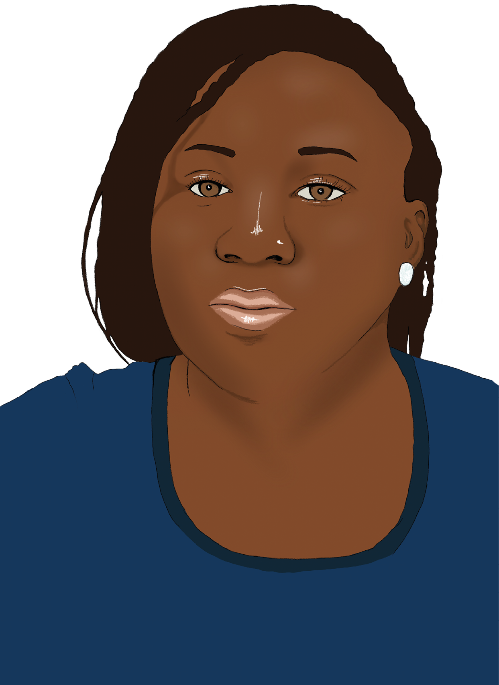

...es Menschen nicht erlaubt ist, ein Flugzeug oder eine Fähre zu nehmen, um Länder zu verlassen, in denen ihr Leben bedroht ist? Sie sind gezwungen, Wüsten, Berge und Meere auf gefährlichen Routen zu überqueren.
Was geschieht, wenn......sie sich auf diesen Reisen in der Wüste verirren? Wenn der Schnee in den Bergen zu hoch wird oder das Boot, auf dem sie unterwegs sind, in Seenot gerät? Sie geraten in Lebensgefahr.
Was geschieht, wenn......Staaten entscheiden, dass ihr Leben es nicht wert ist, gerettet zu werden? Obwohl dies einen Verstoß gegen das Völkerrecht darstellt - denn Menschen haben ein Recht darauf, aus Seenot gerettet zu werden. Schlimmer noch, die EU-Nationalstaaten suchen nach legalen Wegen, um die Überfahrt von Menschen auf der Flucht und ihre Rettung zu verhindern. Die EU errichtet physische und digitale Grenzen und arbeitet mit Staaten zusammen, die Menschen zur Flucht zwingen. Die EU finanziert Agenturen, die Menschen an Orte zurückbringen, an denen sie von Folter, Misshandlung, Missbrauch und Tod bedroht werden.
Was geschieht, wenn......Menschen auf der Flucht trotz der staatlichen Abschottungsmaßnahmen überleben, wenn sie von zivilen Akteuren aus Seenot gerettet werden und schließlich in Europa ankommen? Sind sie dann sicher?
.
Wir sind Teil eines transnationalen Netzwerks verschiedener Zivilgesellschaften und solidarisieren uns mit Menschen auf der Flucht. Wir wollen wissen was geschieht, wenn Menschen aus Seenot gerettet werden. Wir wollen wissen, ob sie an einem sicheren Ort in EUropa ankommen, und wir wollen sicherstellen, dass ihre Odyssee vom Meer in die Städte ein glückliches Ende hat.
Wir sind Seenotrettungsaktivist:innen, die sich dagegen wehren, dass die EU-Staaten unsere kontinuierlichen Bemühungen, Menschen vor dem Ertrinken im Meer zu bewahren, kriminalisieren. Wir sind Aktivist:innen, die Menschenrechtsverletzungen in EU-Aufnahmezentren und in Hotspots an den EU-Außengrenzen dokumentieren, und wir sind Aktivist:innen, die sich für Menschen einsetzen, die nach jahrelangen Reisen auf unsicheren Routen um eine Aufenthaltsgenehmigung und eine Zukunft in Europa kämpfen.
In einem gemeinsamen, vom Stiftungsfonds Zivile Seenotrettung geförderten Forschungsprojekt, haben borderline-europe - Menschenrechte ohne Grenzen, borderline Sicilia, Equal Rights Beyond Borders, der Flüchtlingsrat Berlin und Sea-Watch den Verbleib von aus Seenot geretteten Menschen in den Jahren 2019 und 2020 eingehend untersucht.
Es liegt in unserem gemeinsamen Interesse, eine kritische Analyse vermeintlich humanitärer Grenzpraktiken aus basisdemokratischer Perspektive vorzunehmen und dabei die Forderungen der Betroffenen in den Mittelpunkt zu stellen: Menschen, die auf der Flucht sind und aus Seenot gerettet werden.

ZUSAMMENFASSUNG
Der Begriff “RELOCATION” ist seit 2015 Teil der zentralen Migrationsagenda der EU und wurde im Neuen Pakt zu Migration und Asyl 2020 erneut als „solidarische Lösung“ in der Frage der Verteilung von Schutzsuchenden in der EU bestätigt.1 Im Jahr 2018 wurde die EUropäische Öffentlichkeit stärker für das Thema Relocation, insbesondere die Umverteilung von aus Seenot geretteten Personen, sensibilisiert.² Mit der Sperrung der italienischen und maltesischen Häfen für zivile Seenotrettungsschiffe³ sowie staatliche Schiffe und Handelsschiffe, wurde jede Ausschiffung aufgrund von Verhandlungen über die Verteilung von Personen, die an den EU Außengrenzen ankommen, aggressiv verzögert. Im September 2019 einigten sich die Mitglieder der EU-Kommission auf einen Mechanismus zur vorübergehenden Ad-hoc-Verteilung, das sogenannte Malta-Abkommen, das von Deutschland, Frankreich, Malta und Italien unterzeichnet wurde.⁴ Es sollte die Ausschiffung und den anschließenden Umverteilungsprozess in die teilnehmenden EU-Mitgliedstaaten formalisieren.
In der vorliegenden Fallstudie Italien konzentrieren wir uns auf die Erfahrungen von aus Seenot geretteten Menschen, die in italienischen Hotspots auf ihre Umverteilung warten. Ihre Perspektiven zeigen auf, wie willkürlich die Auswahlprozesse des EASO, der EU-Mitgliedsstaaten und der italienischen Behörden sind. Darüber hinaus wird in der italienischen Fallstudie der Hotspot-Ansatz als EUropäische⁵ Lösung kritisiert. Diese führt, anstatt die Umverteilung in andere EU-Staaten zu fördern, zu einer massiven Entrechtung und Gewalt.
In der darauffolgenden Fallstudie Malta wird gezeigt, dass die in Malta übliche Inhaftierung von Asylbewerber:innen den Zugang zu rechtlicher und sozialer Unterstützung für diese Menschen erheblich erschwert. So war es in Malta schwieriger, ein Monitoring der Umverteilungsmechanismen von aus Seenot geretteten Menschen durchzuführen. Dennoch konnten wir Kontakte zu Personen in maltesischen Hafteinrichtungen herstellen. Anhand eines konkreten Rechtsfalles analysieren wir kritisch, wie der deutsche Verfassungsschutz Sicherheitsüberprüfungen mit Schutzsuchenden durchführt und welche Rechtsgrundlage dafür vorliegt.
Die dritte Fallstudie befasst sich schließlich mit der Situation von Schutzsuchenden in Deutschland nach dem Umverteilungsprozess. Die Fallstudie zeigt, dass die deutschen Behörden weder die traumatischen Erfahrungen berücksichtigen, die die Menschen während ihrer Reise nach Europa gemacht haben, noch ausreichende Informationen, Unterstützung und Hilfe für ein gesundes Ankommen in Deutschland bereitstellen. Die Studie wirft damit weitere Fragen danach auf, inwiefern Umverteilungsprozesse menschlich gestaltet werden (könnten). Eine genauere Betrachtung der Anerkennungsquoten zeigt auch, dass die meisten Menschen, die nach Deutschland umverteilt wurden, kurz nach ihrer Ankunft im Asylverfahren abgelehnt wurden.
- European Commission 2020: Communication from the Commission on a New Pact on Asylum and Migration. COM(2020) 609 final: https://eur-lex.europa.eu/legal-content/EN/TXT/?qid=1601287338054&uri=COM%3A2020%3A609%3AFIN#document2 (letzter Zugriff 05.12.2020)
- Im Jahr 2020, nach den Bränden in Moria, dem berüchtigtsten Hotspot für Asylsuchende auf der griechischen Insel Lesbos, beherrschte der Ruf nach einer Umverteilung von Menschen aus Griechenland nach Deutschland die öffentliche Debatte. DW 2020: Thousands march in Berlin to demand Germany take in Moria refugees. Deutschland | Nachrichten | DW | 21.09.2020 (letzter Zugriff 11.01.2021).
- Einzelheiten zu den SAR-Ankünften und zur Debatte zwischen den EU-Mitgliedsstaaten finden sich im Kapitel 2.
- Siehe das Abkommen von Malta
- Der Begriff "EUropäisch" bezieht sich auf einen (geographischen) Kontext, in dem EU-Grenzpolitiken dominieren. EUropäisch ist nicht mit Europa als Kontinent gleichzusetzen.
Anhand der drei Fallstudien zu ITALY, MALTA und DEUTSCHLAND und den darin enthaltenen Erfahrungsberichten von Betroffenen zeigt unser Bericht, dass es den Umverteilungsverfahren an Transparenz, rechtmäßigen Verfahren und vor allem an einer menschenwürdigen Behandlung der in EUropa ankommenden Schutzsuchenden mangelt.
Daher fordern wir als Kollektiv von NROen, Aktivist:innen und Menschen, die in der EU umverteilt wurden:
RELOCATION


AD HOC UMVERTEILUNGEN
Das Ad-hoc-Umverteilungssystem der EU ist das Ergebnis einer politischen Strategie, die die Ankunft von aus Seenot geretteten Personen von vorübergehenden Umverteilungsvereinbarungen abhängig gemacht hat. Personen auf der Flucht, die in Italien oder Malta ankommen, sollten in andere EU-Mitgliedstaaten umverteilt werden. Seit Juli 2018 und vor dem Hintergrund der von der früheren italienischen Regierung verfolgten Politik der geschlossenen Häfen¹ waren diese Abkommen – die als „Ausnahme“ von den Grundsätzen der Dublin-Verordnung gelten sollten² – die Antwort der EU auf die Ankunft von aus Seenot geretteten Menschen in Italien und Malta. Koordiniert von der Europäischen Kommission beschlossen die EU-Mitgliedstaaten, der Weigerung Italiens und Maltas NRO Schiffe – und in einigen Fällen sogar staatliche Militärschiffe – in einen sicheren Hafen einfahren zu lassen, mit einem Schiff-zu-Schiff Ansatz zu begegnen.³ Seit dem Sommer 2018 wurden die Ausschiffungen von Schiffbrüchigen von langwierigen Verhandlungen begleitet, in denen einige EU-Mitgliedstaaten letztlich die Aufnahme eines bestimmten Kontingents an geretteten Menschen zusagten, da die italienischen und maltesischen Behörden den Schiffen ansonsten die Einfahrt in ihre Häfen verweigert hätten. Dies führte zu einer Reihe von verzögerten Ausschiffungen (Standoffs), die die Geretteten zwangen, für längere Zeit unter äußerst prekären und gefährlichen Bedingungen auf See zu bleiben, während auf europäischer Ebene über ihre Zukunft verhandelt wurde.⁴ Die italienische und maltesische Regierung versuchten, die EU-Kommission unter Druck zu setzen, um die Kriterien der Dublin-Verordnung neu zu verhandeln. Diese besagen, dass das Land der Erstankunft innerhalb der EU für die Bearbeitung von Asylanträgen zuständig ist. Leidtragende sind dabei die NROen und die Schiffbrüchigen, die weitere Wochen auf See verbringen müssen. Die Dublin-Verordnung wird seit ihrer Einführung von den südlichen EU-Ländern als Belastung empfunden.⁵
- Politico 2019: Matteo Salvini: Italian ports closed to migrants (by Thibault Larger), https://www.politico.eu/article/matteo-salvini-italian-ports-closed-to-migrants/ (letzter Zugriff 13.11.2020)
- Ammirati, A.; Gennari, L.; Massimi, A. (2020). Forced Mobility and the Hotspot Approach: The Case of the Informal Disembarkation Agreements, https://www.law.ox.ac.uk/research-subject-groups/centre-criminology/centreborder-criminologies/blog/2020/02/forced-mobility, (letzter Zugriff 28.10.2020).
- Im August 2018 wurde das Schiff Diciotti von der italienischen Küstenwache daran gehindert, 177 gerettete Personen in Sizilien an Land zu bringen. The Guardian 2018: Standoff in Italian port as Salvini refuses to let refugees disembark. (by Lorenzo Tondo), https://www.theguardian.com/world/2018/aug/21/italy-refugees-salvini-refuses-coastguard-ship-docks-diciotti (letzter Zugriff 10.01.2021).
- Carrera, Sergio; Cortinovis, Roberto 2019: Search and Rescue, Disembarkation and Relocation Arrangements in the Mediterranean Sailing Away from Responsibility? In: CEPS Paper in Liberty and Security in Europe, No. 2019-10: p. 23.
- Relying On Relocation. Ecre’s Proposal For A Predictable And Fair Relocation Arrangement Following Disembarkation. 2016. Policy Paper 6. ECRE, https://www.ecre.org/wp-content/uploads/2019/01/Policy-Papers-06.pdf, (letzter Zugriff 10.11.2020).
- Lutz, Philipp; Kaufmann, David; Stünzi, Anna 2020: Humanitarian Protection as a European Public Good: The Strategic Role of States and Refugees. In: JCMS: Journal of Common Market Studies 58 (3): 757–75. https://doi.org/10.1111/jcms.12974.
DUBLIN-VERORDNUNG
Die Schaffung des Schengen-Raums im Jahr 1985 und seine Umsetzung in europäisches Recht mit dem Vertrag von Amsterdam im Jahr 1999 haben dazu geführt, dass NichtEU-Bürger:innen mit einem äußerst restriktiven Visasystem konfrontiert sind, welches die Einreise in die EU regelt.¹ Das Dublin-Regime, benannt nach der ersten Dublin-Verordnung, die 1990 in Dublin/Irland, unterzeichnet wurde, ist Teil der EU-Grenzpolitik und zielt darauf ab, die Migration asylsuchender Personen in die EU zu „steuern“.² Die Dublin-Verordnung legt fest, welcher EU-Mitgliedstaat für die Bearbeitung der Asylanträge von Menschen, die in Europa ankommen, zuständig ist. Obwohl im Laufe der letzten 30 Jahre zahlreiche Änderungen an der ersten Dublin-Verordnung vorgenommen wurden, gilt nach wie vor die Grundregel, dass der
EU-Mitgliedstaat, in den eine Person zuerst in die EU einreist, für die Bearbeitung des Asylantrags zuständig ist.³
Den EU-Behörden zufolge soll die DublinVerordnung verhindern, dass Menschen, die Asyl beantragen, dies in mehreren Mitgliedstaaten tun. Die EU-Mitgliedstaaten, die an den Außengrenzen der EU und des Schengen-Raums liegen, wie Italien, Malta oder Griechenland,⁴ sind daher nach EU-Recht für die Bearbeitung der meisten Asylanträge zuständig.
Die kontinuierlichen Debatten auf EU-Ebene über die Notwendigkeit einer Umverteilung asylsuchender Personen innerhalb der EU sind somit eine direkte Folge der Dublin-Verordnung.
Die Dublin-Verordnung dient in erster Linie der Organisation des Grenzschutzes und lässt, wie in den folgenden Kapiteln gezeigt wird, die Bedürfnisse von asylsuchenden Menschen völlig außer Acht.⁵
Da laut EU-Recht Asylverfahren in erster Linie durch Mitgliedsstaaten an den Außengrenzen durchgeführt werden sollen, stellt sich seit Jahrzehnten die Frage, wie die Bearbeitung einer großen Zahl von Asylanträgen organisiert werden soll bzw. unter welchen Bedingungen Asylsuchende ihr Recht auf Asyl und auf eine menschliche Behandlung wahrnehmen können. Obwohl die Inhaftierung und Unterbringung von Asylsuchenden in überfüllten Lagern, in denen es an grundlegenden Versorgungsstandards mangelt, keine neue Strategie der EU ist, behauptete die EU-Migrationsagenda von 2015 dennoch, einen neuen Ansatz entwickelt zu haben:
DER HOTSPOT-ANSATZ DER EU-KOMMISSION
- European Communities 1997: TREATY OF AMSTERDAM AMENDING THE TREATY ON EUROPEAN UNION, THE TREATIES ESTABLISHING THE EUROPEAN COMMUNITIES AND CERTAIN RELATED ACTS. https://www.europarl.europa.eu/topics/treaty/pdf/amst-en.pdf, (letzter Zugriff 25.12.2020).
- European Communities 1997: Convention determining the State responsible for examining applications for asylum lodged in one of the Member States of the European Communities, https://eur-lex.europa.eu/legal-content/EN/TXT/PDF/?uri=CELEX:41997A0819(01)&from=EN, (letzter Zugriff 25.12.2020).
- Das Dublin-III-Übereinkommen ist das jüngste gültige EU-Übereinkommen über die Zuständigkeit für die Prüfung eines Asylantrags innerhalb der EU. Verordnung (EU) Nr. 604/2013 https://eur-lex.europa.eu/LexUriServ/LexUri-Serv.do?uri=OJ:L:2013:180:0031:0059:en:PDF (letzter Zugriff 25.12.2020).
- Obwohl Ungarn, die Slowakei und Polen ebenfalls Kritik an der Dublin-Verordnung üben, sind für den vorliegenden Bericht nur die italienischen und maltesischen sowie in kleinerem Maße auch die griechische Umverteilung von Bedeutung.
- Für humanitäre Ausnahmefälle in der Dublin Verordnung, siehe Dublin Article 17 page 32
DER HOTSPOT-ANSATZ DER EU-KOMMISSION
Ansatz, bei dem das Europäische Unterstützungsbüro für Asylfragen (EASO), die Europäische Agentur für die Grenz- und Küstenwache (Frontex), Europol und Eurojust vor Ort mit den Behörden der EU-Mitgliedstaaten zusammenarbeiten, die an den EU-Außengrenzen mit einem unverhältnismäßigen Migrationsdruck konfrontiert sind, um dazu beizutragen, dass sie ihren Verpflichtungen nach EU-Recht nachkommen und ankommende Migrant:innen rasch identifizieren, registrieren und Fingerabdrücke abnehmen.” ¹
Wie bereits erwähnt, wären die EU-Außengrenzen ohne die Dublin-Verordnungen nicht von einem „Migrationsdruck“ betroffen, und – was noch wichtiger ist – ohne diese Verordnung könnten Personen, die in der EU Schutz suchen, dies in dem Land tun, in dem sie sich am sichersten fühlen. Der Hotspot-Ansatz ist somit direkt mit der Dublin-Verordnung verknüpft. Durch den Einsatz von EU-Agenturen in den Erstaufnahmeeinrichtungen in Griechenland und Italien sollte der Hotspot-Ansatz eine Säule für die Umverteilung bilden:
„Der Hotspot-Ansatz wird auch zur Umsetzung der von der Europäischen Kommission am 27. Mai und am 9. September 2015 vorgeschlagenen vorläufigen Umverteilungsregelung beitragen: Personen, die eindeutig internationalen Schutz benötigen, werden in den EU-Mitgliedstaaten an vorderster Front ermittelt und in andere EU-Mitgliedstaaten umverteilt, wo ihr Asylantrag bearbeitet wird.”²
Zahlreiche Studien zum Hotspot-Ansatz³ sowie kritische Stimmen, die Grundrechtsverletzungen dokumentieren, haben gezeigt, dass die Absicht der Kommission, eine reibungslosere und schnellere Umverteilung aus den Hotspots zu ermöglichen, gescheitert ist. Stattdessen wurden griechische und italienische Erstaufnahmeeinrichtungen, deren Kapazitäten bereits vor der Umsetzung des Hotspot-Ansatzes im Jahr 2015 für die Unterbringung von Asylbewerber:innen unangemessen waren, wegen der Präsenz mehrerer EU-Agenturen in Hotspots umbenannt. Der Hotspot-Ansatz hat die menschenverachtenden Konsequenzen von Massenunterbringung auf engem Raum also noch verstärkt. Außerdem wurde die in der EU-Migrationsagenda von 2015 versprochene Umverteilung von über 160.000 Personen aus Griechenland und Italien in andere Mitgliedstaaten zwischen 2015 und 2017 nicht durchgeführt.⁴ Darüber hinaus hat die Umsetzung des EU-Türkei-Deals im Jahr 2016 griechische Hotspots in geschlossene Haftanstalten verwandelt, in denen willkürliche und unrechtmäßige Abschiebungen und zahlreiche dokumentierte Menschenrechtsverletzungen seit Jahren andauern.⁵ Seit der Einführung des EU-Türkei-Deals am 20. März 2016 wurde der Umverteilungsmechanismus nicht auf Personen angewandt, die auf den griechischen Inseln ankamen, wodurch die Vorstellung, dass die Hotspots eine schnellere Umverteilung ermöglichen würden, ad absurdum geführt wurde.⁶ Der Hotspot-Ansatz und die befristeten Umverteilungsprogramme sind nicht nur aufgrund des großen Leids, das sie Menschen zufügen, gescheitert. Sie haben sich auch als ineffektiv darin erwiesen, ihr „solidarisches" Ziel zu erreichen, den „Migrationsdruck" in Griechenland und Italien zu verringern. Dennoch werden im Abkommen von Malta die gleichen Verfahren angewandt.⁷ Der Ad-hoc-Umverteilungsmechanismus, der spezifisch auf die Ausschiffung und Umverteilung von aus Seenot geretteten Personen abzielt und auf den im folgenden Abschnitt näher eingegangen wird, zwingt in Italien ankommende Personen zum Aufenthalt in einem der vier derzeit aktiven Hotspots.⁸
- https://ec.europa.eu/home-affairs/what-we-do/networks/european_migration_network/glossary_search/hotspot-approach_en (letzter Zugriff 10.01.2021) (Übersetzung: Sara Bellezza)
- Ebd.
- Bousiou, Alexandra; Papada, Evie 2020: Introducing the EC Hotspot Approach: A Framing Analysis of EU’s Most Authoritative Crisis Policy Response, International Migration, 1-14; Tazzioli, Martina; Garelli, Glenda 2018: Containment beyond Detention: The Hotspot System and Disrupted Migration Movements across Europe.
- Europäischer Parlamentarischer Forschungsdienst 2020: Hotspots an den EU-Außengrenzen State of play (von Katrien Luyten und Anita Orav) (letzter Zugriff 11.01.2021).
- Für eine ausführliche Diskussion siehe Valeria Hänsel und Bernd Kasparek 2020: "Hotspot-Lager als Blaupause für die Reform des Gemeinsamen Europäischen Asylsystems? Politikfolgenabschätzung des Hotspot-Ansatzes in Griechenland", Rat für Migration https://mediendienst-integration.de/fileadmin/Dateien/Hotspot_Lager_als_Blaupause_fuer_die_Reform_des_Gemeinsamen_Europaeischen_Asylsystems.pdf (letzter Zugriff 10.01.2021).
- Ziebritzki, Catharina ; Nestler, Robert: “Hotspots an der EU-Außengrenze. Eine rechtliche Bestandsaufnahme”, MPIL Research Paper Nr. 2017-17, S. 22 ff., https://ssrn.com/abstract=3028111, (letzter Zugriff 07.01.2021).
- Das Abkommen von Malta und seine Effekte in Malta und Italian werden ausführlich in den entsprechenden Kapiteln behandelt.
- Eine ausführlichere Diskussion über die Umverteilungsverfahren in den italienischen Hotspots und die Erfahrungen von Menschen, die gezwungen sind, dort zu verbleiben, finden Sie in der Fallstudie Italien.
DER NEUE MIGRATIONSPAKT: UMVERTEILUNG UND ABSCHIEBUNG
Der Neue Pakt zu Migration und Asyl der EU 2020 beinhaltet erneut Vorschläge zu Umverteilungsprogrammen und ergänzt diese durch sogenannte „Rückkehrpatenschaften“ als Kernpunkt einer „neuen“ Herangehensweise zur Migration.¹ Es ist fraglich, warum ein System, das sich als unwirksam erwiesen hat und schutzsuchenden Menschen enormen Schaden zufügt, weiterhin als einzige „Lösung“ für das Gemeinsame Europäische Asylsystem (GEAS) präsentiert wird. Der Migrationspakt schlägt vor, den Status quo mit Hotspots an den Seegrenzen der EU beizubehalten und betont gleichzeitig die Notwendigkeit zur Umverteilung.² Die Umverteilung zielt jedoch nur auf Personen ab, bei denen die Wahrscheinlichkeit besteht, dass ihnen Asyl gewährt wird, oder auf Personen, die aus Seenot gerettet werden.³ In der Theorie soll die Wahrscheinlichkeit einer Bleiberechtsgewährung von den jeweiligen Asylanerkennungsquoten der Mitgliedsstaaten abhängig gemacht werden. In der Praxis werden Menschen aber auch in EU-Mitgliedsstaaten umverteilt, in denen ihr Herkunftsland als „sicher“ gilt und sie praktisch keine Chance auf Asyl haben.⁴ Damit wird das individuelle Recht auf Asyl aufgehoben, bevor ein ordnungsgemäßes Verfahren stattfinden kann. Schnellverfahren in Hotspot-Einrichtungen respektieren nicht das individuelle Recht, gegen Ablehnungsentscheidungen Berufung einzulegen, und bergen sogar das Risiko der Abschiebung, bevor ein Gerichtsurteil feststellen kann, dass eine Person tatsächlich ein Recht auf Aufenthalt in Europa hat.⁵ Der Migrationspakt weist fehlende rechtsstaatliche Verfahren auf und beharrt auf dem Konzept der „Solidarität“ zwischen den Mitgliedstaaten, indem er denjenigen, die keine Asylsuchenden in ihrem Land aufnehmen wollen, anbietet, „Rückführungen“ durchzuführen.⁶ In der Praxis droht dieser Vorschlag weitere Inhaftierungszentren zu schaffen. Schutzsuchende Personen werden ohne freie Entscheidungsmöglichkeit unnötigen Umverteilungen in EUropa von einem Land in ein Anderes ausgesetzt und nach jahrelangem Aufenthalt in Aufnahmeeinrichtungen zusätzlich mit Abschiebung bedroht.
Die EU-Migrationsagenda aus dem Jahr 2015, das Abkommen von Malta und der Vorschlag der EU-Kommission für den Neuen Pakt zu Migration und Asyl in 2020 bieten also keinen humanen oder realistischen Lösungsansatz für Migration. Nach wie vor wird Migration als Ausnahme von der Regel betrachtet und die EU beschließt Vereinbarungen, die den Umgang mit Fluchtmigration kontinuierlich als Ausnahmezustand darstellen. Auf diesen „Ausnahmezustand“ wird dann mit „vorübergehenden" politischen Lösungen reagiert.⁷ In der folgenden Diskussion über die „Ausschiffungskrise“ und die Verabschiedung des Malta-Abkommens werden die oben genannten Argumente durch empirische Belege aus unserer Forschung untermauert. Unsere Studie macht deutlich, dass eine gründliche Überarbeitung des Neuen Pakts zu Migration der EU-Kommission notwendig ist.
- EC 2020: New Pact on Migration. A fresh start on migration in Europe. https://ec.europa.eu/info/strategy/priorities-2019-2024/promoting-our-european-way-life/new-pact-migration-and-asylum_en (letzter Zugriff 11.01.2021).
- Ebd.
- Ebd.
- Pro Asyl 2020: The "New Pact": new border procedures, more detention, no solution to old problems. p.4 f.. PRO-ASYL_New-Pact_Overview-of-the-most-important-aspects.pdf (letzter Zugriff 11.01.2021).
- Ebd. Seite 4.
- Ebd. Seite 7.
- EC 2020: New Pact on Migration. A fresh start on migration in Europe https://ec.europa.eu/info/strategy/priorities-2019-2024/promoting-our-european-way-life/new-pact-migration-and-asylum_en (letzter Zugriff 11.01.2021).
VON BLOCKIERTEN HÄFEN BIS ZUM MALTA-ABKOMMEN
DIE POLITIK DER GESCHLOSSENEN HÄFEN
Nach dem Ende der militärischen Such- und Rettungsmission Mare Nostrum im Jahr 2014 und der anschließend verstärkten Finanzierung und Ausbildung der sogenannten libyschen Küstenwache durch die EU erreichten die Bemühungen der EU, nicht nur Migration, sondern auch zivile Such- und Rettungsmissionen zu kriminalisieren, eine neue Stufe.¹ Nicht nur wurden SAR-Einsätze unter Generalverdacht gestellt und zahlreiche SAR-Schiffe nach der Ankunft beschlagnahmt, es wurde zudem die Ausschiffung von Menschen, die aus Seenot gerettet wurden, als Verhandlungsinstrument eingesetzt.
Der erste Fall, der zu langen Verhandlungen zwischen EUMitgliedsstaaten und schließlich zu einer Umverteilungsvereinbarung führte, war ein Streit zwischen Italien und Malta darüber, wo die über 600 Menschen, die im Juni 2018 vom zivilen Rettungsschiff Aquarius gerettet wurden, an Land gehen sollten.² Nachdem die Aquarius über eine Woche auf See verbleiben musste, weil Italien und Malta die Ankunft verweigerten, erteilte Spanien schließlich die Genehmigung, die Menschen in Valencia an Land zu bringen.³ Einige aus Seenot gerettete Personen wurden nach Frankreich umverteilt, während die meisten in Spanien blieben.⁴
Nach dem Fall der Aquarius gab es von Juni 2018 bis Juni 2019 weitere 24 Fälle, in denen NRO-Schiffe durchschnittlich neun Tage auf See verbringen mussten, bevor eine Einigung zwischen den EU-Mitgliedstaaten erzielt wurde, in der ein sicherer Hafen zugewiesen und die Ausschiffung der geretteten Menschen ermöglicht wurde.⁵
Einer der eklatantesten Fälle ereignete sich im Januar 2019: Sea-Watch und Sea-Eye retteten 32 bzw. 17 Menschen vor der libyschen Küste. Unter extrem schwierigen Wetterbedingungen mussten beide Schiffe 19 Tage lang auf See aushalten⁶, während die italienische Regierung mit den maltesischen Behörden aneinandergeriet.⁷
Erst nachdem öffentlich bekannt gegeben wurde, dass eine Vereinbarung über die Umverteilung zwischen acht Ländern (Deutschland, Frankreich, Portugal, Irland, Rumänien, Luxemburg, den Niederlanden und Italien) gefunden worden war⁸, durften die 49 Menschen schließlich in Malta an Land gehen.
Das gleiche Schicksal ereilte die Sea-Watch 3 weniger als zehn Tage später, nachdem sie 47 Menschen aus einem Schiffswrack gerettet hatte. Bei dem Schiffbruch waren mindestens 100 Menschen ertrunken.⁹ Die Sea-Watch 3 saß 13 Tage lang auf See fest und ging schließlich in Catania (Italien) an Land, als Frankreich, Deutschland, Portugal, Malta, Luxemburg, Rumänien und Litauen zusagten, die asylsuchenden Menschen umzuverteilen.¹⁰ Die 47 geretteten Menschen an Bord der Sea-Watch 3 reichten einen Antrag beim Europäischen Gerichtshof für Menschenrechte (EGMR) ein, um einstweilige Maßnahmen gegen die blockierten Häfen in Italien durchzusetzen. Der EGMR forderte die italienische Regierung einen Tag vor dem schließlich erlaubten Anlegen der SeaWatch 3 auf, Schutzmaßnahmen zu ergreifen, insbesondere für die Minderjährigen an Bord.¹¹
Durch die langen Stand-Offs, von denen SAR-NROen betroffen sind, wird die Pflicht, in Seenot geratene Personen „unverzüglich“¹² an einen sicheren Ort zu bringen, massiv verletzt und unrechtmäßig dem Ergebnis von Verhandlungen auf EU-Ebene unterworfen. Die prekäre Lage von auf See festgesetzten Personen wird ausgenutzt, um Änderungen in der EU-Migrationspolitik zu erzwingen. Während diese Adhoc-Vereinbarungen im Jahr 2018 noch als Notmaßnahme zur vorübergehenden Bewältigung der „Ausschiffungskrise“ gedacht waren,¹³ wurden EU-Verhandlungen und lange Stand-Offs im Jahr 2019 zum wichtigsten systematischen Verfahren für Seenotrettungsfälle.¹⁴
Im Juni 2019 schließlich versuchte die EU, wie aus einem Arbeitspapier des Europäischen Rates hervorgeht, die Umverteilung von aus Seenot geretteten Menschen zu regulieren.¹⁵
Die im Arbeitspapier präsentierten „Leitlinien“ sind ein unverbindlicher Vorschlag, wie die Aufnahme in andere EU-Mitgliedsstaaten geregelt werden könnte. Dieses Vorgehen weckt Erinnerungen an die hochproblematischen „Ausschiffungsplattformen“, die von der EU geplant, aber nie umgesetzt worden waren.¹⁶ Die im Arbeitspapier verfolgte Herangehensweise an die Politik der geschlossenen Häfen zeigt, wie Hotspots als Ausgangspunkt für eine Umverteilung genutzt werden sollen.
- Oxfam Italia 2019: Accordo Italia-Libia: scacco ai diritti umani in 4 mosse (by Paolo Pezzati), https://www.oxfamitalia.org/wpcontent/uploads/2019/01/SCACCO_AI_DIRITTI_UMANI_IN_4_MOSSE_DEF..pdf (letzter Zugriff 12.11.2020).
- Corriere della Sera 2018: Migranti, scontro Italia-Malta. Salvini: «Porti chiusi all’Aquarius» Conte: “Noi lasciati soli” https://roma.corriere.it/notizie/cronaca/18_giugno_11/migranti-salvini-la-aquarius-non-potra-approdare-un-porto-italiano-28e19a16-6cb2-11e8-8fe1-92e098249b61.shtml (letzter Zugriff 12.11.2020).
- UNHCR 2018: UNHCR warns against repeat of Aquarius standoff, https://www.unhcr.org/news/press/2018/6/5b265af24/unhcr-warns-against-repeat-aquarius-disembarkation-standoff-boat-arrives.html (letzter Zugriff 12.11.2020).
- Carrera, Sergio; Cortinovis, Roberto. 2019: ‘Search and Rescue, Disembarkation and Relocation Arrangements in the Mediterranean Sailing Away from Responsibility?’ CEPS Paper in Liberty and Security in Europe, No. 2019-10: p. 24.
- ISPI 2019: Cosa c’è da sapere sul vertice di Malta (by Elena Corradi, Matteo Villa). https://www.ispionline.it/it/pubblicazione/migranti-e-ue-cosa-serve-sapere-sul-vertice-di-malta-23970 (letzter Zugriff 28.10.2020).
- The New York Times 2019: Rescued Migrants, at Sea for Weeks, Struggle to Reach a New Life (by Patrick Kingsley), https://www.nytimes.com/2019/01/08/world/europe/migrants-stranded-sea-watch.html (letzter Zugriff 29.10.2020).
- The Guardian 2019: Italian government rift over fate of 49 people stuck on rescue ships (by Angela Giuffrida e Lorenzo Tondo), https://www.theguardian.com/world/2019/jan/07/italian-government-rift-over-fate-of-49-people-stuck-on-rescue-ships (letzter Zugriff 12.11.2020).
- Gemäß dieser Vereinbarung wären weitere 249 Personen, die zuvor von maltesischen Militärschiffen gerettet wurden, in diese europäischen Länder umgesiedelt worden. Siehe: European Commission 2019: Remarks by Commissioner Dimitri Avramopoulos on the solution found with regards to the disembarkations on NGOs vessels and progress under the European Agenda on Migration https://ec.europa.eu/commission/presscorner/detail/en/SPEECH_19_304 (letzter Zugriff 29.10.2020).
- The Malta Independent: Sea-Watch 3 rescues 47 people from drowning https://www.independent.com.mt/articles/2019-01-19/local-news/Sea-Watch-3-rescues-47-people-from-drowning-6736202340 (letzter Zugriff 12.11.2020).
- Ansa 2019: Conte, tra poche ore sbarco SeaWatch, https://www.ansa.it/sito/notizie/topnews/2019/01/30/conte-tra-poche-oresbarco-sea-watch_b59258d0-0aef-4744-abd2-3209905cd3c3.html (letzter Zugriff 29.10.2020).
- Council of Europe 2019: ECHR grants an interim measure in case concerning the Sea Watch 3 vessel, https://www.coe.int/en/web/special-representative-secretary-general-migration-refugees/newsletter-february-2019/-/asset_publisher/cVKOAoro-BOtI/content/echr-grants-an-interim-measure-in-case-concerning-the-seawatch-3-vessel?inheritRedirect=false (letzter Zugriff 29.10.2020).
- Art. VIII(b)(vi)(2)(bb) SOLAS and Art. 111(2)(f) SAR. IMO (2004), Adoption of Amendments to the International Convention for the Safety of Life at Sea, 1974, as amended, MSC Res. 153(78), MSC Doc. 78/26.Add.1, Annex 3 (May 20, 2004); IMO, Adoption of Amendments to the International Convention on Maritime Search and Rescue, 1979, as amended, Res. MSC 155(78), MSC Doc. 78/26.add.1, Annex 5, May 20. For a summary on Maritime Law see: Keller, Vera Magali, Florian Schölerand Marco Goldoni: Not a Safe Place?: Italy’s Decision to Declare Its Ports Unsafe under International Maritime Law, VerfBlog, 2020/4/14, https://verfassungsblog.de/not-a-safe-place/ (letzter Zugriff 11.01.2021).
- Carrera, Sergio; Cortinovis, Roberto. 2019: ‘Search and Rescue, Disembarkation and Relocation Arrangements in the Mediterranean Sailing Away from Responsibility?’ CEPS Paper in Liberty and Security in Europe, No. 2019-10, p. 1–51.
- Ebd.
- European Council of Europe 2019: Guidelines on temporary arrangements for disembarkation, https://www.statewatch.org/media/documents/news/2019/jun/eu-council-wk-guidelines-on-temporary-arrangement-disembarkation.pdf (letzter Zugriff 06.01.2020).
- ECRE 2018: European Council: regional disembarkation platforms a key objective. https://www.ecre.org/european-council-regional-disembarkation-platforms-a-key-objective/ (letzter Zugriff 11.01.2021).

DER VORGESCHLAGENE MECHANISMUS ZUR UMVERTEILUNG
Das sechsseitige Arbeitspapier des Rates der Europäischen Union vom 12. Juni 2019¹ enthält neun Kapitel und fasst im Wesentlichen zusammen, was in den Ministerratssitzungen in Bezug auf Ad-hoc-Umverteilungen diskutiert wurde und im September 2019 zum Malta-Abkommen führte. Das Malta-Abkommen selbst enthält keine detaillierten Informationen zu den Verfahrensschritten, die bei einer Ausschiffung und Umverteilung beachtet werden sollten. Die im Arbeitspapier genannten „Leitlinien für vorläufige Verfahren bei der Ausschiffung“ sind detaillierter und können daher als Konzept für Standardarbeitsanweisungen (standard operating procedures, SOPs) für den Ausschiffungsmechanismus betrachtet werden.
Im ersten Teil der Leitlinien werden die wichtigsten Ziele und Grundsätze des vorläufigen Verfahrens dargelegt. Insbesondere wird betont, dass die Beteiligung der Mitgliedstaaten auf Freiwilligkeit beruhen soll und es grundsätzlich darum gehe, die Abwicklung von Ausschiffungsfällen zu optimieren. Grundlage hierfür seien die Erfahrungen mit früheren Fällen, in denen das Anlegen von SAR-Schiffen von Umverteilungsverhandlungen abhängig gemacht worden war. Diese Verhandlungen sollten als „best practice“-Modelle betrachtet werden. In den Leitlinien wird außerdem festgestellt, dass es sich um ein vorübergehendes Abkommen handelt, das an bestehende nationale und EU-rechtliche Vorgaben gebunden ist.
Im zweiten Teil der Leitlinien wird dargelegt, wann der temporäre Umverteilungsmechanismus angewandt werden soll: Im Wesentlichen betreffe das temporäre Abkommen „Such- und Rettungseinsätze“ oder andere Ankünfte, bei denen eine humanitäre Notlage zu vermuten ist. Was dies genau bedeutet, bleibt unklar. Theoretisch sollte der Umverteilungsmechanismus auch für die Umverteilung von Schutzsuchenden aus den EU-Hotspots² und vom griechischen Festland angewandt werden. Nachdem im Jahr 2020 der berüchtigte Hotspot Moria auf der griechischen Insel Lesvos abgebrannt war, sollten z.B. 1500 Menschen nach Deutschland umverteilt werden.³ Weiterhin erklären die Leitlinien, dass die jeweiligen EU-Mitgliedstaaten einen Antrag auf Umverteilung stellen sollen, wenn sie unter großem „Migrationsdruck" stehen.
Der dritte Teil der Leitlinien befasst sich mit der Struktur und den Aufgaben einer „Unterstützungsplattform“, die für die Umsetzung des Verteilungsmechanismus zuständig sein soll. Diese wird von der EU-Kommission in Zusammenarbeit mit dem Integrierten Politischen Krisenreaktionsmechanismus (IPCR) und ggf. in Absprache mit dem UNHCR und der IOM koordiniert.
Der vierte Teil enthält die spezifischen Verfahren, die der Ausschiffungsstaat - in der Praxis erfahrungsgemäß Italien oder Malta - zu berücksichtigen hat. Es werden bestimmte Verfahrensschritte beschrieben, die im Ausschiffungsmitgliedstaat durchgeführt werden müssen.
Der fünfte Teil befasst sich in nur einem Satz mit der „Zusammensetzung des Relocation Pools“ – dem Kernstück des Umverteilungsverfahrens.
Der sechste Teil beschreibt kurz die Beteiligung des Europäischen Unterstützungsbüros für Asylfragen (EASO), von Frontex und von Europol. Das EASO soll z.B. bei der Erarbeitung der „Matching-Kriterien“ für die Umverteilung und bei der Koordinierung der Verfahren beteiligt werden. Frontex und Europol sollen bei Sicherheitsüberprüfungen behilflich sein und Frontex soll Fingerabdrücke abnehmen und Abschiebungen organisieren.
- European Council of Europe 2019: Guidelines on temporary arrangements for disembarkation, https://www.statewatch.org/media/documents/news/2019/jun/eu-council-wk-guidelines-on-temporary-arrangement-disembarkation.pdf (letzter Zugriff 06.01.2020).
- Wie bereits erwähnt, wurden mit dem EU-Türkei-Deal im Jahr 2016 die Umverteilungsmechanismen von den Hotspots auf den griechischen Inseln ausgesetzt.
- Frankfurter Rundschau 2020: Moria: Angela Merkel und Horst Seehofer planen Aufnahme von 1.500 Geflüchteten aus Lesbos (by Rogalla et al.), https://www.fr.de/politik/moria-griechenland-fluechtlingslager-lesbos-horst-seehofer-aufnahme-angela-merkel-90039820.html (letzter Zugriff 11.01.2021).
DAS MALTA-ABKOMMEN
Das Abkommen von Malta trat in Kraft, nachdem die frühere italienische Regierung, deren Politik zu dem Schiff-für-Schiff-Ansatz und zu langen Wartezeiten für SAR-NROen geführt hatte, abgesetzt worden war.¹ Die neue Regierungskoalition in Italien war bestrebt, die Umverteilungsverfahren zu formalisieren und zu beschleunigen, um harte Verhandlungen zu vermeiden und Reibungen zwischen den EU-Mitgliedstaaten vorzubeugen. Obwohl die neue Regierung mit zahlreichen Minister:innen der vorherigen Regierung besetzt war, wollte sie sich vom harten Ton der Salvini-Zeit abgrenzen.²
Am 23. September 2019 trafen sich Deutschland, Frankreich, Italien und Malta in La Valletta im Beisein der finnischen EU-Ratspräsidentschaft und der Europäischen Kommission. Sie kamen zusammen, um eine gemeinsame Absichtserklärung über die Einführung eines einheitlichen Mechanismus für die Ausschiffung zu diskutieren. Wie in den Leitlinien des Rates der Europäischen Union vorgesehen, sollten lange Wartezeiten vermieden werden und für eine schnelle Umverteilung „im Falle eines unverhältnismäßigen Migrationsdrucks in den Teilnehmerstaaten“ sorgen.³
Trotz der Anwesenheit der finnischen Ratspräsidentschaft handelte es sich um ein informelles Gipfeltreffen mit dem Ziel, einen Vorschlag zu erarbeiten, der auf künftigen Ratstagungen präsentiert werden sollte.⁴ Laut Absatz 15 war das Abkommen von Malta als sechsmonatiges Pilotprojekt gedacht, das später als mögliche Reform des Gemeinsamen Europäischen Asylsystems weitergeführt werden sollte.
Die folgende Beschreibung der einzelnen Abschnitte fasst die wichtigsten Punkte der gemeinsamen Erklärung zusammen:
(§§ 1-2) Ein solidarischer Umverteilungsmechanismus, der eine sichere und würdige Ausschiffung und eine rasche Umverteilung der an Bord genommenen Migrant:innen gewährleistet.
(§§ 3) Eine Aufforderung an die Mitgliedstaaten, sich freiwillig an dem Mechanismus zu beteiligen und im Falle unverhältnismäßig vieler Ankünfte auch alternative sichere Häfen für Schiffe bereitzustellen.
(§§ 4-7) Der Einsatz von Schnellverfahren zur Schaffung von Standardverfahren für die Registrierung, Umverteilung und Rückführung.
Tatsächlich enthält das Abkommen von Malta keinen Vorschlag für ein standardisiertes Verfahren, das mit europäischem und internationalem Recht im Einklang stünde. Es wird lediglich festgestellt, dass der Mechanismus freiwillig ist, was bedeutet, dass es den Mitgliedstaaten überlassen bleibt, ob sie sich an der Umverteilung oder der Bereitstellung eines alternativen sicheren Hafens für jedes ankommende Schiff beteiligen oder nicht. Was das Verfahren selbst betrifft, so heißt es in dem Dokument, es solle „zügig“ ablaufen und nicht länger als 4 Wochen dauern (§ 2). Die Verfahren sollen „auf bestehenden Praktiken aufbauen und diese verbessern“ (§ 4), was sich auf die seit Juni 2018 eingeführten Verfahren für die Umverteilung von auf See geretteten Personen bezieht.
Darüber hinaus werden keine Kriterien für die Auswahl der Menschen und ihre Verteilung auf die von den Mitgliedstaaten zugesagten freiwilligen Kontingente festgelegt. Dies bedeutet, dass es im alleinigen Ermessen der EU-Agenturen und der Mitgliedstaaten liegt, eine Vorauswahl für die Umverteilung zu treffen. Das Verfahren bietet damit großen Spielraum für die Diskriminierung von schutzsuchenden Personen aus verschiedenen Ländern.⁵
Außerdem enthält die Erklärung mehrere Bestimmungen für SAR-NROen: das Verlassen der afrikanischen Küste darf nicht erleichtert werden, die Arbeit der so genannten libyschen Küstenwache darf nicht behindert werden und die nationalen Rechtsvorschriften sind einzuhalten, wofür sie einer Kontrolle der Sicherheitsverfahren unterzogen werden (§ 9-10). Diese Maßnahmen werden im Hinblick auf die erklärte Absicht ergriffen (§ 12-14), die von der EU geleitete Luftüberwachung zu intensivieren und SAR-Operationen an Drittländer im südlichen Mittelmeerraum auszulagern, anstatt SAR-Programme unter Leitung der EU oder der EU-Zivilgesellschaft durchzuführen.⁶ Das Pilotprojekt lief sofort an und führte wie erwartet nicht zu einem menschenwürdigeren Ausschiffungsprozess für SAR-NROen und
nur zu einer geringfügigen Verbesserung hinsichtlich der zusätzlichen Tage auf See, bevor jeweils die Einfahrt in einen sicheren Hafen erlaubt wurde. Im Zeitraum zwischen September 2019 und Februar 2020 kam es zu weiteren „Ausschiffungskrisen“ mit Wartezeiten von durchschnittlich mehr als vier Tagen (wobei 12 Tage die längste Wartezeit war), im Gegensatz zur Wartezeit von mehr als 10 Tagen auf See vor dem informellen Gipfel.⁷
Bemerkenswert ist auch, dass keine Umverteilungsquoten für schutzsuchende Menschen diskutiert wurden, die selbstständig in EU-Mitgliedstaaten ankommen. Während das Abkommen von Malta als Reaktion auf die „Ausschiffungskrise“ zu verstehen ist, machten von SAR-NROen gerettete Personen nur 8 % der zwischen Juni und August 2019 in Italien ankommenden schutzsuchenden Migrant:innen aus.⁸ Im diesem Zeitraum wurden 1356 Personen von SARNROen aus Seenot gerettet und durften schließlich in Italien anlanden. Von diesen 1356 Menschen wurden nur 593 in andere EU-Mitgliedsstaaten umverteilt. Gleichzeitig fand die Dublin-Verordnung weiterhin Anwendung auf über 15.000 Personen, die autonom an den italienischen Küsten ankamen und laut Dublin-Verordnung ihr Asylverfahren in Italien durchführen müssen.⁹
Einerseits zeigt dies, dass die frühere italienische Regierung mit ihrer Politik der „geschlossenen Häfen“ gescheitert ist. Durch die massive Aufmerksamkeit, mit der italienische Medien auf die Ankunft ziviler Seenotrettungsschiffe reagiert haben, konnte die italienische Regierung rechte Propaganda nutzen, um Seenotrettung und Migration weiter zu kriminalisieren, während gleichzeitig weiterhin unbeachtete
autonome Ankünfte in italienischen Häfen an der Tagesordnung sind. Andererseits zeigt die Diskrepanz zwischen den Ankünften von aus Seenot geretteten Menschen und denjenigen, die die gefährliche Fahrt über das zentrale Mittelmeer eigenständig geschafft haben, deutlich, dass der Ad-hoc-Umverteilungsmechanismus nie dazu gedacht war, die Dublin-Verordnung zu beenden oder zu ersetzen. Vielmehr ist der Umverteilungsmechanismus in die Dublin-Verordnung eingebettet und ändert das Dublin-System nicht.
The pilot project started off immediately and, as expected, did not lead to a more dignified disembarkation process for SAR NGOs and only to minor improvement concerning the duration of standoffs compared to the time before the Malta Agreement. In the period between September 2019 and February 2020, a further "disembarkation crisis" occurred with standoffs lasting an average of more than four days (with 12 days being the longest), in contrast to the more than 10 days waiting period before the informal summit.⁷
It is also interesting to note that no redistribution for people autonomously arriving in EU Member States was discussed. While the Malta Agreement was brought on by the “disembarkation crisis”, people saved by SAR NGOs count for only 8% of migrants arriving in Italy between June 2018 and August 2019.⁸ In this timeframe, while SAR NGOs saved and disembarked 1.356 persons in Italy, of which 593 were actually relocated, the Dublin Regulation was still being applied to the over 15.000 people arriving at Italian shores autonomously.⁹
On the one hand, this shows how the former Italian government’s "closed-port" policy was a failure, used as a way to attract and lure voters by focusing its severe policies on NGOs' disembarkations, the most visible aspect of migration due to media coverage. On the other hand, it clearly demonstrates that this relocation mechanism was never meant to overcome or replace Dublin. Instead, it is one way of applying it and does not change the Dublin system.
- The Guardian 2020: Salvini's failure brings respite for embattled Italian government (by Agela Giuffrida), https://www.theguardian.com/world/2020/jan/27/salvini-failure-brings-respite-embattled-italian-government (letzter Zugriff 12.11.2020).
- CBC: Italy changes course on immigration with new minister Luciana Lamorgese (by Megan Williams), https://www.cbc.ca/news/world/luciana-lamorgese-italy-immigration-1.5284545 (letzter Zugriff 12.11.2020).
- Gemeinsame Absichtserklärung zu einem kontrollierten Notfallverfahren. La Valletta, Malta. 23 September 2019. https://download.repubblica.it/pdf/2019/politica/joint-declaration.pdf (letzter Zugriff 12.11.2020).
- Carrera, Sergio; Cortinovis, Roberto. 2019: ‘The Malta Declaration on SAR and Relocation: A Predictable EU Solidarity Mechanism?’ 2019–14. Policy Insights. CESP. p. 4.
- Ebd. p. 4-5.
- Ebd. p. 6.
- ISPI 2019: Migrazione nel Mediterraneo: Tutti I Numeri (by Matteo Villa) https://www.ispionline.it/it/pubblicazione/migrazioni-nel-mediterraneo-tutti-i-numeri-24892 (letzter Zugriff 13.11.2020).
- ISPI 2019: Cosa c’è da sapere sul vertice di Malta (by Elena Corradi and Matteo Villa), https://www.ispionline.it/it/pubblicazione/migranti-e-ue-cosa-serve-sapere-sul-vertice-di-malta-23970 (letzter Zugriff 28.10.2020).
- Ebd.
ANKUNFT UND UMVERTEILUNGSVERFAHREN
Die Umverteilungsverfahren beginnen erst, nachdem die EU-Mitgliedstaaten eine zwischenstaatliche Vereinbarung über die Umverteilungsquoten getroffen haben und den Seenotrettungsschiffen ein sicherer Hafen für die Ausschiffung zugewiesen wurde. Angesichts des Fehlens von Standardverfahren, des informellen Charakters der Vereinbarungen und des breiten Spektrums an Auslegungen von Art. 17 wurden die Umverteilungsverfahren, während sie bereits angewandt wurden, klarer definiert und von Fall zu Fall an vorübergehende informelle Ad-hoc-Vereinbarungen angepasst.
In diesem Teil der Studie analysieren wir Umverteilungsverfahren, die von Juni 2018 bis September 2020 in Italien durchgeführt wurden, und beziehen uns dabei auf die Praxis der Verfahren vor Ort in Italien und ihre politischen Hintergründe, sowie auf zahlreiche Besuche in Hotspot-Einrichtungen.¹ Die Recherchen vor Ort umfassten die Beobachtung der Ankunftssituation und der Lebensbedingungen in den Hotspots sowie die Sammlung von Zeugenaussagen von Menschen, die aus Seenot gerettet worden waren und Umverteilungsverfahren durchlaufen hatten. Zusätzlich zu mehreren informellen Gesprächen und Telefonaten führten wir auch ausführliche Interviews mit etwa 10 Personen, um ihre Geschichten vor und nach der Umverteilung in andere Mitgliedstaaten zu verfolgen.
In diesem Zeitraum kam es zu 51 Fällen, bei denen zivilen Seenotrettungsschiffen und staatlichen Schiffen die Ausschiffung in Italien erst gestattet wurde, nachdem eine Umverteilungsvereinbarung getroffen wurde.²
Dieser Zeitraum fällt auch mit der vollständigen Entwicklung eines in drei Schritte unterteilten Standardarbeitsverfahrens für Umverteilungen zusammen.³ Im nächsten Abschnitt werden wir diese drei Schritte verfolgen von:
(a) der Ankunft im Hotspot, der Frontex-Sicherheitsbefragung und der Registrierung in EURODAC bis hin zu
(b) der Überstellung in das Aufnahmezentrum, der EASO-Befragung und der Zuordnung der Asylbewerber:innen zu den Mitgliedstaaten. In dieser Phase wird eine Matching-Liste an die EU-Kommission übermittelt.
Schließlich haben (c) die Mitgliedstaaten die Möglichkeit, Asylbewerber:innen erneut im Rahmen einer Sicherheitsüberprüfung zu befragen oder Asylbewerber:innen anhand eigener, von dem jeweiligen Mitgliedsstaat geschaffener, Kriterien zu überprüfen.
- Da NROen und anderen nichtstaatlichen Akteuren der Zutritt zu den Einrichtungen verwehrt wird, konnten wir uns mit den Menschen, die im Hotspot leben, nur außerhalb der Einrichtungen zu treffen.
- ISPI 2019: Migrazione nel Mediterraneo: Tutti I Numeri (von Matteo Villa), https://www.ispionline.it/it/pub-blicazione/migrazioni-nel-mediterraneo-tutti-i-numeri-24892 (letzter Zugriff 13.11.2020).
- EASO 2020: Annual General Report 2019, p.7., https://www.easo.europa.eu/sites/default/files/EASO%20Annual%20General%20Report%202019.pdf (letzter Zugriff 25.11.2020).
AUSSCHIFFUNG UND BEGINN DES UMVERTEILUNGSVERFAHRENS
Das Umverteilungsverfahren beginnt in den Erstaufnahmeeinrichtungen, in denen die Erstidentifizierung stattfindet. Diese Hotspot-Zentren¹ sind für die Identifizierung der Migrant:innen und die Registrierung ihrer Fingerabdrücke im EURODAC-System zuständig.²
In Italien gibt es derzeit vier aktive Hotspot-Zentren, drei davon auf Sizilien (Messina, Pozzallo und Lampedusa) und eines in Apulien (Taranto).³ Zahlreiche Studien und Reports dokumentieren die menschenunwürdigen Bedingungen in den italienischen Hotspots, in denen es an Grundversorgung mangelt und es regelmäßig zu Missbrauch und unterlassener Hilfeleistung kommt.⁴
Die Erstidentifizierung von ankommenden Personen wird in der Regel von Frontex durchgeführt. Diese erste Befragung ist für alle Personen obligatorisch, die in die Hotspots gebracht werden, unabhängig davon, ob sie danach in das Umverteilungsverfahren aufgenommen werden oder nicht. In dem vom italienischen Innenministerium zur Verfügung gestellten Dokument, das die Standard Operating Procedures (SOPs) für die Hotspots, also die schrittweisen Anweisungen zur Durchführung von Routineoperationen, beschreibt, heißt es,⁵ dass die Aufgaben von Frontex darin bestehen, Migrant:innen zu befragen, Dokumente zu überprüfen und Personen in verschiedenen Datenbanken in Abstimmung mit EASO und Europol zu registrieren.
Laut den Erfahrungsberichten von Personen, die aus Seenot gerettet und anschließend für das Umverteilungsverfahren registriert wurden, führte Frontex die Befragungen mit Unterstützung der italienischen Küstenwache durch. Die Menschen, mit denen wir während unserer Recherchen gesprochen haben, haben Frontex und die italienische Küstenwache als Polizei wahrgenommen. Sie sind von keiner Behörde über das Umverteilungsverfahren informiert worden. Die einzige Information, die ihnen mitgeteilt wurde, war, dass sie in ein anderes Land umverteilt werden sollten.⁶
Bei diesen ersten Befragungen müssen Asylbewerber:innen Auskunft zu ihren persönlichen Daten geben. Vor der Umverteilung in andere EU-Länder müssen schutzsuchende Personen drei weitere Befragungen durchlaufen.
Das Frontex-Interview wird einige Tage nach der Ausschiffung in einem der italienischen Hotspots durchgeführt. Die von Frontex gestellten Fragen haben wir mit Hilfe unserer Interviewpartner:innen rekonstruiert, da keine offiziellen Informationen zu Sicherheitsbefragungen durch EU-Behörden zur Verfügung stehen. Sie beinhalten persönliche Fragen zum Herkunftsland, zu den familiären Verhältnissen, aber auch zum religiösen Glauben, zur ethnischen Gruppe und zur Staatsangehörigkeit. Während der Befragung führt Frontex eine Sicherheitsüberprüfung durch, um herauszufinden, ob die Asylbewerber:innen in militärischen Gruppen oder Organisationen aktiv waren. Frontex stellte außerdem Fragen zu Fluchtgründen und zu den Gründen, eine mögliche Rückkehr zu fürchten. Darüber hinaus wurden einige Fragen zum Gesundheitszustand gestellt, um einen möglichen Bedarf an medizinischen Maßnahmen zu ermitteln. Unsere Untersuchungen ergaben jedoch, dass viele Menschen, die medizinische Hilfe benötigten, keine medizinische oder psychologische Behandlung erhielten, obwohl einige offene Wunden aufwiesen, während andere Anzeichen einer posttraumatischen Belastungsstörung zeigten.⁷
Die Menschen, die wir durch unsere Recherchen kennengelernt haben, hatten zu viel Zeit auf hoher See verbracht, und dies, nachdem sie den Bürgerkrieg und die Inhaftierung in Libyen überlebt hatten. Außerdem waren sie sich der Tatsache bewusst, dass ihre lange Wartezeit auf See durch die mangelnde Bereitschaft der italienischen Regierung verursacht wurde, ihnen die Ankunft in einem sicheren Hafen zu ermöglichen. Nach ihrer Ankunft mussten sie Sicherheitskontrollen und Befragungen durch Polizeibeamte über sich ergehen lassen – so schilderten sie es bei unserer Recherche. Sie wurden bis zu 30 Tage in Gewahrsam genommen,⁸ ihre Telefone wurden beschlagnahmt⁹ und sie erhielten keine Informationen über ihre rechtliche Lage oder zum Zugang zu rechtlicher Unterstützung. Diese Praktiken des EU-Grenzmanagements kriminalisieren Asylsuchende massiv. Schutzsuchende Personen, die in der EU ankommen, erleben die Hotspots als Hafteinrichtungen¹⁰, zu denen NROen, Journalist:innen und andere Organisationen der Zivilgesellschaft, die Unterstützung für Neuankommende anbieten, keinen Zutritt haben.
- Um zwischen den verschiedenen Ankunftszentren zu unterscheiden, werden die Zentren der Erstidentifizierung, in denen der „Hotspot-Ansatz“ umgesetzt wird, im Folgenden als Hotspots bezeichnet.
- Europäische Union 2015: Europäische Agenda zur Migration, https://ec.europa.eu/home-affairs/sites/homeaffairs/files/what-we-do/policies/european-agenda-migration/background-information/docs/communication_on_the_european_agenda_on_migration_en.pdf (letzter Zugriff 19.11.2020). In dem Dokument wird auch ein fünfter italienischer Hotspot in Trapani erwähnt, bei dem es sich jedoch um ein Rückführungszentrum handelt, das in keinem anderen Dokument im Zusammenhang mit dem Umverteilungserfahren erwähnt wurde.
- Europäische Union 2019: Hotspot an den EU-Außengrenzen. State of Play. https://www.europarl.europa.eu/RegData/etudes/BRIE/2018/623563/EPRS_BRI(2018)623563_EN.pdf (letzter Zugriff 06.01.2020).
- Bousiou, Alexandra; Papada, Evie 2020: Einführung des EC Hotspot-Ansatzes: Eine Rahmenanalyse der maßgeblichen krisenpolitischen Reaktion der EU. In: International Migration, 1-14 ; Tazzioli, M, and G Garelli. 2018. 'Containment beyond Detention: The Hotspot System and Disrupted Migration Movements across Europe'. Environment and Planning and Society ; Sciurba, Alessandra. 2018 'Ai confini dei diritti. Richiedenti asilo tra normativa e prassi, dall'hotspot alla decisione della Commissione territoriale'. Questione Giustizia (2), 145-157; Europarat 2018: Anti-Folter-Ausschuss veröffentlicht Bericht über seinen Besuch in italienischen "Hotspots" und Abschiebezentren https://www.coe.int/en/web/cpt/-/anti-torture-committee-publishes-report-on-its-visitto-italian-hotspots-and-removal-centres (letzter Zugriff 19.11.2020).
- Ministero Degli Interni 2016. Standard Operating Procedures. https://www.meltingpot.org/IMG/pdf/hotspots_sops_-_english_version.pdf (letzter Zugriff 25.11.2020).
- Borderline Sicilia 2019: From Libya to the limbo of hotspots: the fate of asylum applicants in relocation procedures (by Silvia di Meo, Valeria Grimaldi, Giuseppe Platania), https://www.borderlinesicilia.it/en/monitoring/from-libya-to-the-limbo-of-hotspots-the-fate-of-asylum-applicants-in-relocationprocedures/ (letzter Zugriff 25.11.2020).
- Ebd.
- Gesetz 113/2018. https://www.gazzettaufficiale.it/eli/id/2019/06/14/19G00063/sg (letzter Zugriff 25.11.2020).
- Ebd.
- Guarante Libertà civili dei detenuti, relazione al parlamento, S.30, https://www.osservatoriodiritti.it/wp-content/uploads/2018/06/hotspot-migranti.pdf (letzter Zugriff 02.12.2020).
WIR FORDERN:
VON EINEM HOTSPOT ZUM ANDEREN: DAS EUROPÄISCHE UNTERSTÜTZUNGSBÜRO FÜR ASYLFRAGEN
Interviews and Auswahl
Nach der Erstidentifizierung und einem (theoretisch) maximal 30-tägigen Aufenthalt im Hotspot werden für eine Umverteilung in Frage kommenden Personen in der Regel in ein Aufnahmezentrum gebracht. Im Aufnahmezentrum soll dann die zweite Phase des Umverteilungsverfahrens beginnen.
Das Umverteilungsverfahren wurde durch das Europäische Unterstützungsbüro für Asylfragen (EASO) weiterentwickelt, während es gleichzeitig schon umgesetzt wurde. Da es keine formellen gesetzlichen Regelungen für Umverteilungsverfahren gibt, kann das EASO willkürlich Auswahlverfahren durchführen, die dann später als „vorläufige Mechanismen“ formalisiert werden, ohne dass es eine Möglichkeit gibt, gegen die Entscheidungen Rechtsmittel einzulegen.
Das EASO gab im September 2019 an, das „Messina-Modell“ fertiggestellt zu haben, welches als „praxisnaher Modus Operandi“ für die Durchführung von Umverteilungen gedacht ist.¹ Der Hotspot Messina ist der Ort, an dem die Umverteilungsverfahren am häufigsten in die Praxis umgesetzt und verfeinert wurden, da die meisten Ausschiffungen von SAR-NROen (ca. 90 %) zwischen 2019 und 2020 in Italien stattfanden.²
Darüber hinaus haben wir bei unseren Recherchen festgestellt, dass viele Menschen, auch wenn sie an anderen Orten ankamen, nach Messina gebracht wurden, um das Umverteilungsverfahren fortzusetzen. Dies scheint darauf zurückzuführen zu sein, dass
die maximale Aufenthaltsdauer in einem Hotspot zwar vier Wochen beträgt, das Zentrum in Messina jedoch eine Fortsetzung des Umverteilungsverfahrens ohne Transfer ermöglicht,
da es über ein mit dem Hotspot verbundenes Standard-Aufnahmezentrum verfügt. Messina wurde deshalb zum Modell, weil die Umverteilung laut der gemeinsamen Erklärung von Malta in weniger als vier Wochen erfolgen sollte, was in der Praxis jedoch nie der Fall war.
Allerdings wurde Messina, wie auch andere italienische Hotspots, wegen der unzureichenden und ungesunden Bedingungen in dem Zentrum verurteilt.³ Die Asylbewerber:innen werden in Blechhütten ohne Belüftung und den nötigen Platz zum Leben untergebracht.⁴ Während unserer Recherchen trafen wir mehrere Personen, die uns über die Zustände in Messina und in den anderen italienischen Hotspots berichteten.

E. ist ein erwachsener Kameruner, der im Juni 2019 von der Sea-Watch 3 gerettet wurde und 17 Tage auf See bei rauen Wetterbedingungen ausharrte, bevor er in Lampedusa an Land ging. Das Schiff war notgedrungen in italienische Hoheitsgewässer eingelaufen und lief fast 60 Stunden später in den Hafen von Lampedusa ein. Selbst nach dieser langen Zeit auf See wurde die Ausschiffung von den italienischen Behörden noch nicht genehmigt. Angesichts der sich verschlechternden Bedingungen an Bord des Schiffes entschied die Kapitänin Rackete zu Recht, den Hafen von Lampedusa dennoch anzulaufen, um die an Bord verbliebenen 40 Überlebenden auszuschiffen. Sie wurde zu Unrecht verhaftet und das Schiff beschlagnahmt, später aber von allen Anschuldigungen freigesprochen. Erst nachdem die Ausschiffung bereits stattgefunden hatte, einigten sich mehrere Länder auf die Umverteilung einiger der von dem NRO-Schiff geretteten Menschen.5 In Lampedusa wurde E. von der italienischen Küstenwache verhört und es wurden ihm Fingerabdrücke abgenommen. Während des zweiwöchigen Aufenthalts in Lampedusa durfte E. nicht nach draußen gehen.
Später wurde E. nach Messina verlegt, wo wir uns das erste Mal trafen. Im Oktober 2019 trug E. immer noch die Hosen, die er vier Monate zuvor auf dem Schiff erhalten hatte, und lebte mit allen anderen von der Sea-Watch ausgeschifften Personen in derselben großen Halle, in der Matratzen ohne jegliche Abtrennung ausgebreitet waren. Weder Geld noch Kleidung oder medizinische Versorgung wurden zur Verfügung gestellt. E. hatte keinerlei Informationen über die Umverteilung erhalten und die Betreiber antworteten mit dem Mantra „Du wirst umverteilt.“
Einige Personen aus derselben Ausschiffungsgruppe wiesen noch immer Anzeichen von Wunden auf, die ihnen in Libyen zugefügt worden waren, und niemand von ihnen hatte seit ihrer Ankunft in Messina einen Arzt gesehen. Außerdem gab es im Lager keine kulturelle oder sprachliche Vermittlung, was die Kommunikation und das Äußern von Beschwerden erschwerte, wenn nicht gar unmöglich machte. Unser Treffen mit E. und den anderen von der Sea-Watch 3 ausgeschifften Personen im Juni 2019 veranlasste mehrere Organisationen (ASGI, Borderline Sicilia, Action Aid), einen Brief an die italienischen Behörden zu senden, in dem sie das Fehlen von medizinischer und psychologischer Hilfe, das Fehlen einer sprachlichen Vermittlung sowie jeglicher Form von rechtlicher Unterstützung ansprachen.6 In Messina wurde E. von Juli bis November 2019 zunächst vom EASO befragt und dann Deutschland zugeordnet.

Das EASO-Gespräch ist der Beginn der zweiten Phase des Umverteilungsverfahrens. Dies ist die entscheidende Phase im Zusammenhang mit der Umverteilung und stellt das erste spezifische Verfahren dar, das speziell für das Umverteilungsprogramm entwickelt wurde. In diesem Sinne spielt das EASO eine zentrale Rolle im befristeten Ad-hocUmverteilungsverfahren, da es die Agentur ist, die mit der Befragung, der Auswahl und der Zuordnung der betreffenden Personen zu den EU-Mitgliedstaaten beauftragt ist.⁷
Das EASO befragt alle in Italien ankommenden Asylbewerber:innen, um die Asylanträge durch Ausfüllen des sogenannten C3-Formulars zu vereinheitlichen.⁸ Dies betrifft auch die Ad-hoc-Umverteilungen⁹ mit vorherigen Verhandlungen, bei denen die Mitgliedstaaten die konkrete Möglichkeit geschaffen haben, Asylbewerber:innen aus dem Land der Ausschiffung umzuverteilen, weil der Mitgliedstaat, in dem der Asylantrag gestellt wird, den anderen Mitgliedstaat immer gemäß Art. 17 der Dublin-Verordnung, der als Rechtsgrundlage für die Umverteilung herangezogen wird, ersuchen muss, den Antrag zu übernehmen. Daher besteht in allen Fällen die einzige Möglichkeit, eine Umverteilung im Sinne von Art. 17 zu ermöglichen, darin, die Asylanträge in Italien zu vereinheitlichen und dann andere Mitgliedstaaten zu ersuchen, die Zuständigkeit für die Prüfung des Asylantrags zu übernehmen.
Die Anhörungen, die das EASO während der Ad-hoc-Umverteilung durchführt, unterscheiden sich von den Standardanhörungen, die in allen anderen Asylfällen durchgeführt werden. Unseren Gesprächspartner:innen zufolge stellt das EASO den Antragsteller:innen während des Gesprächs nicht nur Fragen zu ihren persönlichen Daten, um das Asylantragsformular auszufüllen, sondern befragt sie auch ausführlich zu ihrer Geschichte. Durch Fragen zur politischen und wirtschaftlichen Situation in ihrem Herkunftsland und den Ländern, die sie durchquert haben, überprüft EASO die Erzählungen der Antragsteller:innen. Die Gespräche dauern einige Stunden und den Antragsteller:innen werden keine Dokumente ausgehändigt. Dies ist insofern problematisch, als Asylbewerber:innen, die monatelang auf ihre Umverteilung warten, keine Dokumente haben, die ihren rechtlichen Status bestätigen,
was Zweifel daran aufkommen lässt, ob die Umverteilung tatsächlich stattfinden wird. In der Fallstudie zu Deutschland wird gezeigt, dass die in Italien durchgeführten Befragungen der deutschen Delegation später mit den Aussagen verglichen wurden, die in Interviews nach dem Umverteilungsverfahren gemacht wurden. Auffallend ist der Mangel an Transparenz und Informationen für die umverteilten Personen.
- EASO 2019: Note on the ‘Messina Model’ applied in the context of ad hoc relocation arrangements following disembarkation, https://reliefweb.int/report/world/note-messina-model-applied-context-ad-hoc-relocation-arrangements-following (letzter Zugriff 25.11.2020).
- Carrera, Sergio; Cortinovis, Roberto 2019: Search and Rescue, Disembarkation and Relocation Arrangements in the Mediterranean Sailing Away from Responsibility? CEPS Paper in Liberty and Security in Europe, No. 2019-10: 1–51.
- Siehe zum Beispiel die Pressemitteilung 2019 von ASGI, Action Aid, Borderline Sicilia, IndieWatch, Medici per I Diritti Umani, Sea-Watch: https://www.borderlinesicilia.it/en/uncategorised/from-one-confinement-to-another-the-illegitimate-detention-of-the-sea-watch-migrants-in-the-hotspot-of-messina/ (letzter Zugriff 02.12.2020).
- Stampa Libera 2018. Hotspot Migranti di Messina. Disumano e abusivo (by Antonio Mazzeo), http://www.stampalibera.it/2018/08/29/linchiesta-di-antonio-mazzeo-hotspot-migranti-di-messina-disumano-e-abusivo/ (letzter Zugriff 03.12.2020).
- DW 2019: Sea Watch migrants to disembark in 'coming hours': Italian PM, https://www.dw.com/en/sea-watch-migrants-to-disembark-in-cominghours-italian-pm/a-47286733 (letzter Zugriff 03.12.2020).
- Borderline Sicilia 2019: Messina’s Hotspot: Deficiencies in Redistribution of Migrants. An Complaint by ASGI, Borderline Sicilia and Action Aid, https://www.borderlinesicilia.it/en/monitoring/messinas-hotspot-deficiencies-in-redistribution-of-migrants-an-complaint-by-asgi-borderline-sicilia-and-actionaid/ (letzter Zugriff 05.12.2020).
- EASO 2019: Standard internal procedures for ad hoc relocation exercises, https://inlimine.asgi.it/wp-content/uploads/2020/11/Standard-Operating-Procedures-for-ad-hoc-relocation-exercises.pdf (letzter Zugriff 25.11.2020).
- Operating Plan Agreed by EASO and Italy 2017, p. 14, https://www.easo.europa.eu/sites/default/files/Italy-OP-2018.pdf (letzter Zugriff 25.11.2019).
- EASO 2019: Note on the ‘Messina Model’ applied in the context of ad hoc relocation arrangements following disembarkation, https://reliefweb.int/report/world/note-messina-model-applied-context-ad-hoc-relocation-arrangements-following (letzter Zugriff 25.11.2020); EASO 2019: Standard internal procedures for ad hoc relocation exercises, https://inlimine.asgi.it/wp-content/uploads/2020/11/Standard-Operating-Procedures-for-ad-hoc-relocation-exercises.pdf (letzter Zugriff 25.11.2020).
FRAGWÜRDIGEAUSWAHLKRITERIEN
Nach der Anhörung stellt das EASO eine Liste zusammen, in der die Asylbewerber:innen den Mitgliedstaaten zugeordnet werden, und übergibt diese an die EU-Kommission.¹ Die Kriterien, nach denen die Asylbewerber:innen kategorisiert und zugeordnet werden, sind in den internen SOPs beschrieben² und lauten wie folgt:
- Anwendung der DublinKriterien und dringende schutzbedürftige Fälle;
- andere Familienbeziehungen;
- kulturelle Verbindungen;
- ein anschließendes gerechtes, transparentes und proportionales Zuteilungssystem unter den teilnehmenden Mitgliedstaaten.
Nach den vier Punkten heißt es in dem SOPs-Dokument: „Soweit möglich, werden bei der Abstimmung auch die von den umverteilenden Mitgliedstaaten geäußerten Zwänge oder Hinweise berücksichtigt.”³
Die ersten beiden Punkte zeigen, dass die Dublin-Verordnung während des Ad-hocUmverteilungsverfahrens weiterhin angewandt wird. Dagegen werfen die letzten beiden Punkte (mit der beigefügten Spezifikation) einige Fragen und Zweifel auf. Sie beziehen sich auf vage „kulturelle Erwägungen“ [sic.], die bei der Anwendung von Art. 17 II für die Umverteilungsverfahren berücksichtigt werden sollen.⁴ In Art. 17 II heißt es in der Tat, dass eine Umverteilung aus „humanitären Gründen, insbesondere aus familiären oder kulturellen Erwägungen“ erfolgen sollte. Es ist jedoch nicht klar, was diese kulturellen Bindungen oder Erwägungen beinhalten sollen. Liest man dies im Lichte der von den Mitgliedstaaten geäußerten Anmerkungen über übereinstimmende Angaben, so besteht die Möglichkeit, dass de facto Verfahren eingeführt werden, die Asylbewerber:innen auf ethnischer oder religiöser Grundlage diskriminieren, weil sie nicht homogen zum Umverteilungsland seien.⁵
Die nach den Kriterien des EASO erstellte Liste wird der EU-Kommission und den Mitgliedstaaten übermittelt, die sich für die Anträge einer bestimmten Ausschiffung zuständig erklären haben.⁶
Die Mitgliedstaaten können die Liste akzeptieren oder kommentieren und beim EASO eine Änderung beantragen.⁷ Wie die anderen Schritte des Umverteilungsverfahrens sind auch die Anpassungen bezüglich der von den Mitgliedstaaten geäußerten Hinweise nicht transparent. Dies ist für die Asylbewerber:innen, die während des gesamten Verfahrens in Italien festsitzen, nachteilig, da sie nicht genau wissen können, warum ein bestimmtes Land für sie ausgewählt wurde oder warum sie abgelehnt worden sind. Wie in den anderen Phasen der Umverteilung, wurden den Asylbewerbern:innen weder Dokumente noch schriftliche (oder mündliche) Erklärungen gegeben.
Nach der EASO-Befragung können die Asylbewerber:innen von nationalen Delegationen befragt werden, die für die Überprüfung der vom EASO ausgewählten Profile zuständig sind. Da der Abgleich zu diesem Zeitpunkt bereits erfolgt ist und von den Mitgliedstaaten akzeptiert wurde, ist dieser letzte Schritt nicht obligatorisch. Da jedoch nie über eine konkrete Quote gesprochen wurde, können die Mitgliedstaaten in diesem letzten Schritt immer noch Asylumverteilungsfälle ablehnen.
Dieser dritte und letzte Schritt des Umverteilungsverfahrens ist auch der Langsamste. Tatsächlich dauert es, unabhängig von der jeweiligen Delegation, mehrere Monate, bis eine Befragung durchgeführt wird. Das langsamste Land ist Deutschland, das Befragungen bis zu sechs Monate nach der Ausschiffung durchführte.
In diesem Sinne wurden die Bestimmungen des Abkommens von Malta, die eine schnelle und zügige Umverteilung in weniger als vier Wochen vorsehen,⁸ nie in die Praxis umgesetzt. Im Gegenteil, eines der konstanten und stabilen Merkmale des Umverteilungsverfahrens war die lange Wartezeit in den italienischen Hotspots und Aufnahmezentren.
- EASO 2019: Standard internal procedures for ad hoc relocation exercises, https://inlimine.asgi.it/wp-content/uploads/2020/11/Standard-Operating-Procedures-for-ad-hoc-relocation-exercises.pdf (letzter Zugriff 25.11.2020).
- Ebd.
- Ebd. S. 2.
- Siehe Dublin Art. 17
- Ammirati, A., Gennari, L. and Massimi, A. 2020: Forced Mobility and the Hotspot Approach: The Case of the Informal Disembarkation Agreements, https://www.law.ox.ac.uk/research-subject-groups/centre-criminology/centreborder-criminologies/blog/2020/02/forced-mobility (letzter Zugriff 28.10.2020).
- EASO 2019: Standard internal procedures for ad hoc relocation exercises https://inlimine.asgi.it/wp-content/uploads/2020/11/Standard-Operating-Procedures-for-ad-hoc-relocation-exercises.pdf (letzter Zugriff 25.11.2020).
- Ebd.
- Joint Declaration of Intent on a Controlled Emergency Procedure. La Valletta, Malta. 23 September 2019, https://download.repubblica.it/pdf/2019/politica/joint-declaration.pdf (letzter Zugriff 13.11.2020).

DELEGATIONEN DER MITGLIEDSTAATEN: FRANKREICH, DEUTSCHLAND UND PORTUGAL
Der Ermessensspielraum und das Fehlen einer Standardregelung für die Befragung durch die Mitgliedstaaten führen zu einem hohen Maß an Willkür bei den Verfahren. Die einzelnen Mitgliedstaaten haben sich für unterschiedliche Verfahrensprozesse entschieden und nehmen die Unterstützung und Koordinierung durch das EASO auf verschiedenen Ebenen in Anspruch.¹ Im Folgenden werden die drei wichtigsten Länder analysiert, die am temporären Umverteilungsverfahren teilgenommen haben: Frankreich, Deutschland und Portugal.
In Bezug auf Portugal gibt das EASO an, dass es nicht nur Asylbewerber:innen evaluiert hat, um sie Portugal zuzuordnen, sondern auch Interviews durchgeführt hat, die die betroffene Person von einer Umverteilung ausschließen.²
Aus Portugal reiste keine Delegation nach Italien, um Sicherheitsbefragungen durchzuführen oder Personen zu ihren Asylgründen zu befragen.
Es war nicht möglich im Rahmen dieser Recherche einen allgemeinen Trend hinsichtlich der Ergebnisse der Befragungen zu ermitteln. Die Personen, mit denen wir in Kontakt waren, befinden sich in Portugal nun in unterschiedlichen Situationen: Es scheint, dass einige der Personen, die 2020 aus Italien nach Portugal umverteilt wurden, internationalen Schutz erhalten haben. Von einer anderen Person, die direkt mit uns in Kontakt steht und die im März 2019 nach Portugal umverteilt wurde, wissen wir jedoch, dass die Asylanträge von drei Personen,
die im selben Zeitraum aus Malta und Italien umverteilt worden waren, abgelehnt wurden und sie derzeit auf die Ergebnisse der von ihnen eingelegten Berufung warten. Weitere drei Personen warten seit fast zwei Jahren auf die Ergebnisse ihrer Asylanhörungen. Sie haben eine befristete Aufenthaltserlaubnis erhalten, die es ihnen erlaubt zu arbeiten und die alle sechs Monate verlängert werden muss. Bei diesen Personen wurde die Aufenthaltserlaubnis bereits dreimal verlängert, so dass einige von ihnen einer Arbeit nachgehen können, obwohl sie sich weiterhin in einer rechtlich unsicheren Situation befinden.
Frankreich scheint einen anderen Ansatz zu verfolgen. Die französische Delegation führte Anhörungen mit Asylbewerber:innen durch, um nach Personen zu suchen, die eine höhere Chance auf internationalen Schutz haben,³ und lehnte alle anderen Bewerber:innen ab, die auf der EASO-Liste standen. Aus den Berichten der Personen, die schließlich nach Frankreich umverteilt wurden, geht hervor, dass Frankreich in Italien und Malta tatsächliche Asylanhörungen durchführte, um die umzuverteilenden Personen auszuwählen und gleichzeitig über die Anerkennung oder Ablehnung des internationalen Schutzes zu entscheiden. Der Ausschluss von der Möglichkeit zur Umverteilung nach Frankreich wird also durch eine tatsächliche Asylanhörung bestimmt, die eigentlich nichts mit dem Umverteilungsverfahren zu tun haben sollte.
Aus unserer qualitativen Untersuchung geht hervor, dass die Personen, die von den Behörden befragt und nach Frankreich umverteilt wurden, nach ihrer Umverteilung keine weitere Asylanhörung durchlaufen mussten und dass ihnen in Frankreich innerhalb einer angemessenen Frist internationaler Schutz gewährt wurde.
Personen, die nach Deutschland umverteilt wurden, mussten hingegen nach ihrer Ankunft das gesamte Asylverfahren durchlaufen. Dies deutet darauf hin, dass die deutsche Delegation in Italien lediglich Sicherheitsüberprüfungen durchführt, ohne dabei zu bewerten, ob die betroffene Person ein Recht auf internationalen Schutz hätte. Allerdings berichten unsere Interviewpartner:innen, dass die deutsche Delegation die gleichen Interviewfragen gestellt hat, die später in Deutschland auch das BAMF stellte, und dass die jeweiligen Antworten von den BAMF-Mitarbeiter:innen miteinander verglichen wurden.
Während also Portugal die von EASO vorgeschlagene Liste mit Personen größtenteils übernommen und die asylsuchenden Personen im Vertrauen auf die EASO-Beurteilung umverteilt hat, führte Frankreich direkt Asylanhörungen in Italien durch. Deutschland hingegen befragte Asylbewerber:innen in Italien, um dann nach ihrer Umverteilung ein Asylverfahren einzuleiten. Dieser Mangel an Kohärenz im Verfahren wirkt sich sehr zum Nachteil für asylsuchende Personen aus. Sie erhalten keinen klaren Überblick über das Umverteilungsverfahren und können nicht nachvollziehen, warum Personen, die vom gleichen Schiff aus Seenot gerettet wurden, so unterschiedliche behandelt werden. Unsere Interviewpartner:innen berichten, dass dadurch der Eindruck entstand, einige EU-Mitgliedsstaaten hätten ein faireres und besseres System als andere.
Die Befragungen der Delegationen, wie sie von Frankreich und Deutschland durchgeführt werden, beschreiben unsere Interviewpartner:innen als lang und anstrengend. Oft dauert eine Befragung nicht weniger als drei Stunden und ist manchmal sogar bis zu fünf Stunden lang.⁴ Die Befragungen bestehen aus einem ausführlichen Verhör, bei dem erneut alle Fragen der ersten beiden Befragungen wiederholt, vertieft und genau untersucht werden. Außerdem werden zusätzliche Fragen zu persönlichen Überzeugungen und Fähigkeiten gestellt. Sowohl die französische als auch die deutsche Delegation war bei der Beurteilung der einzelnen Personen voreingenommen und stellte diskriminierende Fragen. Insbesondere wurden Muslime gefragt, ob sie ihrer Partnerin den Hijab aufzwingen würden oder wie sie reagieren würden, wenn einer ihrer Verwandten kurz davor stünde, einen Terroranschlag zu verüben oder sich als homosexuell zu outen.⁵
Unserer Ansicht nach werden diese diskriminierenden Fragen durch einen Absatz in der Dublin-Verordnung Art. 17 legitimiert, der sich auf „kulturelle Erwägungen“ bezieht. In den Standardarbeitsanweisungen, die die EASO-Kriterien für eine mögliche Umverteilung definieren, bilden die „kulturellen Erwägungen“ die Grundlage dafür, ob eine Person als kulturell „passend“ zum Aufnahmeland gesehen werden kann oder nicht. Die Einbeziehung kultureller Bezüge in das Umverteilungsverfahren impliziert, dass nur diejenigen für eine Umverteilung in Betracht gezogen werden, die eine Zugehörigkeit zum Aufnahmeland haben. Damit werden Racial Profiling bzw. ethnisches Profiling und Diskriminierung in Umverteilungsprozesse integriert, standardisiert und normalisiert.
Der deutsche Umverteilungsprozess läuft etwas anders ab. Zwar ähneln die Befragungen der deutschen Delegation denen der Französischen, aber der Entscheidungsprozess ist ein anderer. Wie bereits erwähnt, führt die deutsche Delegation lediglich eine Sicherheitsüberprüfung durch, während die Entscheidung über das Asylverfahren erst nach der Umverteilung erfolgt.
Wie in der deutschen Fallstudie gezeigt wird, lehnt das BAMF nach der Umverteilung die meisten Asylanträge von Menschen, die aus Seenot gerettet wurden, ab. Dies lässt Zweifel an den Absichten aufkommen, die hinter der Auswahl der deutschen Delegation stecken, da viele der nach Deutschland umverteilten Menschen von der Politik der so genannten „sicheren Herkunftsländer“ betroffen sind. Wenn eine Person aus einem vermeintlich sicheren Herkunftsland kommt, wird ihr Antrag als offensichtlich unbegründet im Sinne von Art. 31 VIII der Verfahrensrichtlinie abgelehnt.⁶
- EASO 2019: Note on the ‘Messina Model’ applied in the context of ad hoc relocation arrangements following disembarkation, https://reliefweb.int/report/world/note-messina-model-applied-context-ad-hoc-relocation-arrangements-following (letzter Zugriff 25.11.2020).
- “EASO supported Portugal and Romania by conducting the exclusion interviews fully on their behalf based on agreed criteria during four separate operations” EASO 2019: Note on the ‘Messina Model’ applied in the context of ad hoc relocation arrangements following disembarkation, https://reliefweb.int/report/world/note-messina-model-applied-context-ad-hoc-relocation-arrangements-following (letzter Zugriff 25.11.2020).
- Die französische Regierung hat die Absicht erklärt, nur noch Fälle mit hoher Wahrscheinlichkeit auf internationalen Schutz aufzunehmen: European Council on Foreign Relation 2019: Turning point in Malta? A new approach to EU migration management (von Maria Gargano), https://ecfr.eu/article/commentary_turning_point_in_malta_a_new_approach_to_eu_migration_management/ (letzter Zugriff 05.12.2020).
- Ammirati, A., Gennari, L. and Massimi, A. 2020: Forced Mobility and the Hotspot Approach: The Case of the Informal Disembarkation Agreements, https://www.law.ox.ac.uk/research-subject-groups/centre-criminology/centreborder-criminologies/blog/2020/02/forced-mobility (letzter Zugriff 28.10.2020).
- Ebd. und auch Borderline Sicilia 2019: From Libya to the limbo of hotspots: the fate of asylum applicants in relocation procedures (von Silvia di Meo, Valeria Grimaldi, Giuseppe Platania), https://www.borderlinesicilia.it/en/monitoring/from-libya-to-the-limbo-of-hotspots-the-fate-of-asylum-applicants-in-relocation-procedures/ (letzter Zugriff 25.11.2020).
- Richtlinie 2013/32/EU, https://eur-lex.europa.eu/legal-content/en/ALL/?uri=celex%3A32013L0032 (letzter Zugriff 26.11.2020).
Schutzsuchende Personen, die die Sicherheitsüberprüfung „bestanden“ haben und im Rahmen des Umverteilungsverfahrens akzeptiert wurden, müssen auf die Formalisierung der Überstellung und den Charterflug warten. Alle akzeptierten Asylbewerber:innen erhalten ein vom italienischen Innenministerium ausgestelltes Überstellungsdekret, welches sie unterschreiben müssen, um der Umverteilung zuzustimmen. Die im Malta-Abkommen vorgesehene Wartezeit von maximal vier Wochen bis zur Überstellung wird von allen Mitgliedstaaten überschritten, wobei die Wartezeit von Mitgliedstaat zu Mitgliedstaat unterschiedlich ist. Überstellungen nach Portugal gehen in der Regel schneller vonstatten, da Portugal keine Delegation entsendet, sondern das EASO die Befragungen in seinem Namen durchführen lässt und somit kein dritter Schritt erforderlich ist.⁷ Die französische Delegation braucht ca. drei bis vier Monate nach der Vorauswahl durch das EASO, bis sie zu Auswahlgesprächen in Italien ankommt. In weniger als drei Monaten nach der Zusage durch die französische Delegation findet dann die Überstellung nach Frankreich statt. Die deutsche Delegation hat während der durchgeführten Recherche regelmäßig als Letzte die Asylsuchenden des gleichen Seenotrettungsfalls befragt. Die tatsächliche Überstellung nach Deutschland fand in der Regel in einem Zeitraum von acht Monaten bis zu mehr als einem Jahr nach der Seenotrettung statt. Einige der im Sommer 2019 befragten Personen warten nach mehr als einem Jahr immer noch auf ihre Umverteilung nach Deutschland (Stand 26.11.2020).⁸
Unsere Interviewpartner:innen berichten, dass sie bei den Sicherheitsüberprüfungen das Gefühl hatten, bereits in der Asylanhörung zu sitzen. Sie erklären, dass sich der gesamte Interviewprozess wie eine Prüfung in der Schule anfühlen würde – eine Prüfung, auf die man sich nicht vorbereiten konnte.⁹
Das Gefühl, eine Prüfung durchgestanden zu haben, wurde durch die Tatsache verstärkt, dass nach wochenlangem Warten auf die Ergebnisse der Befragung durch die nationalen Delegationen Listen mit Namen derjenigen Personen ausgehängt wurden, die im Umverteilungsverfahren akzeptiert wurden.¹⁰ Im Hotspotzentrum öffentlich Listen mit persönlichen Daten aufzuhängen stellt einen klaren Verstoß gegen den Datenschutz dar. Das Auffinden des eigenen Namens auf der Liste bedeutete „zugelassen“, während das Fehlen des eigenen Namens auf der Liste bedeutete, dass man den Test nicht bestanden hatte. Personen, die in der Sicherheitsüberprüfung abgelehnt werden, erhielten keine Erklärung für die Ablehnung und wussten nicht, wie es nach der Ablehnung weitergehen würde.
- BT-Drucksache 19/9703, 26.04.2019: Aufnahme und Verteilung aus Seenot geretteter Schutzsuchender. Answer to Question No. 6, http://dipbt.bundestag.de/dip21/btd/19/097/1909703.pdf (letzter Zugriff 10.01.2021).
- BT-Drucksache 19/ 13863, Question No. 1 and 2, http://dipbt.bundestag.de/dip21/btd/19/146/1914638.pdf (letzter Zugriff 10.01.2021).
- Bünger, Clara Anne; Nestler, Robert: Erst Haft, dann „Cherry-Picking“?: Der EU-Verteilmechanismus nach Seenotrettung, VerfBlog, 2019/7/17, https://verfassungsblog.de/erst-haft-dann-cherry-picking/ (letzter Zugriff 10.01.2021).
- Meinel, NVwZ 2018, 852.
- Kokott, Lennart 2019: Exekutiver Freestyle im Mittelmeer: Zur Praxis der pre-screenings von Schutzsuchenden durch den Verfassungsschutz, VerfBlog, https://verfassungsblog.de/exekutiver-freestyle-im-mittelmeer/ (letzter Zugriff 10.01.2021).
- Berliner Morgenpost 2021: Verfassungschutz stoppt Flüchtlinge in Malta und Italien (by Miguel Sanches, Christian Unger), https://www.morgenpost.de/politik/article227564995/Fluechtlinge-Deutsche-Behoerden-in-Italien-im-Einsatz-das-sorgt-fuer-Kritik.html (letzter Zugriff 10.01.2021).
- EASO 2019: Note on the ‘Messina Model’ applied in the context of ad hoc relocation arrangements following disembarkation, https://reliefweb.int/report/world/note-messina-model-applied-context-ad-hoc-relocation-arrangements-following (letzter Zugriff 25.11.2020).
- Folgegespräch mit H. on 23.11.2020.
- Borderline Sicilia 2019: Hotspot Confinement and the Mirage of Redistribution (by Valeria Pescini, Giuseppe Platania), https://www.borderlinesicilia.it/en/monitoring/hotspot-confinement-and-the-mirage-of-redistribution/ (letzter Zugriff 26.11.2020).
- Interview mit H. on 08.09.2020.
WIR FORDERN:

ABLEHNUNGSFÄLLE
Da es sich bei der Ad-hoc-Umverteilung um ein Verfahren handelt, dass die Mitgliedsstaaten freiwillig durchführen können, fällt im Falle einer Ablehnung von Personen die Verantwortung für das Asylverfahren häufig auf das Land zurück, in dem der Asylantrag zuerst gestellt wurde, d. h. auf Italien oder Malta. Da es kein standardisiertes Verfahren für die Ablehnungen gibt, sind auch diese höchst willkürlich und bieten keine Möglichkeit für die Asylsuchenden, Widerspruch dagegen einzulegen.
H. ist ein junger Guineer, der von der französischen Delegation befragt und abgelehnt wurde. Unser Team hat H. zwischen 2019 und 2020 mehrmals getroffen und H. wurde von einer der Anwält:innen von Borderline Sicilia rechtlich unterstützt. H. war von einem der Schiffe der SAR-NGOen gerettet worden und im Sommer 2019 in Lampedusa an Land gegangen, nach einem einwöchigen Stand-Off auf See. Nach zwei Wochen wurde H. nach Messina verlegt und verbrachte dort weitere vier Monate, bevor er von der französischen Delegation befragt wurde. Das Gespräch sei lang gewesen, sagt H.: „Ich habe mehr als drei Stunden mit diesen Leuten verbracht, und am nächsten Tag riefen sie an, sie riefen mich zweimal an [um befragt zu werden].“¹ Ende 2019 hing die Liste der Personen, die nach Frankreich umverteilt werden sollten, an einer Wand in einem der Hauptbereiche des Hotspots in Messina, in dem H. und 70 andere Personen zusammenlebten,² und H.s Name stand nicht auf der Liste.
Über einen Antrag auf Informationsfreiheit (Freedom of Information Act, FOIA) baten wir die italienische Dublin-Einheit, den rechtlichen Status von H. zu klären. In ihrer Antwort vom 28. Januar 2020 hieß es, man warte noch immer auf eine Antwort der zuständigen Dublin-Einheit, d. h. der Französischen Delegation, und daher sei der Status von H. noch immer nicht geklärt, obwohl H. seit mindestens eineinhalb Monaten von der Ablehnung wusste. H. erhielt weder in Messina noch in Crotone, wohin er im Februar 2020 verlegt wurde, weitere Informationen über seinen Status oder darüber, was mit ihm geschehen würde.
In einem weiteren FOIA, das an die Questura³ von Messina gerichtet war, wurde uns mitgeteilt, dass Italien der zuständige Staat sei, da die französische Delegation die persönliche Geschichte von H. als nicht überprüfbar und höchstwahrscheinlich als unwahr befunden habe. Im Dezember 2020 befindet sich H. immer noch in Crotone und wurde nicht von der italienischen Kommission für die Gewährung von internationalem Schutz befragt.
Die Geschichte von H. spiegelt die Erfahrungen vieler Menschen wider, die von SARNROen vor dem Ertrinken gerettet wurden, die tagelang oder sogar wochenlang auf dem Meer festsaßen und die dann das experimentelle Verfahren „Umverteilung“ durchlaufen mussten. Im Laufe des Umverteilungsprozesses erhalten H. und andere keinerlei Informationen über das Verfahren, haben keine Möglichkeit, eigenständige Entscheidungen zu treffen und sind der Willkür der beteiligten Institutionen und Akteure ausgesetzt.
Das Fehlen von Standardmaßnahmen und Kohärenz hat zu einem unfairen und diskriminierenden Auswahl- und Prüfverfahren geführt. Darüber hinaus haben die fehlende Wahlmöglichkeit hinsichtlich des Ziellandes und die fehlende Möglichkeit, in den Auswahlprozess einzugreifen, sowie die Unmöglichkeit, gegen die Entscheidung einer Delegation Einspruch zu erheben, zu einem willkürlichen System geführt. Die Versetzung wird als Lotterie wahrgenommen, da man nicht wissen kann, welches Land das EASO auswählen wird. Auch die ständigen Befragungen werden als eine Prüfung empfunden, auf die man sich nicht vorbereiten kann und auf die man die „richtigen“ Antworten nicht kennt. Die Ergebnisse sind jedoch ausschlaggebend dafür, ob man in ein (un) erwünschtes Aufnahmeland umverteilt wird oder nicht, und letztlich sogar dafür, ob es eine Zukunft in der EU gibt oder nicht.
- Interview mit H.am 08.09.2020.
- Ebd.
- Polizeipräsidium. In Italien sind Migrationsbehörden in den Polizeistationen untergebracht.
MALTA
FESTGESETZT IN MALTA
.
„Ich bin immer noch in Malta. Ich kann es nicht mehr ertragen. Es ist eine echte Ungerechtigkeit. Es ist wie im Gefängnis. Auf dem Schiff zu sein ist viel besser als hier, ich schwöre es... wir wissen nicht, was hier passiert. Als wir in diesem Zentrum ankamen, beschlagnahmten sie unsere Telefone, und wir haben sie immer noch nicht zurückbekommen. Dann haben sie uns von unseren Schwestern getrennt, die wir seit unserer Ankunft hier nicht mehr gesehen haben. Wir sind im Gefängnis, überall gibt es Zäune und Barrieren. Wir können nicht rausgehen.
Manchmal haben wir nicht einmal die Möglichkeit, uns im Innenhof zu bewegen. (…) Jeder Tag ist wie der andere: man wacht auf, isst und schläft. Und wieder, und wieder. Ist das Europa? Was ist hier los?
(F., 15.02.2019)
Im Laufe des Jahres 2019 gingen insgesamt 3.405 Menschen in Malta von Bord.¹ Seit Sommer 2018 werden alle aus dem Meer geretteten Menschen – einschließlich der Personen, die in andere Mitgliedstaaten umverteilt werden sollen – de facto (oft für längere Zeit) inhaftiert, entweder im geschlossenen Bereich des Erstaufnahmezentrums (IRC) in Marsa² oder im Safi Detention Centre, von dem ein Teil nun als Erweiterung des IRC gilt.³ Wie die maltesische Anwält:innenorganisation aditus foundation berichtet, wird vielen Asylbewerber:innen
in Malta der Zugang zum Asylverfahren verwehrt und sie werden systematisch ohne Rechtsbeistand und ohne Informationen über ihre Rechte festgehalten.⁴
-
AIDA 2019: Länderbericht: Malta, S. 12,
https://asylumineurope.org/wp-content/uploads/2020/04/report-download_aida_mt_2019update.pdf
(letzter Zugriff 05.11.2020).
-
Wie die Stiftung aditus und der Jesuiten-Flüchtlingsdienst berichten, „wurde im Oktober 2015 der Vertrag mit der NRO, die das Marsa Open Centre, eines der größten Aufnahmezentren, betreibt, gekündigt, und die tägliche Verwaltung ging an AWAS über. Das Zentrum wurde zuvor von der Foundation for Shelter and Support to Migrants (FSM) betrieben. Zu diesem Zentrum gehört nun das Erstaufnahmezentrum (IRC), das 2015 eingerichtet wurde, um die medizinische Abklärung, die Alters- und Gefährdungsbeurteilung und die Registrierung durchzuführen, und das seit der Änderung der
Politik im Juni 2018 als geschlossenes Zentrum vor einer Verlegung in ein offenes Zentrum oder einer Umverteilung fungiert. Das IRC wird derzeit für alle Migrant:innen genutzt, die undokumentiert einreisen. Erwachsene, Familien und Kinder werden aufgefordert, zwei oder drei Wochen im IRC in Marsa zu bleiben, um eine medizinische Abklärung zu erhalten (Übersetzung: Sara Bellezza)." AIDA, Asylum Information Database, Country Report: Malta, Dezember 2019, S. 49
https://www.asylumineurope.org/reports/country/malta
(letzter Zugriff 05.11.2020).
-
Ausführlichere Informationen über die Inhaftierung in Malta finden Sie unter: AIDA 2019: Country Report: Malta, S. 64-77
https://asylumineurope.org/wp-content/uploads/2020/04/report-download_aida_mt_2019update.pdf
(letzter Zugriff 05.11.2020).
-
AIDA 2018 Update: Malta, Link: Ebd.
(letzter Zugriff 05.11.2020).
METHODISCHE VORAUSSETZUNGEN
Während es möglich war, in Italien die tatsächliche Durchführung der Umverteilungsverfahren vor Ort zu beobachten, wurde für die Situation in Malta eine andere Methodik gewählt. Dies ist vor allem auf die Schwierigkeiten beim Zugang zum Erstaufnahmezentrum (Marsa Initial Reception Centre) zurückzuführen, in dem die Menschen - wie in dieser Arbeit noch näher erläutert wird - über lange Zeiträume festgehalten werden, während sie auf die Umverteilungsverfahren warten. Aufgrund der Haftbedingungen war es besonders schwierig, die Situation zu überwachen und Informationen vor Ort in dem in diesem Bericht behandelten Zeitraum zu sammeln.
Die im folgenden Abschnitt dargestellten Informationen stammen hauptsächlich aus einer Nachuntersuchung mit Personen, die am 9. Januar 2019 nach einem 19-tägigen Stand-Off von der SeaWatch 3 in Malta ausgeschifft wurden.
Es ist wichtig hervorzuheben, dass die Crew der Sea-Watch nicht die Möglichkeit hatte, die Menschen persönlich zu treffen, nachdem sie in Malta von Bord gegangen waren, da sie fast während des gesamten Zeitraums, der in der Nachbereitung berücksichtigt wurde (31.01.2019 – April 2019), im geschlossenen Zentrum von Marsa festgehalten wurden. Anfänglich war sogar eine telefonische Kontaktaufnahme unmöglich, da die Personen bei ihrer Ankunft in der Einrichtung ihre Mobiltelefone abgeben mussten. Nur durch die Unterstützung anderer Asylbewerber:innen im Zentrum konnten sie wieder Kontakt zur Sea-Watch aufnehmen. Angesichts dieses Kontextes
war die Kommunikation mit den Menschen im Zentrum begrenzt und fragmentiert. Es war nicht möglich, persönliche Treffen oder Interviews durchzuführen oder mit allen in Marsa inhaftierten Personen zu kommunizieren. Die in diesem Dokument enthaltenen Informationen stammen hauptsächlich aus Whatsapp- und Facebook-Kontakten, die zwischen dem 14. Februar und dem 3. April mit acht Personen stattfanden.
Die lange Zeit an Bord auf See ermöglichte es den Besatzungsmitgliedern der Sea-Watch 3 und den Geretteten, Beziehungen aufzubauen und ihre persönlichen Kontaktdaten auszutauschen. Durch die Aufrechterhaltung des Kontakts nach der Ausschiffung war es möglich, ein zwangsläufig unvollständiges, aber aussagekräftiges Bild davon zu zeichnen, was die Asylsuchenden von dem Moment an erlebt haben, als sie an Land kamen.
 Ich wurde umverteilt, warum habe ich kein Recht, mir ein neues Leben aufzubauen?
Ich wurde umverteilt, warum habe ich kein Recht, mir ein neues Leben aufzubauen?
WARTEN AUF DIE UMVERTEILUNG
Die Inhaftierungen und der Entzug von Rechten betrafen, wie bereits erwähnt, die 32 Personen, die im Januar 2019 von der SeaWatch 3 an Land gingen, und die 17 Personen, die von Professor Albrecht Penck (SeaEye-Schiff) gerettet wurden. Sie mussten in Marsa de facto in Gewahrsam bleiben und durften keinen Asylantrag stellen, während sie auf die Ergebnisse der Umverteilungsverfahren warteten. Diese unrechtmäßige¹ Inhaftierung dauerte zwischen einem und drei Monaten. Neben der Inhaftierung und den äußerst schwierigen Bedingungen in dem Zentrum prangerten die Geretteten auch die Unklarheit und die Willkür des von den europäischen Regierungen durchgeführten Umverteilungsprozesses an.
Ursprünglich hatten sich Deutschland, Frankreich, Portugal, Irland, Rumänien, Luxemburg und die Niederlande zur Teilnahme am Umverteilungsprozess verpflichtet. Diese Adhoc-Vereinbarung betraf die Verteilung von 131 Personen auf andere EU-Mitgliedstaaten, darunter die 49 Personen, die von den Schiffen der Sea-Watch und Sea-Eye gerettet wurden, sowie weitere, die in den vergangenen Wochen von den maltesischen Streitkräften gerettet worden waren.² Es liegen keine Daten darüber vor, wie viele Personen pro „Umverteilungsland“ tatsächlich von Malta aus überstellt wurden. Aus Berichten wissen wir, dass nur Deutschland, Frankreich, Portugal und die Niederlande am Umverteilungsprozess der
von Sea-Watch und Sea-Eye ausgeschifften Personen beteiligt waren. Den Berichten der Betroffenen zufolge führten nationale Delegationen aus den EU-Ländern persönliche Gespräche durch, um die zu überstellenden Personen auszuwählen. Die Betroffenen erhielten keine klaren Informationen über das Umverteilungsverfahren. Es ist nach wie vor unklar, welche Umverteilungskriterien die Mitgliedstaaten bei den Gesprächen zugrunde gelegt haben, und eine Kopie der Gesprächsprotokolle wurde den Menschen in Marsa nie ausgehändigt. Auch die Gründe für ein negatives Ergebnis sind unbekannt.
- Die geretteten Personen erhielten keinen förmlichen Bescheid, der ihre Inhaftierung anordnete und die rechtlichen Gründe für den Entzug ihrer persönlichen Freiheit sowie mögliche Rechtsmittel gegen diese Maßnahme angab. Außerdem trafen sie keine Justizbehörde und hatten auch keine Möglichkeit, formell gegen ihre Inhaftierung zu klagen.
-
AP News 2019: Malta allows migrants off rescue ships in 8-nation EU deal (von Stephen Calleja, Frances D’Emilio),
https://apnews.com/article/8acd896c8758450eaeeb64ae9f62723d
(letzter Zugriff 06.11.2020).
 Ich wurde umverteilt, warum habe ich kein Recht zu bleiben?
Ich wurde umverteilt, warum habe ich kein Recht zu bleiben?
ABLEHNUNG
Den Aussagen der Betroffenen zufolge wurden mehrere von Frankreich und Deutschland befragte Personen schließlich von der Überstellung in diese Länder ausgeschlossen. Die Gründe für diese Ablehnungen wurden den Betroffenen nicht mitgeteilt und sie haben auch keine schriftlichen Unterlagen über die Vorabprüfung erhalten. Folglich war es den Betroffenen nicht möglich, gegen diese Entscheidungen Rechtsmittel einzulegen. Letztendlich wurden sie überhaupt nicht umverteilt.
.
Ich wurde von der französischen Delegation zwei Mal befragt. Beide Interviews klangen für mich 'positiv.' Sie fragten mich vor allem nach meiner Geschichte und den Gründen, die mich zwangen, mein Herkunftsland (Niger) zu verlassen. Während des zweiten Gesprächs machten die Beamten Witze über meine guten Chancen auf eine problemlose Integration in Frankreich, da ich ein recht gutes Französisch sprach. Dann, am Tag des Abflugs nach Frankreich, riefen sie [die Beamten des MarsaZentrums] die ausgewählten Personen an, aber mein Name stand nicht auf der Liste. Sie haben mir nicht erklärt, warum, sie haben mir kein Papier gegeben... sie haben mir einfach gesagt, dass ich nicht nach Frankreich gehen würde."
(D., 08.09.2020)
Außerdem waren die Betroffenen zum Zeitpunkt der Ablehnung nicht über die weiteren Schritte informiert worden – es war unklar, was nach der negativen Vorprüfung durch Deutschland und Frankreich folgen würde (und welcher EU-Mitgliedstaat sich für zuständig hielt). Es ist nicht bekannt, ob eine solche Praxis auch in anderen EU-Mitgliedstaaten üblich ist.
Ein weiterer besorgniserregender Punkt betrifft die Situation von Personen, die nach fast zweimonatigem Aufenthalt im IRC Marsa von keinem Land befragt und schließlich nicht umverteilt wurden. Es ist immer noch nicht klar, auf welcher Grundlage einige Personen zumindest von einer Delegation eines Landes befragt wurden und andere von keiner.
Am 4. März traten die im IRC Marsa inhaftierten Personen in einen Hungerstreik, um gegen die Bedingungen in der Einrichtung und das Fehlen von Informationen über ihre Zukunft zu protestieren. Es ist nicht möglich, das genaue Ausmaß des Hungerstreiks einzuschätzen, aber die Kontaktpersonen von der Sea-Watch geben an, dass der Streik von der Mehrheit der von Sea-Watch und SeaEye ausgeschifften Männer durchgeführt wurde. Den Aussagen der Asylbewerber:innen zufolge kamen am dritten Tag des Protests maltesische Ministerialbeamt:innen ins Marsa-Zentrum. Sie teilten den Menschen mit, dass diejenigen, die nicht in ein anderes europäisches Land überstellt worden waren, bald in ein offenes Zentrum in Malta
gebracht werden würden und die Möglichkeit hätten, in diesem Land Asyl zu beantragen. Zwei Wochen später wurden die Personen, die von keinem Mitgliedstaat befragt oder nach einer Voruntersuchung abgelehnt worden waren, schließlich in das Hal Far Centre gebracht und sie begannen in den folgenden Tagen ihre Asylverfahren in Malta.
Infolgedessen blieben 10 der von der SeaWatch3 ausgeschifften Personen vom 9. Januar bis zum 21. und 22. März in Gewahrsam und wurden schließlich nicht in ein anderes EU-Land umverteilt. Sechs Personen, darunter zwei Frauen und ein Kind, blieben fast drei Monate lang (vom 9. Januar bis zum 2. April) im IRC Marsa, bevor sie schließlich nach Deutschland überstellt wurden. Die lange Inhaftierung im IRC betraf auch fünf unbegleitete Minderjährige. In diesem Fall bekamen die Personen, die bei ihrer Ankunft erklärten, minderjährig zu sein, offenbar keinen vorläufigen Schutz durch die maltesischen Behörden, sondern wurden entgegen dem Grundsatz 'Im Zweifel für die Minderjährigkeit' bis zum Ergebnis der Altersprüfung als volljährig behandelt,
was eine Inhaftierung im IRC zusammen mit erwachsenen Asylbewerber:innen zur Folge hatte.
Die Personen, die vom Umverteilungsverfahren ausgeschlossen wurden (entweder wurden sie nach einem Gespräch mit einer nationalen Delegation „abgelehnt“ oder sie wurden überhaupt nicht befragt), wurden später in das Hal Far Open Centre gebracht (etwa 10 Personen aus der Gruppe, die von der Sea-Watch 3 ausgeschifft wurde). Dort wurde ihnen schließlich gestattet, einen Asylantrag zu stellen, doch ihre Lebensbedingungen verbesserten sich nicht. Wie der Jesuiten-Flüchtlingsdienst Malta (JRS) und aditus berichten, sind die Lebensbedingungen in offenen Aufnahmezentren auf Malta insgesamt sehr hart: „Niedrige Hygienestandards, starke Überbelegung, mangelnde physische Sicherheit, die Lage der meisten Zentren in abgelegenen Gebieten Maltas,
schlechte materielle Strukturen und gelegentlicher Befall mit Ratten und Kakerlaken sind die wichtigsten allgemeinen Bedenken, die in Bezug auf die offenen Zentren geäußert wurden. Nach Angaben von NROen, die die Zentren regelmäßig besuchen, hat sich die Situation in den letzten Jahren nicht verbessert und die Lebensbedingungen in den Aufnahmezentren blieben auch 2019 beklagenswert, insbesondere in den Hal Far Zentren."¹
-
AIDA 2019: Conditions in Reception Facilities. Malta (von aditus, JRS Malta),
https://asylumineurope.org/reports/country/bulgaria/reception-conditions/housing/conditions-reception-facilities/
(letzter Zugriff 07.01.2021).
Dies ist die Aussage einer Person, die im Januar von der Sea-Watch 3 ausgeschifft und nach Hal Far gebracht wurde, nachdem sie vom Umverteilungsprozess ausgeschlossen worden war: :
„Ich habe zehn Monate im Lager (Hal Far open center) verbracht und bin dann gegangen. Sie hätten mich sowieso rausgeschmissen: nach einem Jahr im Lager zwingen sie die Leute zu gehen. Sie werfen die Leute vor die Tür und sagen, es sei an der Zeit, ein Haus zu mieten. Stellen Sie sich vor, wie schwierig es für diejenigen ist, die keine Arbeit haben... wenn sie gehen, wo werden sie dann schlafen? Als sie mir einen Zettel gaben, auf dem stand, dass ich das Lager in zwei Monaten verlassen sollte, beschloss ich, zu gehen. Es war sowieso kein Leben. Die Menschen lebten in Containern. Im Sommer ist es unglaublich heiß und im Winter ist es eiskalt, das können Sie sich nicht vorstellen. Drinnen regnet es. Es gibt kein Belüftungssystem und keine Heizung, es ist scheiße.
Selbst wenn du dir eine eigene Heizung kaufst, nehmen sie sie dir weg." (J., 08.09.2020)
Dieselbe Person erzählte uns, dass Menschen, die aus dem Hal Far Centre rausgeschmissen werden, oft gezwungen sind, in schlecht bezahlten Jobs und unter oft ausbeuterischen Bedingungen zu arbeiten, um die sehr hohen Mieten in Malta bezahlen zu können. So arbeitet J. derzeit durchschnittlich 10 Stunden pro Tag für 5 Euro pro Stunde als Maurer, um die 750 Euro Miete für eine Zweizimmerwohnung zu bezahlen, die er sich mit zwei anderen Personen teilt.
Was den rechtlichen Status der Personen betrifft, die sich noch in Malta aufhalten, so hat bis heute niemand aus der Gruppe der von Sea-Watch und Sea-Eye ausgeschifften Personen internationalen Schutz erhalten. Ihren Aussagen zufolge wurden sie nach der Überstellung in das offene Zentrum von Hal Far zu einem ersten Gespräch gebeten, bei dem sie als Asylbewerber:innen registriert wurden und eine befristete Arbeitserlaubnis erhielten (die alle drei Monate erneuert werden muss). Acht Monate später (November 2019) wurden sie einem zweiten (ausführlicheren) Asylgespräch unterzogen, und fast ein Jahr später, im September 2020, wurden ihre Asylanträge abgelehnt. Einige von ihnen warten noch immer auf die Ergebnisse. Die Arbeitserlaubnis wird weiterhin alle zwei bis drei
Monate erneuert, auch für diejenigen, die eine endgültig negative Entscheidung erhalten haben. Es scheint also, dass die maltesischen Behörden diesen Personen systematisch den internationalen Schutz und die Rechte verweigern, die ihnen als Asylbewerber:innen zustehen, und sie gleichzeitig weiterhin als erpressbare, nützliche und kostengünstige Arbeitskräfte für die maltesische Wirtschaft betrachtet werden.
WIR FORDERN:
Eine Garantie für die sichere Durchreise innerhalb der EU in das Ankunftsland, in dem die Person einen Asylantrag stellen möchte.
„Als ich in Nigeria war, war ich wirklich gut in Elektronik. Ich habe versucht, mich hier an einer Fachschule zu bewerben, aber sie haben mich aufgrund meiner rechtlichen Situation nicht angenommen... Es ist sehr schwer hier, diese Situation bringt uns um. Ich möchte nur in einem Land bleiben, in dem ich Schutz bekommen kann. Ohne Papiere fühle ich mich hier nicht sicher. Sie könnten mich jederzeit nach Nigeria zurückschicken...“ (F., 04.11.2020)
Die Situation der Menschen in Malta, die vom Umverteilungsprozess ausgeschlossen waren, zeigt deutlich die Ungleichheiten in Bezug auf Rechte und Lebensmöglichkeiten, die durch diese Ad-hocUmverteilungsvereinbarungen entstanden sind. Ihr informeller und undurchsichtiger Charakter und das Fehlen einer klaren Rechtsgrundlage, die gleiche Kriterien für die Umverteilung für alle EUropäischen Länder festlegt, haben je nach den Ergebnissen der Umverteilungsverfahren erhebliche Auswirkungen auf das Leben der Menschen:
„Wir haben es satt. Wir wollen dieses Land verlassen... Ich weiß nicht, ob das in Malta jemals enden wird. Diejenigen, die mit uns auf demselben Rettungsschiff Sea-Watch 3 ankamen und nach Frankreich geschickt wurden, haben jetzt eine Aufenthaltsgenehmigung für 10 Jahre, die alle 10 Jahre verlängert werden kann... aber wir sind alle zusammen angekommen! Wir sollten alle auf andere europäische Länder verteilt werden... warum halten sie uns hier fest, wenn sie uns keine Dokumente ausstellen wollen? Sie machen sich nur über das Leben der Menschen lustig." (J. 08.11.2020)
WIR FORDERN:
Keine Inhaftierung oder übermäßigen Wartezeiten in Hotspot-Einrichtungen nach der Ankunft in EUropa. Der unverzügliche Zugang zu Rechtsbeistand und wirksamer rechtlicher Unterstützung sowie medizinischer Schutz muss gewährleistet sein.
FESTGESETZT IN MALTA
.
„Ich bin immer noch in Malta. Ich kann es nicht mehr ertragen. Es ist eine echte Ungerechtigkeit. Es ist wie im Gefängnis. Auf dem Schiff zu sein ist viel besser als hier, ich schwöre es... wir wissen nicht, was hier passiert. Als wir in diesem Zentrum ankamen, beschlagnahmten sie unsere Telefone, und wir haben sie immer noch nicht zurückbekommen. Dann haben sie uns von unseren Schwestern getrennt, die wir seit unserer Ankunft hier nicht mehr gesehen haben. Wir sind im Gefängnis, überall gibt es Zäune und Barrieren. Wir können nicht rausgehen.
Manchmal haben wir nicht einmal die Möglichkeit, uns im Innenhof zu bewegen. (…) Jeder Tag ist wie der andere: man wacht auf, isst und schläft. Und wieder, und wieder. Ist das Europa? Was ist hier los?
(F., 15.02.2019)
Im Laufe des Jahres 2019 gingen insgesamt 3.405 Menschen in Malta von Bord.¹ Seit Sommer 2018 werden alle aus dem Meer geretteten Menschen – einschließlich der Personen, die in andere Mitgliedstaaten umverteilt werden sollen – de facto (oft für längere Zeit) inhaftiert, entweder im geschlossenen Bereich des Erstaufnahmezentrums (IRC) in Marsa² oder im Safi Detention Centre, von dem ein Teil nun als Erweiterung des IRC gilt.³ Wie die maltesische Anwält:innenorganisation aditus foundation berichtet, wird vielen Asylbewerber:innen
in Malta der Zugang zum Asylverfahren verwehrt und sie werden systematisch ohne Rechtsbeistand und ohne Informationen über ihre Rechte festgehalten.⁴
-
AIDA 2019: Länderbericht: Malta, S. 12,
https://asylumineurope.org/wp-content/uploads/2020/04/report-download_aida_mt_2019update.pdf
(letzter Zugriff 05.11.2020).
-
Wie die Stiftung aditus und der Jesuiten-Flüchtlingsdienst berichten, „wurde im Oktober 2015 der Vertrag mit der NRO, die das Marsa Open Centre, eines der größten Aufnahmezentren, betreibt, gekündigt, und die tägliche Verwaltung ging an AWAS über. Das Zentrum wurde zuvor von der Foundation for Shelter and Support to Migrants (FSM) betrieben. Zu diesem Zentrum gehört nun das Erstaufnahmezentrum (IRC), das 2015 eingerichtet wurde, um die medizinische Abklärung, die Alters- und Gefährdungsbeurteilung und die Registrierung durchzuführen, und das seit der Änderung der
Politik im Juni 2018 als geschlossenes Zentrum vor einer Verlegung in ein offenes Zentrum oder einer Umverteilung fungiert. Das IRC wird derzeit für alle Migrant:innen genutzt, die undokumentiert einreisen. Erwachsene, Familien und Kinder werden aufgefordert, zwei oder drei Wochen im IRC in Marsa zu bleiben, um eine medizinische Abklärung zu erhalten (Übersetzung: Sara Bellezza)." AIDA, Asylum Information Database, Country Report: Malta, Dezember 2019, S. 49
https://www.asylumineurope.org/reports/country/malta
(letzter Zugriff 05.11.2020).
-
Ausführlichere Informationen über die Inhaftierung in Malta finden Sie unter: AIDA 2019: Country Report: Malta, S. 64-77
https://asylumineurope.org/wp-content/uploads/2020/04/report-download_aida_mt_2019update.pdf
(letzter Zugriff 05.11.2020).
-
AIDA 2018 Update: Malta, Link: Ebd.
(letzter Zugriff 05.11.2020).
.
„Ich bin immer noch in Malta. Ich kann es nicht mehr ertragen. Es ist eine echte Ungerechtigkeit. Es ist wie im Gefängnis. Auf dem Schiff zu sein ist viel besser als hier, ich schwöre es... wir wissen nicht, was hier passiert. Als wir in diesem Zentrum ankamen, beschlagnahmten sie unsere Telefone, und wir haben sie immer noch nicht zurückbekommen. Dann haben sie uns von unseren Schwestern getrennt, die wir seit unserer Ankunft hier nicht mehr gesehen haben. Wir sind im Gefängnis, überall gibt es Zäune und Barrieren. Wir können nicht rausgehen. Manchmal haben wir nicht einmal die Möglichkeit, uns im Innenhof zu bewegen. (…) Jeder Tag ist wie der andere: man wacht auf, isst und schläft. Und wieder, und wieder. Ist das Europa? Was ist hier los? (F., 15.02.2019)
Im Laufe des Jahres 2019 gingen insgesamt 3.405 Menschen in Malta von Bord.¹ Seit Sommer 2018 werden alle aus dem Meer geretteten Menschen – einschließlich der Personen, die in andere Mitgliedstaaten umverteilt werden sollen – de facto (oft für längere Zeit) inhaftiert, entweder im geschlossenen Bereich des Erstaufnahmezentrums (IRC) in Marsa² oder im Safi Detention Centre, von dem ein Teil nun als Erweiterung des IRC gilt.³ Wie die maltesische Anwält:innenorganisation aditus foundation berichtet, wird vielen Asylbewerber:innen in Malta der Zugang zum Asylverfahren verwehrt und sie werden systematisch ohne Rechtsbeistand und ohne Informationen über ihre Rechte festgehalten.⁴
- AIDA 2019: Länderbericht: Malta, S. 12, https://asylumineurope.org/wp-content/uploads/2020/04/report-download_aida_mt_2019update.pdf (letzter Zugriff 05.11.2020).
- Wie die Stiftung aditus und der Jesuiten-Flüchtlingsdienst berichten, „wurde im Oktober 2015 der Vertrag mit der NRO, die das Marsa Open Centre, eines der größten Aufnahmezentren, betreibt, gekündigt, und die tägliche Verwaltung ging an AWAS über. Das Zentrum wurde zuvor von der Foundation for Shelter and Support to Migrants (FSM) betrieben. Zu diesem Zentrum gehört nun das Erstaufnahmezentrum (IRC), das 2015 eingerichtet wurde, um die medizinische Abklärung, die Alters- und Gefährdungsbeurteilung und die Registrierung durchzuführen, und das seit der Änderung der Politik im Juni 2018 als geschlossenes Zentrum vor einer Verlegung in ein offenes Zentrum oder einer Umverteilung fungiert. Das IRC wird derzeit für alle Migrant:innen genutzt, die undokumentiert einreisen. Erwachsene, Familien und Kinder werden aufgefordert, zwei oder drei Wochen im IRC in Marsa zu bleiben, um eine medizinische Abklärung zu erhalten (Übersetzung: Sara Bellezza)." AIDA, Asylum Information Database, Country Report: Malta, Dezember 2019, S. 49 https://www.asylumineurope.org/reports/country/malta (letzter Zugriff 05.11.2020).
- Ausführlichere Informationen über die Inhaftierung in Malta finden Sie unter: AIDA 2019: Country Report: Malta, S. 64-77 https://asylumineurope.org/wp-content/uploads/2020/04/report-download_aida_mt_2019update.pdf (letzter Zugriff 05.11.2020).
- AIDA 2018 Update: Malta, Link: Ebd. (letzter Zugriff 05.11.2020).
METHODISCHE VORAUSSETZUNGEN
Während es möglich war, in Italien die tatsächliche Durchführung der Umverteilungsverfahren vor Ort zu beobachten, wurde für die Situation in Malta eine andere Methodik gewählt. Dies ist vor allem auf die Schwierigkeiten beim Zugang zum Erstaufnahmezentrum (Marsa Initial Reception Centre) zurückzuführen, in dem die Menschen - wie in dieser Arbeit noch näher erläutert wird - über lange Zeiträume festgehalten werden, während sie auf die Umverteilungsverfahren warten. Aufgrund der Haftbedingungen war es besonders schwierig, die Situation zu überwachen und Informationen vor Ort in dem in diesem Bericht behandelten Zeitraum zu sammeln. Die im folgenden Abschnitt dargestellten Informationen stammen hauptsächlich aus einer Nachuntersuchung mit Personen, die am 9. Januar 2019 nach einem 19-tägigen Stand-Off von der SeaWatch 3 in Malta ausgeschifft wurden.
Es ist wichtig hervorzuheben, dass die Crew der Sea-Watch nicht die Möglichkeit hatte, die Menschen persönlich zu treffen, nachdem sie in Malta von Bord gegangen waren, da sie fast während des gesamten Zeitraums, der in der Nachbereitung berücksichtigt wurde (31.01.2019 – April 2019), im geschlossenen Zentrum von Marsa festgehalten wurden. Anfänglich war sogar eine telefonische Kontaktaufnahme unmöglich, da die Personen bei ihrer Ankunft in der Einrichtung ihre Mobiltelefone abgeben mussten. Nur durch die Unterstützung anderer Asylbewerber:innen im Zentrum konnten sie wieder Kontakt zur Sea-Watch aufnehmen. Angesichts dieses Kontextes war die Kommunikation mit den Menschen im Zentrum begrenzt und fragmentiert. Es war nicht möglich, persönliche Treffen oder Interviews durchzuführen oder mit allen in Marsa inhaftierten Personen zu kommunizieren. Die in diesem Dokument enthaltenen Informationen stammen hauptsächlich aus Whatsapp- und Facebook-Kontakten, die zwischen dem 14. Februar und dem 3. April mit acht Personen stattfanden.
Die lange Zeit an Bord auf See ermöglichte es den Besatzungsmitgliedern der Sea-Watch 3 und den Geretteten, Beziehungen aufzubauen und ihre persönlichen Kontaktdaten auszutauschen. Durch die Aufrechterhaltung des Kontakts nach der Ausschiffung war es möglich, ein zwangsläufig unvollständiges, aber aussagekräftiges Bild davon zu zeichnen, was die Asylsuchenden von dem Moment an erlebt haben, als sie an Land kamen.
WARTEN AUF DIE UMVERTEILUNG
Die Inhaftierungen und der Entzug von Rechten betrafen, wie bereits erwähnt, die 32 Personen, die im Januar 2019 von der SeaWatch 3 an Land gingen, und die 17 Personen, die von Professor Albrecht Penck (SeaEye-Schiff) gerettet wurden. Sie mussten in Marsa de facto in Gewahrsam bleiben und durften keinen Asylantrag stellen, während sie auf die Ergebnisse der Umverteilungsverfahren warteten. Diese unrechtmäßige¹ Inhaftierung dauerte zwischen einem und drei Monaten. Neben der Inhaftierung und den äußerst schwierigen Bedingungen in dem Zentrum prangerten die Geretteten auch die Unklarheit und die Willkür des von den europäischen Regierungen durchgeführten Umverteilungsprozesses an. Ursprünglich hatten sich Deutschland, Frankreich, Portugal, Irland, Rumänien, Luxemburg und die Niederlande zur Teilnahme am Umverteilungsprozess verpflichtet. Diese Adhoc-Vereinbarung betraf die Verteilung von 131 Personen auf andere EU-Mitgliedstaaten, darunter die 49 Personen, die von den Schiffen der Sea-Watch und Sea-Eye gerettet wurden, sowie weitere, die in den vergangenen Wochen von den maltesischen Streitkräften gerettet worden waren.² Es liegen keine Daten darüber vor, wie viele Personen pro „Umverteilungsland“ tatsächlich von Malta aus überstellt wurden. Aus Berichten wissen wir, dass nur Deutschland, Frankreich, Portugal und die Niederlande am Umverteilungsprozess der von Sea-Watch und Sea-Eye ausgeschifften Personen beteiligt waren. Den Berichten der Betroffenen zufolge führten nationale Delegationen aus den EU-Ländern persönliche Gespräche durch, um die zu überstellenden Personen auszuwählen. Die Betroffenen erhielten keine klaren Informationen über das Umverteilungsverfahren. Es ist nach wie vor unklar, welche Umverteilungskriterien die Mitgliedstaaten bei den Gesprächen zugrunde gelegt haben, und eine Kopie der Gesprächsprotokolle wurde den Menschen in Marsa nie ausgehändigt. Auch die Gründe für ein negatives Ergebnis sind unbekannt.
- Die geretteten Personen erhielten keinen förmlichen Bescheid, der ihre Inhaftierung anordnete und die rechtlichen Gründe für den Entzug ihrer persönlichen Freiheit sowie mögliche Rechtsmittel gegen diese Maßnahme angab. Außerdem trafen sie keine Justizbehörde und hatten auch keine Möglichkeit, formell gegen ihre Inhaftierung zu klagen.
- AP News 2019: Malta allows migrants off rescue ships in 8-nation EU deal (von Stephen Calleja, Frances D’Emilio), https://apnews.com/article/8acd896c8758450eaeeb64ae9f62723d (letzter Zugriff 06.11.2020).
ABLEHNUNG
Den Aussagen der Betroffenen zufolge wurden mehrere von Frankreich und Deutschland befragte Personen schließlich von der Überstellung in diese Länder ausgeschlossen. Die Gründe für diese Ablehnungen wurden den Betroffenen nicht mitgeteilt und sie haben auch keine schriftlichen Unterlagen über die Vorabprüfung erhalten. Folglich war es den Betroffenen nicht möglich, gegen diese Entscheidungen Rechtsmittel einzulegen. Letztendlich wurden sie überhaupt nicht umverteilt.
.
Ich wurde von der französischen Delegation zwei Mal befragt. Beide Interviews klangen für mich 'positiv.' Sie fragten mich vor allem nach meiner Geschichte und den Gründen, die mich zwangen, mein Herkunftsland (Niger) zu verlassen. Während des zweiten Gesprächs machten die Beamten Witze über meine guten Chancen auf eine problemlose Integration in Frankreich, da ich ein recht gutes Französisch sprach. Dann, am Tag des Abflugs nach Frankreich, riefen sie [die Beamten des MarsaZentrums] die ausgewählten Personen an, aber mein Name stand nicht auf der Liste. Sie haben mir nicht erklärt, warum, sie haben mir kein Papier gegeben... sie haben mir einfach gesagt, dass ich nicht nach Frankreich gehen würde."
(D., 08.09.2020)
Den Aussagen der Betroffenen zufolge wurden mehrere von Frankreich und Deutschland befragte Personen schließlich von der Überstellung in diese Länder ausgeschlossen. Die Gründe für diese Ablehnungen wurden den Betroffenen nicht mitgeteilt und sie haben auch keine schriftlichen Unterlagen über die Vorabprüfung erhalten. Folglich war es den Betroffenen nicht möglich, gegen diese Entscheidungen Rechtsmittel einzulegen. Letztendlich wurden sie überhaupt nicht umverteilt.
.
Ich wurde von der französischen Delegation zwei Mal befragt. Beide Interviews klangen für mich 'positiv.' Sie fragten mich vor allem nach meiner Geschichte und den Gründen, die mich zwangen, mein Herkunftsland (Niger) zu verlassen. Während des zweiten Gesprächs machten die Beamten Witze über meine guten Chancen auf eine problemlose Integration in Frankreich, da ich ein recht gutes Französisch sprach. Dann, am Tag des Abflugs nach Frankreich, riefen sie [die Beamten des MarsaZentrums] die ausgewählten Personen an, aber mein Name stand nicht auf der Liste. Sie haben mir nicht erklärt, warum, sie haben mir kein Papier gegeben... sie haben mir einfach gesagt, dass ich nicht nach Frankreich gehen würde." (D., 08.09.2020)
Außerdem waren die Betroffenen zum Zeitpunkt der Ablehnung nicht über die weiteren Schritte informiert worden – es war unklar, was nach der negativen Vorprüfung durch Deutschland und Frankreich folgen würde (und welcher EU-Mitgliedstaat sich für zuständig hielt). Es ist nicht bekannt, ob eine solche Praxis auch in anderen EU-Mitgliedstaaten üblich ist.
Ein weiterer besorgniserregender Punkt betrifft die Situation von Personen, die nach fast zweimonatigem Aufenthalt im IRC Marsa von keinem Land befragt und schließlich nicht umverteilt wurden. Es ist immer noch nicht klar, auf welcher Grundlage einige Personen zumindest von einer Delegation eines Landes befragt wurden und andere von keiner.
Am 4. März traten die im IRC Marsa inhaftierten Personen in einen Hungerstreik, um gegen die Bedingungen in der Einrichtung und das Fehlen von Informationen über ihre Zukunft zu protestieren. Es ist nicht möglich, das genaue Ausmaß des Hungerstreiks einzuschätzen, aber die Kontaktpersonen von der Sea-Watch geben an, dass der Streik von der Mehrheit der von Sea-Watch und SeaEye ausgeschifften Männer durchgeführt wurde. Den Aussagen der Asylbewerber:innen zufolge kamen am dritten Tag des Protests maltesische Ministerialbeamt:innen ins Marsa-Zentrum. Sie teilten den Menschen mit, dass diejenigen, die nicht in ein anderes europäisches Land überstellt worden waren, bald in ein offenes Zentrum in Malta
gebracht werden würden und die Möglichkeit hätten, in diesem Land Asyl zu beantragen. Zwei Wochen später wurden die Personen, die von keinem Mitgliedstaat befragt oder nach einer Voruntersuchung abgelehnt worden waren, schließlich in das Hal Far Centre gebracht und sie begannen in den folgenden Tagen ihre Asylverfahren in Malta.
Infolgedessen blieben 10 der von der SeaWatch3 ausgeschifften Personen vom 9. Januar bis zum 21. und 22. März in Gewahrsam und wurden schließlich nicht in ein anderes EU-Land umverteilt. Sechs Personen, darunter zwei Frauen und ein Kind, blieben fast drei Monate lang (vom 9. Januar bis zum 2. April) im IRC Marsa, bevor sie schließlich nach Deutschland überstellt wurden. Die lange Inhaftierung im IRC betraf auch fünf unbegleitete Minderjährige. In diesem Fall bekamen die Personen, die bei ihrer Ankunft erklärten, minderjährig zu sein, offenbar keinen vorläufigen Schutz durch die maltesischen Behörden, sondern wurden entgegen dem Grundsatz 'Im Zweifel für die Minderjährigkeit' bis zum Ergebnis der Altersprüfung als volljährig behandelt,
was eine Inhaftierung im IRC zusammen mit erwachsenen Asylbewerber:innen zur Folge hatte.
Die Personen, die vom Umverteilungsverfahren ausgeschlossen wurden (entweder wurden sie nach einem Gespräch mit einer nationalen Delegation „abgelehnt“ oder sie wurden überhaupt nicht befragt), wurden später in das Hal Far Open Centre gebracht (etwa 10 Personen aus der Gruppe, die von der Sea-Watch 3 ausgeschifft wurde). Dort wurde ihnen schließlich gestattet, einen Asylantrag zu stellen, doch ihre Lebensbedingungen verbesserten sich nicht. Wie der Jesuiten-Flüchtlingsdienst Malta (JRS) und aditus berichten, sind die Lebensbedingungen in offenen Aufnahmezentren auf Malta insgesamt sehr hart: „Niedrige Hygienestandards, starke Überbelegung, mangelnde physische Sicherheit, die Lage der meisten Zentren in abgelegenen Gebieten Maltas,
schlechte materielle Strukturen und gelegentlicher Befall mit Ratten und Kakerlaken sind die wichtigsten allgemeinen Bedenken, die in Bezug auf die offenen Zentren geäußert wurden. Nach Angaben von NROen, die die Zentren regelmäßig besuchen, hat sich die Situation in den letzten Jahren nicht verbessert und die Lebensbedingungen in den Aufnahmezentren blieben auch 2019 beklagenswert, insbesondere in den Hal Far Zentren."¹
- AIDA 2019: Conditions in Reception Facilities. Malta (von aditus, JRS Malta), https://asylumineurope.org/reports/country/bulgaria/reception-conditions/housing/conditions-reception-facilities/ (letzter Zugriff 07.01.2021).
Dies ist die Aussage einer Person, die im Januar von der Sea-Watch 3 ausgeschifft und nach Hal Far gebracht wurde, nachdem sie vom Umverteilungsprozess ausgeschlossen worden war: :
„Ich habe zehn Monate im Lager (Hal Far open center) verbracht und bin dann gegangen. Sie hätten mich sowieso rausgeschmissen: nach einem Jahr im Lager zwingen sie die Leute zu gehen. Sie werfen die Leute vor die Tür und sagen, es sei an der Zeit, ein Haus zu mieten. Stellen Sie sich vor, wie schwierig es für diejenigen ist, die keine Arbeit haben... wenn sie gehen, wo werden sie dann schlafen? Als sie mir einen Zettel gaben, auf dem stand, dass ich das Lager in zwei Monaten verlassen sollte, beschloss ich, zu gehen. Es war sowieso kein Leben. Die Menschen lebten in Containern. Im Sommer ist es unglaublich heiß und im Winter ist es eiskalt, das können Sie sich nicht vorstellen. Drinnen regnet es. Es gibt kein Belüftungssystem und keine Heizung, es ist scheiße. Selbst wenn du dir eine eigene Heizung kaufst, nehmen sie sie dir weg." (J., 08.09.2020)
Dieselbe Person erzählte uns, dass Menschen, die aus dem Hal Far Centre rausgeschmissen werden, oft gezwungen sind, in schlecht bezahlten Jobs und unter oft ausbeuterischen Bedingungen zu arbeiten, um die sehr hohen Mieten in Malta bezahlen zu können. So arbeitet J. derzeit durchschnittlich 10 Stunden pro Tag für 5 Euro pro Stunde als Maurer, um die 750 Euro Miete für eine Zweizimmerwohnung zu bezahlen, die er sich mit zwei anderen Personen teilt.
Was den rechtlichen Status der Personen betrifft, die sich noch in Malta aufhalten, so hat bis heute niemand aus der Gruppe der von Sea-Watch und Sea-Eye ausgeschifften Personen internationalen Schutz erhalten. Ihren Aussagen zufolge wurden sie nach der Überstellung in das offene Zentrum von Hal Far zu einem ersten Gespräch gebeten, bei dem sie als Asylbewerber:innen registriert wurden und eine befristete Arbeitserlaubnis erhielten (die alle drei Monate erneuert werden muss). Acht Monate später (November 2019) wurden sie einem zweiten (ausführlicheren) Asylgespräch unterzogen, und fast ein Jahr später, im September 2020, wurden ihre Asylanträge abgelehnt. Einige von ihnen warten noch immer auf die Ergebnisse. Die Arbeitserlaubnis wird weiterhin alle zwei bis drei Monate erneuert, auch für diejenigen, die eine endgültig negative Entscheidung erhalten haben. Es scheint also, dass die maltesischen Behörden diesen Personen systematisch den internationalen Schutz und die Rechte verweigern, die ihnen als Asylbewerber:innen zustehen, und sie gleichzeitig weiterhin als erpressbare, nützliche und kostengünstige Arbeitskräfte für die maltesische Wirtschaft betrachtet werden.
WIR FORDERN:
„Als ich in Nigeria war, war ich wirklich gut in Elektronik. Ich habe versucht, mich hier an einer Fachschule zu bewerben, aber sie haben mich aufgrund meiner rechtlichen Situation nicht angenommen... Es ist sehr schwer hier, diese Situation bringt uns um. Ich möchte nur in einem Land bleiben, in dem ich Schutz bekommen kann. Ohne Papiere fühle ich mich hier nicht sicher. Sie könnten mich jederzeit nach Nigeria zurückschicken...“ (F., 04.11.2020)
Die Situation der Menschen in Malta, die vom Umverteilungsprozess ausgeschlossen waren, zeigt deutlich die Ungleichheiten in Bezug auf Rechte und Lebensmöglichkeiten, die durch diese Ad-hocUmverteilungsvereinbarungen entstanden sind. Ihr informeller und undurchsichtiger Charakter und das Fehlen einer klaren Rechtsgrundlage, die gleiche Kriterien für die Umverteilung für alle EUropäischen Länder festlegt, haben je nach den Ergebnissen der Umverteilungsverfahren erhebliche Auswirkungen auf das Leben der Menschen:
„Wir haben es satt. Wir wollen dieses Land verlassen... Ich weiß nicht, ob das in Malta jemals enden wird. Diejenigen, die mit uns auf demselben Rettungsschiff Sea-Watch 3 ankamen und nach Frankreich geschickt wurden, haben jetzt eine Aufenthaltsgenehmigung für 10 Jahre, die alle 10 Jahre verlängert werden kann... aber wir sind alle zusammen angekommen! Wir sollten alle auf andere europäische Länder verteilt werden... warum halten sie uns hier fest, wenn sie uns keine Dokumente ausstellen wollen? Sie machen sich nur über das Leben der Menschen lustig." (J. 08.11.2020)
WIR FORDERN:
DEUTSCHLAND

„Unsere Gruppe wurde Ende Oktober von Messina nach Crotone gebracht, wo wir weiter auf unsere Überführung nach Deutschland warten mussten. Wir haben keine Informationen erhalten, wann und wohin wir in Deutschland gebracht werden. Die französische Delegation stellte ein Dokument mit Informationen über den Ankunftsort, die Stadt, das genaue Datum und den Flughafen zur Verfügung. Die deutsche Delegation hingegen gab keine Informationen. Eines Nachts wurde uns gesagt, wir sollten unsere Sachen packen und wir wurden in einem Bus zum Flughafen Fiumicino in Rom gebracht,
das Flugzeug hatte eine deutsche Flagge, aber ich weiß nicht mehr, ob ein Firmenname darauf stand oder nicht. Nach der Ankunft in Deutschland (es schien ein privater Flughafen zu sein, es war niemand da), erhielten wir eine kleine Lunchbox und die Namen der Leute wurden aufgerufen und auf vier verschiedene Busse verteilt. Ich blieb mit einigen Leuten aus den anderen Bussen in Kontakt, daher weiß ich, wo sie gelandet sind."
(Interview E., 23.08.2020)

ANKUNFT UND ASYLVERFAHREN
Deutschland übernahm als einer der EUMitgliedstaaten, die sich bereit erklärt haben, zwischen 2018 und 2020 an Adhoc-Umverteilungsmechanismen teilzunehmen, also vor und nach der Einführung des Malta-Abkommens, die Verantwortung für die Bearbeitung der Asylanträge von 1291 Personen aus Malta und Italien, die aus Seenot gerettet worden waren. In einem Zeitraum von zwei Jahren wurden jedoch nur 624 Personen tatsächlich nach Deutschland umverteilt.¹ Da mit dem Malta-Abkommen die Wartezeit in Italien und Malta verkürzt und die Umverteilungsverfahren vereinfacht werden sollten, ist es verwunderlich,
dass die deutsche Delegation erst Monate nach der Ausschiffung eintraf. Nach den rechtlich umstrittenen Sicherheitsüberprüfungen und der vom EASO vorgeschlagenen Personenauswahl warteten die Menschen weiter auf ihre Überstellung.² Im Zeitraum zwischen August 2019 und August 2020 betrug die Wartezeit für eine Überstellung aus Malta zwischen drei und fünf Monate, während Personen, die aus Italien umverteilt wurden, bis zu neun Monate warten mussten.³ Laut einer Anfrage an den Deutschen Bundestag vom 14. September 2020 hatten bis zu diesem Zeitpunkt nur 489 von 624 nach Deutschland umverteilten Personen bereits einen Asylantrag gestellt.
Betrachtet man die Zahl der Asylanträge, den Zeitpunkt der Überstellung und die Anerkennungsquoten genauer, so zeigt sich, dass die meisten der umverteilten Personen in erster Instanz eine Ablehnung ihres Asylantrags erhielten (285 von 386 Fällen wurden abgelehnt).⁴
Die meisten unserer Interviewpartner:innen wurden kurz nach ihrer Ankunft in Deutschland von deutschen Beamt:innen befragt, als sie noch keine Gelegenheit gehabt hatten, einen Rechtsbeistand zu finden. Die meisten ihrer Asylanträge wurden vom BAMF sogar als „offensichtlich unbegründet“ eingestuft, was schwerwiegende Folgen für die Chancen auf eine Aufenthaltserlaubnis hat, selbst wenn gegen die Ablehnung Rechtsmittel eingelegt werden.

-
BT-Drucksache. 19/22370, 14.09.2020: Aktuelle Fragen zur Aufnahme aus Seenot geretteter Asylsuchender, answer to question 1) and 2),
https://dip21.bundestag.de/dip21/btd/19/223/1922370.pdf
(letzter Zugriff 10.01.2021).
-
BT-Drucksache. 19/22370, 14.09.2020: Aktuelle Fragen zur Aufnahme aus Seenot geretteter Asylsuchender, answer to question 8) and 9),
https://dip21.bundestag.de/dip21/btd/19/223/1922370.pdf
(letzter Zugriff 10.01.2021).
- Ebd.
- Ebd., Antwort auf Frage 11).
Dies war für unsere Interviewpartner:innen schockierend, da sie davon ausgegangen waren, von Deutschland akzeptiert zu werden. Aufgrund von fehlenden Informationen über den Ablauf und die Auswirkungen während der Interviewverfahren des EASO und der Delegationen² der Mitgliedstaaten in Italien und Malta hatten die Menschen den Eindruck, dass sie umverteilt würden, um in Deutschland zu bleiben, und nicht weiter warten müssten und abgelehnt werden könnten.
Im Rahmen dieses Projekts befragte unser Team 26 Personen, die 2019 und 2020 per Ad-hoc-Umverteilung aus Italien nach Deutschland kamen.³ Die meisten von ihnen (19 Personen) wurden mit einem „Relocation-Flug“ im Dezember 2019 nach Deutschland gebracht, vier kamen im August 2020, eine Person kam im September 2020 und zwei im Oktober 2020 an. Sie waren im Jahr 2019 von den zivilen SAR-Schiffen Ocean Viking, Open Arms und Sea-Watch 3 gerettet worden. Wir konnten uns mit vielen unserer Interviewpartner:innen persönlich treffen, einige Interviews wurden jedoch auch per Telefon und Whatsapp-Gespräch geführt, insbesondere mit denjenigen, die in ländliche, abgelegene Gebiete in Deutschland umverteilt worden waren
-
EC 2020: Migration and Home Affairs. manifestly unfounded application for international law.
https://ec.europa.eu/home-affairs/what-we-do/networks/european_migration_network/glossary_search/manifestly-unfounded-application_en
(letzter Zugriff 14.01.2020).
- siehe Kapitel Delegationen der Mitgliedstaaten: Frankreich, Deutschland und Portugal.
- siehe Fallstudie Italien
VERTEILUNG UND ASYLANHÖRUNG
In den folgenden Abschnitten wird der Verlauf des Asylverfahrens der „Relocation-Gruppe“ vom Dezember 2019 in Deutschland als Beispiel für das Relocation-Verfahren dargestellt und mit Informationen aus den Gruppen, die im August, September und Oktober 2020 in Deutschland angekommen sind, ergänzt.
Die Gruppe, die am 19. Dezember 2019 nach Deutschland umverteilt wurde, landete auf dem Flughafen Kassel, wo sie von Mitarbeiter:innen des BAMF innerhalb Deutschlands verteilt wurden. Nach Angaben der umverteilten Personen handelte es sich bei einigen BAMF-Mitarbeiter:innen um genau die gleichen Personen, die sie in Italien befragt hatten (weitere Details folgen). Wie in der obigen Aussage erwähnt, waren die Personen auf dem Umverteilungsflug im Dezember 2019 nicht über ihren Ankunftsort in Deutschland informiert worden.
Die Verteilung innerhalb Deutschlands erfolgt nach dem „EASY-Verfahren,“¹ bei dem die Personen nach ihrem Herkunftsland auf bestimmte Bundesländer verteilt werden, und zwar nach einem Quotensystem, dem so genannten „Königsteiner Schlüssel,“² der den prozentualen Anteil der auf die Bundesländer verteilten Asylbewerber:innen regelt und nach dem Steueraufkommen und der Einwohner:innenzahl des jeweiligen Bundeslandes berechnet wird. Die meisten der von uns befragten Personen (14) lebten in Potsdam (Brandenburg), vier Personen in Bad Arolsen (Hessen) und drei in Merseburg, Halle und Salzwedel (Sachsen-Anhalt). Außerdem gab es je zwei Personen in München (Bayern) und Leipzig (Sachsen) und je eine Person in Ibbenbüren (Nordrhein-Westfalen), Berlin und Autobahn (Sachsen-Anhalt).
Im Rückblick auf ihre Erfahrungen berichteten die Befragten, dass sie in Italien mehrmals (zwei- oder dreimal) befragt worden waren, zunächst von „EU-Personal“ (damit sind Mitarbeiter:innen des EASO gemeint) und dann von Mitarbeiter:innen deutscher Behörden. Sie berichteten auch über Gesundheitsuntersuchungen durch Ärzt:innen.³ Alle Befragten gaben jedoch unabhängig voneinander an, dass sie in Italien von Mitarbeiter:innen deutscher Behörden intensiv und ausführlich zu ihren Fluchtgründen befragt wurden. Nach den Standard Operating Procedures der Ad-hoc-Umverteilung soll Deutschland erst nach der Umverteilung Asylanhörungen durchführen, wie wir bereits im ersten Kapitel gezeigt haben.⁴ Warum werden die Menschen dann wiederholt befragt?
20 der 26 befragten Personen erinnern sich an die Visitenkarten der „deutschen Beamt:innen," die sie unter anderem nach den Gründen für ihre Flucht aus ihren Herkunftsländern befragten. Sie konnten die deutschen Beamt:innen auch eindeutig als Mitarbeiter:innen des BAMF identifizieren. Niemand konnte jedoch die Anwesenheit des Bundesverfassungsschutzes (BfV) bestätigen, da sich die Mitarbeiter:innen der deutschen Delegation nicht ausdrücklich als Mitarbeiter:innen eines Inlandsgeheimdienstes zu erkennen gaben.
Besonders bemerkenswert ist, dass die Hälfte der Befragten angab, dass ihnen bei der eigentlichen Asylanhörung in Deutschland beim BAMF genau die gleichen oder sehr ähnliche Fragen gestellt wurden und ihre Antworten mit den Antworten verglichen wurden, die sie den deutschen Behörden in Italien gegeben hatten. Gleichzeitig erklärt Deutschland offiziell, dass die aus den Sicherheitsbefragungen in Italien gewonnenen Informationen nicht an das BAMF weitergegeben werden.⁵
.
K. (aus Nigeria) erklärt: „Wir wussten nicht, was los war. Sie haben uns in Italien so oft interviewt und so viele Fragen gestellt, und dann haben sie uns in Deutschland genau dieselben Fragen noch einmal gestellt. Wir sagten ihnen, dass wir all diese Fragen über unsere Gründe, unser Land zu verlassen, bereits in Italien beantwortet hatten, aber sie hörten uns nicht zu. Sie fragten uns sogar, wie wir nach Deutschland gekommen sind. Wir waren so verwirrt.“
(Interview K., 31.08.2020)
Die Befragten haben keine Nachweise oder schriftlichen Bestätigungen über die von den deutschen Behörden in Italien durchgeführten Anhörungen. Sie haben lediglich ein Dokument erhalten, aus dem hervorgeht, dass sie berechtigt sind, ihr Asylverfahren in Deutschland durchzuführen. Diesem Dokument war jedoch eine Liste mit Namen, Herkunftsland, Geburtsdatum, Geschlecht und Identifikationsnummer der anderen Personen beigefügt, die zur gleichen Zeit nach Deutschland verteilt wurden. In diesem Fall wurde der Datenschutz für die betroffenen Personen offensichtlich nicht beachtet.⁶ Während des gesamten Verfahrens in Italien erhielten die Asylbewerber:innen, die nach Deutschland umverteilt werden sollten, bis wenige Tage vor dem Charterflug keine Bestätigung über ihre Überstellung, so dass die gesamte Wartezeit
auf einer einzigen Zusage der Betreiber der Zentren beruhte. Völlig unklar bleibt auch, wie das EASO- „Matching“ abläuft, d.h. welche aus Seenot geretteten Personen nach welchen Kriterien welchen Mitgliedstaaten vorgeschlagen werden. Es gibt zwar einen Kriterienkatalog,⁷ dieser scheint aber nicht auf die deutsche Situation zu passen. So sind die Herkunftsländer der nach Deutschland verteilten Personen (auf den bereits erwähnten Listen⁸) auffällig. Unter den 21 Personen auf der Liste vom 22.11.2019 (d.h. für den Relocation-Flug nach Deutschland am 19.12.2019) ist beispielsweise sechsmal Ghana als Herkunftsland aufgeführt. Nach dem Malta-Abkommen und den EASO-Auswahlkriterien sollen bei der Relocation die Chancen der Person auf internationalen Schutz in dem jeweiligen Mitgliedstaat berücksichtigt werden.
Dieser Ansatz ist zwar problematisch, da er darauf hindeutet, dass eine Vorauswahl in den Grenzstaaten vor einer eingehenden Prüfung des Asylantrags der Person stattfinden könnte, ohne Zugang zu Rechtsbeistand oder wirksamen Rechtsmitteln, wie die Ablehnungsfälle in Italien und Malta zeigen. Aber es ist auch problematisch, Personen in EU-Staaten umzuverteilen, die ihre Herkunftsländer als „sicher“ einstufen.
Ghana gilt in Deutschland als „sicheres Herkunftsland,“ was bedeutet, dass die Chancen, einen Aufenthaltstitel in Deutschland zu erhalten, sehr gering sind. Darüber hinaus enthält die EASO-Liste drei Personen aus Gambia, neun Personen aus Nigeria und je eine Person aus Kamerun, Burkina Faso und Ägypten, allesamt Länder mit Anerkennungsquoten unter 5 %. In den Listen vom 4.12.2019¹⁰ und 27.2.2020¹¹ sind auch zahlreiche Herkunftsländer aufgeführt, deren Staatsangehörige keine oder nur sehr geringe Chancen haben, eine Aufenthaltserlaubnis in Deutschland erhalten.¹² Unter anderem ist es der Senegal, der erstens in Deutschland als „sicheres Herkunftsland“ gilt – ebenso wie Ghana – und zweitens auch als sprachlich nicht zu Deutschland „passend“ bewertet wird.
Menschenrechtsorganisationen bezeichnen die Einstufung in sogenannte „sichere Herkunftsstaaten“ als politisches Instrument der Abschreckung. Sie soll Schutzsuchenden aus diesen Ländern deutlich machen, dass sie keine Chance haben, in Deutschland Asyl zu erhalten. Damit sollen Fluchtbewegungen reduziert werden. Die pauschale Unterstellung, dass Asylbewerber:innen aus diesen Ländern keine Schutzgründe haben, widerspricht jedoch einer individuellen und sorgfältigen Prüfung des Asylantrags. Die Ausweitung der Liste der sogenannten „sicheren Herkunftsstaaten“ ohne erkennbare Veränderung der politischen Situation in diesen Ländern zeigt, dass die Einstufung eine politische Entscheidung ist, die kaum auf einer menschenrechtlichen Bewertung beruht.
-
BAMF 2018: Initial Distribution of Asylum-Seekers (EASY). BAMF – Bundesamt für Migration und Flüchtlinge – Erstverteilung von Asylbewerbern (letzter Zugriff 11.01.2021).
- Ebd.
- Zwar findet unmittelbar nach der Ausschiffung eine erste medizinische Untersuchung statt, doch eine medizinische Nachbehandlung während der Wartezeit im Hotspot ist nicht vorgesehen, wie in der Fallstudie Italien beschrieben.
-
BT-Drucksache. 19/14638, 30.10.2019: Sicherheitsüberprüfung Schutzsuchender, answer to question 8) and 9),
https://dip21.bundestag.de/dip21/btd/19/146/1914638.pdf
(letzter Zugriff 10.01.2021).
-
BT-Drucksache. 19/14638, 30.10.2019: Sicherheitsüberprüfung Schutzsuchender, Antwort auf Frage 18),
https://dip21.bundestag.de/dip21/btd/19/146/1914638.pdf
(letzter Zugriff 10.01.2021).
- Wir danken unseren Gesprächspartner:innen für das Vertrauen, das sie uns entgegenbringen, indem sie uns die Listen zur Verfügung stellen. Aus Datenschutzgründen werden wir die Listen intern halten.
-
Voluntary Relocation, pre-screening criteria and proposed methodology
https://fluechtlingsrat-berlin.de/wp-content/uploads/easo_note_voluntary-relocation_final-criteria.pdf
(letzter Zugriff 10.01.2021).
-
BAMF 2021: Sichere Herkunftsländer,s BAMF – Bundesamt für Migration und Flüchtlinge – Sichere Herkunftsländer
(letzter Zugriff 14.01.2021).
- Liste vom 04.12.2019, aus Datenschutzgründen halten die Autor:innen die Liste intern.
- Liste vom 27.02.2020, aus Datenschutzgründen halten die Autor:innen die Liste intern.
-
BAMF-Statistik 2020,
https://www.bamf.de/SharedDocs/Anlagen/DE/Statistik/Asylgeschaeftsstatistik/hkl-antrags-entscheidungs-bestandsstatistikl-kumuliert-2020.pdf?__blob=publicationFile&v=20
(letzter Zugriff 11.01.2021)

Ich wurde umverteilt, warum habe ich kein Recht auf Arbeit?
ERSTAUFNAHMEEINRICHTUNGEN IN DEUTSCHLAND – DAS DEUTSCHE HOTSPOT-MODELL?
Nach ihrer Ankunft in Deutschland und ihrer Verteilung auf die einzelnen Bundesländer leben Asylbewerber:innen in Deutschland zunächst in so genannten Erstaufnahmeeinrichtungen.¹ In Deutschland ist jede:r Asylbewerber:in verpflichtet, bis zur Entscheidung über den Asylantrag in einer Erstaufnahmeeinrichtung zu bleiben, maximal jedoch für 18 Monate (Familien mit Kindern bis zu sechs Monate).²
Für Menschen aus so genannten „sicheren Herkunftsstaaten“ sieht das Asylgesetz allerdings vor, dass sie bis zur Ausreise in Erstaufnahmeeinrichtungen verbleiben müssen.³ Für die Dauer dieser Verpflichtung unterliegen die Asylbewerber:innen einer Residenzpflicht, d.h. sie dürfen die Stadt, den Landkreis oder die Region nur mit Genehmigung der zuständigen Ausländerbehörde verlassen. In den Aufnahmezentren leben in der Regel viele hundert Menschen zusammen, Sanitäranlagen und Küchen (sofern Selbstverpflegung überhaupt erlaubt ist) werden gemeinsam genutzt. Außerdem befinden sich Erstaufnahmeeinrichtungen in großen Bundesländern sehr oft außerhalb von Großstädten. In diesem Bericht betrifft das Hessen, Nordrhein-Westfalen, Brandenburg, Sachsen, Bayern und Sachsen-Anhalt. Der Zugang zu einer unabhängigen Asylberatung ist oft äußerst schwierig, zumal die Asylanhörung sehr kurz nach der Ankunft in Deutschland stattfindet.
- Asylgesetz §§ 47 ff.
- Asylgesetz § 47
- Ebd.
 Ich wurde umverteilt, warum habe ich kein Recht, mit meiner Familie zusammenzuleben?
Ich wurde umverteilt, warum habe ich kein Recht, mit meiner Familie zusammenzuleben?
ABLEHNUNG UND POSTTRAUMATISCHE BELASTUNGSSTÖRUNG
Alle Befragten, die im Dezember 2019 in Deutschland ankamen, berichteten, dass sie nur wenige Tage nach ihrer Ankunft zu einer Asylanhörung eingeladen wurden. Hier wurden ihnen die gleichen oder sehr ähnliche Fragen zu ihren Fluchtgründen gestellt, wie sie bereits in Messina (Italien) nach der Rettung aus Seenot gestellt worden waren. Wie bereits erwähnt, wurden die Antworten in vielen Fällen mit den Antworten verglichen, die sie in Italien gegeben hatten.
Besonders absurd ist jedoch, dass sie nach ihren Gründen gefragt wurden, nach Deutschland zu gehen, obwohl sie von deutschen Behörden überstellt wurden, ohne dass ihnen die Möglichkeit gegeben wurde, ihr endgültiges Ziel zu wählen. Ein großes Problem des deutschen Asylverfahrens besteht darin, dass bei der Anerkennung von Asylgründen in erster Linie auf die Situation im Herkunftsland abgestellt wird. Die auf der Flucht erlebten Gefahren für Leib und Leben bleiben dabei weitgehend unberücksichtigt. Alle Befragten berichten, dass sie in libyschen Gefängnissen körperliche oder sexualisierte Gewalt erfahren haben.
Obwohl die Fluchtroute von Westafrika durch die Sahara und über Libyen von Gewalt, Ausbeutung, Folter und Erpressung geprägt ist,¹ werden unmenschliche und entwürdigende Behandlungen auf dem Weg nach Europa vom BAMF kaum als Grund für die Gewährung von internationalem oder nationalem Schutz angesehen.
Ausnahmslos alle von uns befragten Personen berichteten, dass sie mehrere Monate in libyschen Gefängnissen verbracht haben. Viele von ihnen zeigten Anzeichen einer posttraumatischen Belastungsstörung und berichteten über Schlafentzug und Angstzustände aufgrund ihrer früheren Erfahrungen sowohl in Libyen als auch auf dem Mittelmeer, bevor sie von einer SAR-NRO gerettet wurden.
22 der 26 von uns befragten Personen erhielten drei bis vier Wochen nach ihrer Asylanhörung eine Ablehnung ihres Asylantrags durch das BAMF (die übrigen vier warten noch auf die Entscheidung). Alle Befragten haben nach der Ablehnung Klage beim zuständigen Verwaltungsgericht eingereicht und befinden sich seitdem im Berufungsverfahren. Die Befragten geben an, dass die Ablehnung für sie eine immense psychische Belastung darstellt. Alle Befragten, die nach Deutschland verteilt wurden, waren schockiert, dass sie in Deutschland abgelehnt wurden, da sie bereits in Italien zu ihren Fluchtgründen befragt wurden und davon überzeugt waren, dass sie nach Deutschland umverteilt wurden, um eine Aufenthaltserlaubnis zu erhalten.
Für sie ist es besonders schwer zu verstehen, warum sie nach Deutschland verteilt wurden, wo sie doch viel bessere Chancen gehabt hätten, in Italien oder einem anderen EU-Mitgliedstaat Asyl zu erhalten. Insbesondere für Menschen aus Ghana und dem Senegal war die Erkenntnis, dass sie nach Deutschland überstellt wurden, ohne dass sie dort eine Chance auf einen Aufenthaltstitel hätten, da beide Länder in Deutschland als „sichere Herkunftsländer“ gelten, sehr beunruhigend. Hier wird deutlich, dass das Ad-hoc-Verfahren für Menschen, die aus Seenot gerettet werden, völlig intransparent ist.
.
N. (aus Ghana): „Ich war so schockiert. Deutschland hat mich hierhergebracht, um mir zu sagen, dass ich keine Chance habe, hier zu bleiben, und dass ich zurück in mein Land gehen soll. Warum haben sie mich dann hierhergebracht?“
(Interview N., 30.08.2020)
Der gesamte Prozess der Ad-hoc-Umverteilung ist durch einen Mangel an Informationen über die verschiedenen nationalen Asylsysteme und die Möglichkeiten der Anerkennung der geretteten und für eine Verteilung in Frage kommenden Personen in den verschiedenen Mitgliedstaaten gekennzeichnet. Es mangelt auch an Transparenz in Bezug auf das Verfahren selbst und die Kriterien für die Auswahl der Personen in den jeweiligen Mitgliedstaaten. Dies äußert sich darin, dass die Befragten keine Unterlagen und Belege für die Befragungen in Italien haben. Einige der von uns interviewten Personen befinden sich immer noch in Aufnahmezentren oder sind jetzt in Gemeinschaftsunterkünften untergebracht.² Die meisten von ihnen warten immer noch auf Gerichtsentscheidungen über ihre Berufungen gegen die Ablehnung ihres Asylantrags durch das BAMF.
-
borderline-europe 2020: Remote Control. The EU-Libya collaboration in mass interceptions of migrants in the Central Mediterranean,
https://www.borderline-europe.de/sites/default/files/readingtips/RemoteControl_Report_0620.pdf
(letzter Zugriff 10.01.2021).
-
Siehe die Erläuterungen im Kasten „Unterbringung von Asylbewerber:innen in Deutschland"
- Interviews G., 20.7.2020, 20.9.2020 und 15.12.2020
-
BBC News 2019: Sea-Watch 3: Crew and migrants dock boat in Sicily,
https://www.bbc.com/news/uk-england-derbyshire-47073352
(letzter Zugriff 07.01.2020).
- Siehe Dublin-III-Verordnung
 Hinterhof der
Erstaufnahmeeinrichtung
in Doberlug-Kirchheim,
Deutschland
Photo: Lukas Papierak
Hinterhof der
Erstaufnahmeeinrichtung
in Doberlug-Kirchheim,
Deutschland
Photo: Lukas Papierak
WIR FORDERN:
Keine Diskriminierung von schutzsuchenden Personen in der EU und keine Kriminalisierung von Migration.
- Office Français de Protection des Réfugiés et Apatrides. Die Behörde, die für die Prüfung der Asylanträge in Frankreich zuständig ist.
 Container Unterkunft
auf dem Tempelhofer Feld in
Berlin, Deutschland
Photo: Flüchtlingsrat Berlin
Container Unterkunft
auf dem Tempelhofer Feld in
Berlin, Deutschland
Photo: Flüchtlingsrat Berlin
Relocation braucht sichere Häfen!
Wenn man sich die Geschichten der 45 Personen anhört, die entweder noch auf eine Umverteilung aus Italien oder Malta warten, in Italien oder Malta abgewiesen wurden oder bereits nach Deutschland überstellt wurden, nachdem sie im zentralen Mittelmeer aus Seenot gerettet worden waren, werden einige Dinge sehr deutlich: Die Umverteilungsverfahren sowohl in Italien als auch in Malta sind in höchstem Maße intransparent. Weder werden die Betroffenen über die einzelnen Schritte des Verfahrens und die voraussichtliche Dauer informiert, noch sind die Kriterien für die Auswahl transparent oder in einem Standardverfahren festgelegt. Dies führt zu dem Eindruck, einer höchst willkürlichen Lotterie ausgeliefert zu sein. Innerhalb des Systems der Ad-hoc-Umverteilungen bleibt unklar, welche Kriterien von den EASO-Mitarbeiter:innen verwendet werden, um „Übereinstimmungen“ mit Mitgliedstaaten, z. B. Deutschland, zu ermitteln. Wie bereits ausgeführt, lässt die vorliegende Kriterienliste für Ad-hoc-Umverteilungen Raum für willkürliche Auslegung und eine diskriminierende Auswahl.
Das Fehlen eines schriftlichen Nachweises über die durchgeführten Gespräche (z. B. eine Kopie der Niederschrift) oder von Erklärungen zu den Gründen für die Ablehnung macht es außerdem unmöglich, gegen die Entscheidungen der Delegation Einspruch einzulegen.
Die Tatsache, dass Mitarbeiter:innen des Verfassungsschutzes der Bundesrepublik Deutschland außerhalb des deutschen Hoheitsgebiets Befragungen von Schutzsuchenden durchführen, verdeutlicht nicht nur die rassistischen Unterstellungen der Delegation, indem sie die Betroffenen unter den Generalverdacht einer potentiellen Bedrohung stellen. Sie trägt darüber hinaus zur Versicherheitlichung des EU-Grenzregimes bei, indem sie Schutzsuchende kriminalisiert. Die Interviews für diesen Bericht haben auch gezeigt, dass die Bestimmungen aus dem Malta-Abkommen für eine schnelle und zügige Umverteilung in weniger als vier Wochen¹ in der Praxis nie umgesetzt wurden. Darüber hinaus wissen wir, dass einige Ankunftsländer, wie z. B. Malta, Menschen, die von Bord gegangen sind, willkürlich ihrer Freiheit berauben und ihr Recht, Asyl zu beantragen, behindern² und damit die rechtsverbindlichen Verpflichtungen der nationalen Behörden zur Registrierung und Bearbeitung von Asylanträgen und zur Bereitstellung angemessener Aufnahmebedingungen für Schutzsuchende ignorieren.
Die Tatsache, dass alle von uns für diesen Bericht befragten und nach Deutschland umverteilten Personen angaben, bereits in den italienischen Hotspots von BAMFMitarbeiter:innen detailliert zu ihren Fluchtgründen befragt worden zu sein, belegt eindeutig, dass bei diesen Vorabprüfungen eine Vorauswahl getroffen wird.
Dies verstößt grundlegend gegen den völkerrechtlich verankerten Grundsatz der Nicht-Diskriminierung von Flüchtlingen. Nach mehr als zwei Jahren des „vorübergehenden Umverteilungsmechanismus“ kann man zu dem Schluss kommen, dass er die Ausschiffung nicht beschleunigt hat, was im krassen Widerspruch zum internationalen Seerecht und zu den Menschenrechten steht, insbesondere im Hinblick auf die in den Such- und Rettungsvorschriften festgelegte Verpflichtung, Schiffbrüchige unverzüglich an einen „sicheren Ort“³ zu bringen.⁴ Das Umverteilungssystem in seiner jetzigen Form (2020) hält die Menschen über unangemessen lange Zeiträume in einem Zustand der Unsicherheit, der es den Betroffenen unmöglich macht, ihr Leben und ihre Zukunft selbstbestimmt zu planen. Zudem spielen traumatische Erfahrungen in der Sahara, in libyschen Gefängnissen und auf dem Mittelmeer bei der Beurteilung von Asylanträgen keine Rolle. Die ständigen Befragungen durch die verschiedenen Behörden der EU und der Mitgliedstaaten zwingen die Menschen jedoch dazu, traumatische Erlebnisse erneut zu durchleben, ohne dass sie psychologische Hilfe und einen sicheren Aufenthaltsort, der zur Überwindung des Traumas notwendig ist, erhalten.
Mit der Aufnahme neuer „Sicherheits- und Bedrohungsszenarien“ im Zusammenhang mit „irregulärer Migration“ in die Europäische Migrationsagenda von 2015 hat sich die Wahrnehmung von Grenzen, ihrer Formen und ihrer Funktionen drastisch verändert. Die Etablierung außerrechtlicher Verfahren, wie z.B. Sicherheitsüberprüfungen durch den deutschen BfV im Jahr 2019, ist Teil dieser Entwicklung, die auch im Neuen Pakt zu Migration und Asyl 2020 der EUKommission im Entwurf für die Screening-Verordnung verankert ist.⁵ Das Gemeinsame Europäische Asylsystem degeneriert weiter zu einem gemeinsamen Migrationsverhinderungssystem auf Kosten von Menschen und ihrer Menschenrechte. Die Vorschläge des neuen Paktes der Europäischen Kommission bringen keine Lösung in dieser Frage. Stattdessen schlagen sie Rückführungspatenschaften⁶ als Teil eines zynisch sogenannten „Solidaritätsmechanismus“ vor und beharren auf der Beibehaltung von Hotspots, Inhaftierungen und Abschiebungen als Instrumente zur „Steuerung“ der Migration.
-
Joint Declaration of Intent on a Controlled Emergency Procedure – Voluntary Commitments by Member States for a Predictable Temporary Solidarity Mechanism, 23.09.2019,
https://download.repubblica.it/pdf/2019/politica/joint-declaration.pdf
(letzter Zugriff 13.11.2020).
-
AIDA 2019: Country Report: Malta, p. 64–77,
https://asylumineurope.org/wp-content/uploads/2020/04/report-download_aida_mt_2019update.pdf
(letzter Zugriff 17.12.2020).
- Art. 98 UNCLOS, SAR-Übereinkommen 1979, Anlage, Kapitel 1, Absatz 1.3.2
- Empfohlen von der Internationalen Seeschifffahrtsorganisation (IMO) – Entschließung MSC.167(78), Richtlinien für die Behandlung von aus Seenot geretteten Personen, Punkte 6.3, 6.20.
-
Vorschlag für eine Screening-Verordnung, KOM/2020/612 endgültig,
https://ec.europa.eu/info/sites/info/files/communication-screening-third-country-nationals_en.pdf
(letzter Zugriff 10.01.2021).
-
Europäische Kommission 2020: Vorschlag für eine VERORDNUNG DES EUROPÄISCHEN PARLAMENTS UND DES RATES zur Asyl- und Migrationssteuerung und zur Änderung der Richtlinie (EG) 2003/109 des Rates und der vorgeschlagenen Verordnung (EU) XXX/XXX [Asyl- und Migrationsfonds], KOM/2020/610 endg.
https://eur-lex.europa.eu/resource.html?uri=cellar:2a12bbba-ff62-11ea-b31a-01aa75ed71a1.0001.02/DOC_1&format=PDF
(letzter Zugriff 17.12.2020).
DANKSAGUNGEN
Unser größter Dank geht in erster Linie an die Menschen, die ihre Geschichten mit uns geteilt haben. Wir wissen es sehr zu schätzen, dass ihr uns euer Vertrauen geschenkt habt und mit uns Erfahrungen von Trauma, Überleben und Widerstand geteilt habt. Dieser Bericht hat eine Stimme durch eure Kraft, die Forderungen dieses Berichts beruhen auf euren Erfahrungen. Danke, dass ihr mit uns gemeinsam diese Kampagne auf die Beine gestellt habt, um Bewegungsfreiheit für diejenigen zu fordern, die sich auf den Weg machen und hoffentlich in der Zukunft ankommen werden.
Ein besonderer Dank geht auch an Lisse für ihre wunderschöne künstlerische Arbeit! Bijan und Charlie, eure Videos zeigen, was geschriebener Text nicht leisten kann und wir lieben sie!
Hannah, wir sind dir sehr dankbar, dass du dir so viel Zeit genommen hast, um unser kreatives Englisch aus verschiedenen Muttersprachen stammt, in einen lesbaren englischen Text zu verwandeln!
Theo, du bist hinter den Kulissen in letzter Minute eingesprungen, um diese Arbeit für ein Online-Publikum zur Verfügung zu stellen, vielen Dank!
Natürlich wäre das alles nicht möglich gewesen ohne die immense Unterstützung der Stiftung Safe-Passage Foundation!

Danke, dass ihr Projekte fördert, die für Solidarität und Widerstand kämpfen.

borderline-europe- Menschenrechte ohne Grenzen e. V.
borderline-europe ist ein Verein mit Sitz in Berlin, Palermo und auf Lesbos. Gegründet im Jahr 2007, recherchieren, dokumentieren und informieren wir über Gewalt und Menschenrechtsverletzungen an den EU-Außengrenzen. Als Reaktion auf die Verhaftung von Kapitän Stefan Schmidt und der Besatzung der Cap Anamur in Italien im Jahr 2004 leisten wir seither Widerstand gegen die Kriminalisierung von Solidarität. Die gegen die Besatzung der Cap Anamur erhobene Anklage wegen "Beihilfe zur illegalen Einwanderung," nachdem sie 37 Menschen aus Seenot gerettet hatte, wurde nach fünf Jahren ungerechtfertigter Anschuldigungen endlich fallen gelassen.
Im Jahr 2021 erleben wir immer noch, wie die EU versucht, Migration- und diejenigen, die Menschen auf der Flucht unterstützen, zu kriminalisieren. Jahrzehnte der Abschreckungsmaßnahmen gegen Migration haben deutlich gezeigt, dass Bewegung nicht aufgehalten werden kann. Stattdessen fordert "Grenzschutz" den hohen Preis zahlreicher verlorener Menschenleben, Inhaftierungen und eine unsichere Zukunft für die Menschen, die vom Grenzschutz betroffen sind. Wir setzen uns für Bewegungsfreiheit und Bleiberecht ein. Wir wollen ein aktives, politisches und kritisches Bewusstsein schaffen, das den rassistischen Strukturen und tödlichen Folgen der EU-europäischen Abschottungspolitik entgegenwirkt. Außerdem begleiten wir geflüchtete Menschen während und nach ihrer Ankunft auf Lesbos und Sizilien. Unsere Arbeit erfolgt überwiegend ehrenamtlich und ist auf Spenden angewiesen.
Lesen Sie den vollständigen Bericht online und sehen Sie sich die Videos der Kampagne an:
www.eu-relocation-watch.info
Mehr Informationen auf unserer Website:
www.borderline-europe.de
Unterstützt unsere Solidaritätsarbeit zum zentralen Mittelmeer:
betterplace: www.betterplace.org/de/projects/50844-borderline-europe-stoppt-das-sterben-an-den-europaeischen-grenzen
Spendenkonto
borderline-europe e.V.
GLS Bank, Bochum
IBAN : DE11 4306 0967 4005 7941 00
BIC: GENODEM1GLS (Bochum)
Folgt uns auf:


 Relocation braucht
sichere Häfen
Relocation braucht
sichere Häfen

„Unsere Gruppe wurde Ende Oktober von Messina nach Crotone gebracht, wo wir weiter auf unsere Überführung nach Deutschland warten mussten. Wir haben keine Informationen erhalten, wann und wohin wir in Deutschland gebracht werden. Die französische Delegation stellte ein Dokument mit Informationen über den Ankunftsort, die Stadt, das genaue Datum und den Flughafen zur Verfügung. Die deutsche Delegation hingegen gab keine Informationen. Eines Nachts wurde uns gesagt, wir sollten unsere Sachen packen und wir wurden in einem Bus zum Flughafen Fiumicino in Rom gebracht, das Flugzeug hatte eine deutsche Flagge, aber ich weiß nicht mehr, ob ein Firmenname darauf stand oder nicht. Nach der Ankunft in Deutschland (es schien ein privater Flughafen zu sein, es war niemand da), erhielten wir eine kleine Lunchbox und die Namen der Leute wurden aufgerufen und auf vier verschiedene Busse verteilt. Ich blieb mit einigen Leuten aus den anderen Bussen in Kontakt, daher weiß ich, wo sie gelandet sind."
(Interview E., 23.08.2020)
ANKUNFT UND ASYLVERFAHREN
Deutschland übernahm als einer der EUMitgliedstaaten, die sich bereit erklärt haben, zwischen 2018 und 2020 an Adhoc-Umverteilungsmechanismen teilzunehmen, also vor und nach der Einführung des Malta-Abkommens, die Verantwortung für die Bearbeitung der Asylanträge von 1291 Personen aus Malta und Italien, die aus Seenot gerettet worden waren. In einem Zeitraum von zwei Jahren wurden jedoch nur 624 Personen tatsächlich nach Deutschland umverteilt.¹ Da mit dem Malta-Abkommen die Wartezeit in Italien und Malta verkürzt und die Umverteilungsverfahren vereinfacht werden sollten, ist es verwunderlich,
dass die deutsche Delegation erst Monate nach der Ausschiffung eintraf. Nach den rechtlich umstrittenen Sicherheitsüberprüfungen und der vom EASO vorgeschlagenen Personenauswahl warteten die Menschen weiter auf ihre Überstellung.² Im Zeitraum zwischen August 2019 und August 2020 betrug die Wartezeit für eine Überstellung aus Malta zwischen drei und fünf Monate, während Personen, die aus Italien umverteilt wurden, bis zu neun Monate warten mussten.³ Laut einer Anfrage an den Deutschen Bundestag vom 14. September 2020 hatten bis zu diesem Zeitpunkt nur 489 von 624 nach Deutschland umverteilten Personen bereits einen Asylantrag gestellt.
Betrachtet man die Zahl der Asylanträge, den Zeitpunkt der Überstellung und die Anerkennungsquoten genauer, so zeigt sich, dass die meisten der umverteilten Personen in erster Instanz eine Ablehnung ihres Asylantrags erhielten (285 von 386 Fällen wurden abgelehnt).⁴
Die meisten unserer Interviewpartner:innen wurden kurz nach ihrer Ankunft in Deutschland von deutschen Beamt:innen befragt, als sie noch keine Gelegenheit gehabt hatten, einen Rechtsbeistand zu finden. Die meisten ihrer Asylanträge wurden vom BAMF sogar als „offensichtlich unbegründet“ eingestuft, was schwerwiegende Folgen für die Chancen auf eine Aufenthaltserlaubnis hat, selbst wenn gegen die Ablehnung Rechtsmittel eingelegt werden.
- BT-Drucksache. 19/22370, 14.09.2020: Aktuelle Fragen zur Aufnahme aus Seenot geretteter Asylsuchender, answer to question 1) and 2), https://dip21.bundestag.de/dip21/btd/19/223/1922370.pdf (letzter Zugriff 10.01.2021).
- BT-Drucksache. 19/22370, 14.09.2020: Aktuelle Fragen zur Aufnahme aus Seenot geretteter Asylsuchender, answer to question 8) and 9), https://dip21.bundestag.de/dip21/btd/19/223/1922370.pdf (letzter Zugriff 10.01.2021).
- Ebd.
- Ebd., Antwort auf Frage 11).
Dies war für unsere Interviewpartner:innen schockierend, da sie davon ausgegangen waren, von Deutschland akzeptiert zu werden. Aufgrund von fehlenden Informationen über den Ablauf und die Auswirkungen während der Interviewverfahren des EASO und der Delegationen² der Mitgliedstaaten in Italien und Malta hatten die Menschen den Eindruck, dass sie umverteilt würden, um in Deutschland zu bleiben, und nicht weiter warten müssten und abgelehnt werden könnten.
Im Rahmen dieses Projekts befragte unser Team 26 Personen, die 2019 und 2020 per Ad-hoc-Umverteilung aus Italien nach Deutschland kamen.³ Die meisten von ihnen (19 Personen) wurden mit einem „Relocation-Flug“ im Dezember 2019 nach Deutschland gebracht, vier kamen im August 2020, eine Person kam im September 2020 und zwei im Oktober 2020 an. Sie waren im Jahr 2019 von den zivilen SAR-Schiffen Ocean Viking, Open Arms und Sea-Watch 3 gerettet worden. Wir konnten uns mit vielen unserer Interviewpartner:innen persönlich treffen, einige Interviews wurden jedoch auch per Telefon und Whatsapp-Gespräch geführt, insbesondere mit denjenigen, die in ländliche, abgelegene Gebiete in Deutschland umverteilt worden waren
- EC 2020: Migration and Home Affairs. manifestly unfounded application for international law. https://ec.europa.eu/home-affairs/what-we-do/networks/european_migration_network/glossary_search/manifestly-unfounded-application_en (letzter Zugriff 14.01.2020).
- siehe Kapitel Delegationen der Mitgliedstaaten: Frankreich, Deutschland und Portugal.
- siehe Fallstudie Italien
VERTEILUNG UND ASYLANHÖRUNG In den folgenden Abschnitten wird der Verlauf des Asylverfahrens der „Relocation-Gruppe“ vom Dezember 2019 in Deutschland als Beispiel für das Relocation-Verfahren dargestellt und mit Informationen aus den Gruppen, die im August, September und Oktober 2020 in Deutschland angekommen sind, ergänzt.
Die Gruppe, die am 19. Dezember 2019 nach Deutschland umverteilt wurde, landete auf dem Flughafen Kassel, wo sie von Mitarbeiter:innen des BAMF innerhalb Deutschlands verteilt wurden. Nach Angaben der umverteilten Personen handelte es sich bei einigen BAMF-Mitarbeiter:innen um genau die gleichen Personen, die sie in Italien befragt hatten (weitere Details folgen). Wie in der obigen Aussage erwähnt, waren die Personen auf dem Umverteilungsflug im Dezember 2019 nicht über ihren Ankunftsort in Deutschland informiert worden.
Die Verteilung innerhalb Deutschlands erfolgt nach dem „EASY-Verfahren,“¹ bei dem die Personen nach ihrem Herkunftsland auf bestimmte Bundesländer verteilt werden, und zwar nach einem Quotensystem, dem so genannten „Königsteiner Schlüssel,“² der den prozentualen Anteil der auf die Bundesländer verteilten Asylbewerber:innen regelt und nach dem Steueraufkommen und der Einwohner:innenzahl des jeweiligen Bundeslandes berechnet wird. Die meisten der von uns befragten Personen (14) lebten in Potsdam (Brandenburg), vier Personen in Bad Arolsen (Hessen) und drei in Merseburg, Halle und Salzwedel (Sachsen-Anhalt). Außerdem gab es je zwei Personen in München (Bayern) und Leipzig (Sachsen) und je eine Person in Ibbenbüren (Nordrhein-Westfalen), Berlin und Autobahn (Sachsen-Anhalt).
Im Rückblick auf ihre Erfahrungen berichteten die Befragten, dass sie in Italien mehrmals (zwei- oder dreimal) befragt worden waren, zunächst von „EU-Personal“ (damit sind Mitarbeiter:innen des EASO gemeint) und dann von Mitarbeiter:innen deutscher Behörden. Sie berichteten auch über Gesundheitsuntersuchungen durch Ärzt:innen.³ Alle Befragten gaben jedoch unabhängig voneinander an, dass sie in Italien von Mitarbeiter:innen deutscher Behörden intensiv und ausführlich zu ihren Fluchtgründen befragt wurden. Nach den Standard Operating Procedures der Ad-hoc-Umverteilung soll Deutschland erst nach der Umverteilung Asylanhörungen durchführen, wie wir bereits im ersten Kapitel gezeigt haben.⁴ Warum werden die Menschen dann wiederholt befragt?
20 der 26 befragten Personen erinnern sich an die Visitenkarten der „deutschen Beamt:innen," die sie unter anderem nach den Gründen für ihre Flucht aus ihren Herkunftsländern befragten. Sie konnten die deutschen Beamt:innen auch eindeutig als Mitarbeiter:innen des BAMF identifizieren. Niemand konnte jedoch die Anwesenheit des Bundesverfassungsschutzes (BfV) bestätigen, da sich die Mitarbeiter:innen der deutschen Delegation nicht ausdrücklich als Mitarbeiter:innen eines Inlandsgeheimdienstes zu erkennen gaben.
Besonders bemerkenswert ist, dass die Hälfte der Befragten angab, dass ihnen bei der eigentlichen Asylanhörung in Deutschland beim BAMF genau die gleichen oder sehr ähnliche Fragen gestellt wurden und ihre Antworten mit den Antworten verglichen wurden, die sie den deutschen Behörden in Italien gegeben hatten. Gleichzeitig erklärt Deutschland offiziell, dass die aus den Sicherheitsbefragungen in Italien gewonnenen Informationen nicht an das BAMF weitergegeben werden.⁵
.
K. (aus Nigeria) erklärt: „Wir wussten nicht, was los war. Sie haben uns in Italien so oft interviewt und so viele Fragen gestellt, und dann haben sie uns in Deutschland genau dieselben Fragen noch einmal gestellt. Wir sagten ihnen, dass wir all diese Fragen über unsere Gründe, unser Land zu verlassen, bereits in Italien beantwortet hatten, aber sie hörten uns nicht zu. Sie fragten uns sogar, wie wir nach Deutschland gekommen sind. Wir waren so verwirrt.“
(Interview K., 31.08.2020)Die Befragten haben keine Nachweise oder schriftlichen Bestätigungen über die von den deutschen Behörden in Italien durchgeführten Anhörungen. Sie haben lediglich ein Dokument erhalten, aus dem hervorgeht, dass sie berechtigt sind, ihr Asylverfahren in Deutschland durchzuführen. Diesem Dokument war jedoch eine Liste mit Namen, Herkunftsland, Geburtsdatum, Geschlecht und Identifikationsnummer der anderen Personen beigefügt, die zur gleichen Zeit nach Deutschland verteilt wurden. In diesem Fall wurde der Datenschutz für die betroffenen Personen offensichtlich nicht beachtet.⁶ Während des gesamten Verfahrens in Italien erhielten die Asylbewerber:innen, die nach Deutschland umverteilt werden sollten, bis wenige Tage vor dem Charterflug keine Bestätigung über ihre Überstellung, so dass die gesamte Wartezeit auf einer einzigen Zusage der Betreiber der Zentren beruhte. Völlig unklar bleibt auch, wie das EASO- „Matching“ abläuft, d.h. welche aus Seenot geretteten Personen nach welchen Kriterien welchen Mitgliedstaaten vorgeschlagen werden. Es gibt zwar einen Kriterienkatalog,⁷ dieser scheint aber nicht auf die deutsche Situation zu passen. So sind die Herkunftsländer der nach Deutschland verteilten Personen (auf den bereits erwähnten Listen⁸) auffällig. Unter den 21 Personen auf der Liste vom 22.11.2019 (d.h. für den Relocation-Flug nach Deutschland am 19.12.2019) ist beispielsweise sechsmal Ghana als Herkunftsland aufgeführt. Nach dem Malta-Abkommen und den EASO-Auswahlkriterien sollen bei der Relocation die Chancen der Person auf internationalen Schutz in dem jeweiligen Mitgliedstaat berücksichtigt werden. Dieser Ansatz ist zwar problematisch, da er darauf hindeutet, dass eine Vorauswahl in den Grenzstaaten vor einer eingehenden Prüfung des Asylantrags der Person stattfinden könnte, ohne Zugang zu Rechtsbeistand oder wirksamen Rechtsmitteln, wie die Ablehnungsfälle in Italien und Malta zeigen. Aber es ist auch problematisch, Personen in EU-Staaten umzuverteilen, die ihre Herkunftsländer als „sicher“ einstufen.
Ghana gilt in Deutschland als „sicheres Herkunftsland,“ was bedeutet, dass die Chancen, einen Aufenthaltstitel in Deutschland zu erhalten, sehr gering sind. Darüber hinaus enthält die EASO-Liste drei Personen aus Gambia, neun Personen aus Nigeria und je eine Person aus Kamerun, Burkina Faso und Ägypten, allesamt Länder mit Anerkennungsquoten unter 5 %. In den Listen vom 4.12.2019¹⁰ und 27.2.2020¹¹ sind auch zahlreiche Herkunftsländer aufgeführt, deren Staatsangehörige keine oder nur sehr geringe Chancen haben, eine Aufenthaltserlaubnis in Deutschland erhalten.¹² Unter anderem ist es der Senegal, der erstens in Deutschland als „sicheres Herkunftsland“ gilt – ebenso wie Ghana – und zweitens auch als sprachlich nicht zu Deutschland „passend“ bewertet wird.
Menschenrechtsorganisationen bezeichnen die Einstufung in sogenannte „sichere Herkunftsstaaten“ als politisches Instrument der Abschreckung. Sie soll Schutzsuchenden aus diesen Ländern deutlich machen, dass sie keine Chance haben, in Deutschland Asyl zu erhalten. Damit sollen Fluchtbewegungen reduziert werden. Die pauschale Unterstellung, dass Asylbewerber:innen aus diesen Ländern keine Schutzgründe haben, widerspricht jedoch einer individuellen und sorgfältigen Prüfung des Asylantrags. Die Ausweitung der Liste der sogenannten „sicheren Herkunftsstaaten“ ohne erkennbare Veränderung der politischen Situation in diesen Ländern zeigt, dass die Einstufung eine politische Entscheidung ist, die kaum auf einer menschenrechtlichen Bewertung beruht.
- BAMF 2018: Initial Distribution of Asylum-Seekers (EASY). BAMF – Bundesamt für Migration und Flüchtlinge – Erstverteilung von Asylbewerbern (letzter Zugriff 11.01.2021).
- Ebd.
- Zwar findet unmittelbar nach der Ausschiffung eine erste medizinische Untersuchung statt, doch eine medizinische Nachbehandlung während der Wartezeit im Hotspot ist nicht vorgesehen, wie in der Fallstudie Italien beschrieben.
- BT-Drucksache. 19/14638, 30.10.2019: Sicherheitsüberprüfung Schutzsuchender, answer to question 8) and 9), https://dip21.bundestag.de/dip21/btd/19/146/1914638.pdf (letzter Zugriff 10.01.2021).
- BT-Drucksache. 19/14638, 30.10.2019: Sicherheitsüberprüfung Schutzsuchender, Antwort auf Frage 18), https://dip21.bundestag.de/dip21/btd/19/146/1914638.pdf (letzter Zugriff 10.01.2021).
- Wir danken unseren Gesprächspartner:innen für das Vertrauen, das sie uns entgegenbringen, indem sie uns die Listen zur Verfügung stellen. Aus Datenschutzgründen werden wir die Listen intern halten.
- Voluntary Relocation, pre-screening criteria and proposed methodology https://fluechtlingsrat-berlin.de/wp-content/uploads/easo_note_voluntary-relocation_final-criteria.pdf (letzter Zugriff 10.01.2021).
- BAMF 2021: Sichere Herkunftsländer,s BAMF – Bundesamt für Migration und Flüchtlinge – Sichere Herkunftsländer (letzter Zugriff 14.01.2021).
- Liste vom 04.12.2019, aus Datenschutzgründen halten die Autor:innen die Liste intern.
- Liste vom 27.02.2020, aus Datenschutzgründen halten die Autor:innen die Liste intern.
- BAMF-Statistik 2020, https://www.bamf.de/SharedDocs/Anlagen/DE/Statistik/Asylgeschaeftsstatistik/hkl-antrags-entscheidungs-bestandsstatistikl-kumuliert-2020.pdf?__blob=publicationFile&v=20 (letzter Zugriff 11.01.2021)
ERSTAUFNAHMEEINRICHTUNGEN IN DEUTSCHLAND – DAS DEUTSCHE HOTSPOT-MODELL?
Nach ihrer Ankunft in Deutschland und ihrer Verteilung auf die einzelnen Bundesländer leben Asylbewerber:innen in Deutschland zunächst in so genannten Erstaufnahmeeinrichtungen.¹ In Deutschland ist jede:r Asylbewerber:in verpflichtet, bis zur Entscheidung über den Asylantrag in einer Erstaufnahmeeinrichtung zu bleiben, maximal jedoch für 18 Monate (Familien mit Kindern bis zu sechs Monate).² Für Menschen aus so genannten „sicheren Herkunftsstaaten“ sieht das Asylgesetz allerdings vor, dass sie bis zur Ausreise in Erstaufnahmeeinrichtungen verbleiben müssen.³ Für die Dauer dieser Verpflichtung unterliegen die Asylbewerber:innen einer Residenzpflicht, d.h. sie dürfen die Stadt, den Landkreis oder die Region nur mit Genehmigung der zuständigen Ausländerbehörde verlassen. In den Aufnahmezentren leben in der Regel viele hundert Menschen zusammen, Sanitäranlagen und Küchen (sofern Selbstverpflegung überhaupt erlaubt ist) werden gemeinsam genutzt. Außerdem befinden sich Erstaufnahmeeinrichtungen in großen Bundesländern sehr oft außerhalb von Großstädten. In diesem Bericht betrifft das Hessen, Nordrhein-Westfalen, Brandenburg, Sachsen, Bayern und Sachsen-Anhalt. Der Zugang zu einer unabhängigen Asylberatung ist oft äußerst schwierig, zumal die Asylanhörung sehr kurz nach der Ankunft in Deutschland stattfindet.
- Asylgesetz §§ 47 ff.
- Asylgesetz § 47
- Ebd.
ABLEHNUNG UND POSTTRAUMATISCHE BELASTUNGSSTÖRUNG
Alle Befragten, die im Dezember 2019 in Deutschland ankamen, berichteten, dass sie nur wenige Tage nach ihrer Ankunft zu einer Asylanhörung eingeladen wurden. Hier wurden ihnen die gleichen oder sehr ähnliche Fragen zu ihren Fluchtgründen gestellt, wie sie bereits in Messina (Italien) nach der Rettung aus Seenot gestellt worden waren. Wie bereits erwähnt, wurden die Antworten in vielen Fällen mit den Antworten verglichen, die sie in Italien gegeben hatten.
Besonders absurd ist jedoch, dass sie nach ihren Gründen gefragt wurden, nach Deutschland zu gehen, obwohl sie von deutschen Behörden überstellt wurden, ohne dass ihnen die Möglichkeit gegeben wurde, ihr endgültiges Ziel zu wählen. Ein großes Problem des deutschen Asylverfahrens besteht darin, dass bei der Anerkennung von Asylgründen in erster Linie auf die Situation im Herkunftsland abgestellt wird. Die auf der Flucht erlebten Gefahren für Leib und Leben bleiben dabei weitgehend unberücksichtigt. Alle Befragten berichten, dass sie in libyschen Gefängnissen körperliche oder sexualisierte Gewalt erfahren haben.
Obwohl die Fluchtroute von Westafrika durch die Sahara und über Libyen von Gewalt, Ausbeutung, Folter und Erpressung geprägt ist,¹ werden unmenschliche und entwürdigende Behandlungen auf dem Weg nach Europa vom BAMF kaum als Grund für die Gewährung von internationalem oder nationalem Schutz angesehen.
Ausnahmslos alle von uns befragten Personen berichteten, dass sie mehrere Monate in libyschen Gefängnissen verbracht haben. Viele von ihnen zeigten Anzeichen einer posttraumatischen Belastungsstörung und berichteten über Schlafentzug und Angstzustände aufgrund ihrer früheren Erfahrungen sowohl in Libyen als auch auf dem Mittelmeer, bevor sie von einer SAR-NRO gerettet wurden.
22 der 26 von uns befragten Personen erhielten drei bis vier Wochen nach ihrer Asylanhörung eine Ablehnung ihres Asylantrags durch das BAMF (die übrigen vier warten noch auf die Entscheidung). Alle Befragten haben nach der Ablehnung Klage beim zuständigen Verwaltungsgericht eingereicht und befinden sich seitdem im Berufungsverfahren. Die Befragten geben an, dass die Ablehnung für sie eine immense psychische Belastung darstellt. Alle Befragten, die nach Deutschland verteilt wurden, waren schockiert, dass sie in Deutschland abgelehnt wurden, da sie bereits in Italien zu ihren Fluchtgründen befragt wurden und davon überzeugt waren, dass sie nach Deutschland umverteilt wurden, um eine Aufenthaltserlaubnis zu erhalten.
Für sie ist es besonders schwer zu verstehen, warum sie nach Deutschland verteilt wurden, wo sie doch viel bessere Chancen gehabt hätten, in Italien oder einem anderen EU-Mitgliedstaat Asyl zu erhalten. Insbesondere für Menschen aus Ghana und dem Senegal war die Erkenntnis, dass sie nach Deutschland überstellt wurden, ohne dass sie dort eine Chance auf einen Aufenthaltstitel hätten, da beide Länder in Deutschland als „sichere Herkunftsländer“ gelten, sehr beunruhigend. Hier wird deutlich, dass das Ad-hoc-Verfahren für Menschen, die aus Seenot gerettet werden, völlig intransparent ist.
.
N. (aus Ghana): „Ich war so schockiert. Deutschland hat mich hierhergebracht, um mir zu sagen, dass ich keine Chance habe, hier zu bleiben, und dass ich zurück in mein Land gehen soll. Warum haben sie mich dann hierhergebracht?“
(Interview N., 30.08.2020)Der gesamte Prozess der Ad-hoc-Umverteilung ist durch einen Mangel an Informationen über die verschiedenen nationalen Asylsysteme und die Möglichkeiten der Anerkennung der geretteten und für eine Verteilung in Frage kommenden Personen in den verschiedenen Mitgliedstaaten gekennzeichnet. Es mangelt auch an Transparenz in Bezug auf das Verfahren selbst und die Kriterien für die Auswahl der Personen in den jeweiligen Mitgliedstaaten. Dies äußert sich darin, dass die Befragten keine Unterlagen und Belege für die Befragungen in Italien haben. Einige der von uns interviewten Personen befinden sich immer noch in Aufnahmezentren oder sind jetzt in Gemeinschaftsunterkünften untergebracht.² Die meisten von ihnen warten immer noch auf Gerichtsentscheidungen über ihre Berufungen gegen die Ablehnung ihres Asylantrags durch das BAMF.
- borderline-europe 2020: Remote Control. The EU-Libya collaboration in mass interceptions of migrants in the Central Mediterranean, https://www.borderline-europe.de/sites/default/files/readingtips/RemoteControl_Report_0620.pdf (letzter Zugriff 10.01.2021).
- Siehe die Erläuterungen im Kasten „Unterbringung von Asylbewerber:innen in Deutschland"
- Interviews G., 20.7.2020, 20.9.2020 und 15.12.2020
- BBC News 2019: Sea-Watch 3: Crew and migrants dock boat in Sicily, https://www.bbc.com/news/uk-england-derbyshire-47073352 (letzter Zugriff 07.01.2020).
- Siehe Dublin-III-Verordnung
WIR FORDERN:
- Office Français de Protection des Réfugiés et Apatrides. Die Behörde, die für die Prüfung der Asylanträge in Frankreich zuständig ist.
Relocation braucht sichere Häfen!
Wenn man sich die Geschichten der 45 Personen anhört, die entweder noch auf eine Umverteilung aus Italien oder Malta warten, in Italien oder Malta abgewiesen wurden oder bereits nach Deutschland überstellt wurden, nachdem sie im zentralen Mittelmeer aus Seenot gerettet worden waren, werden einige Dinge sehr deutlich: Die Umverteilungsverfahren sowohl in Italien als auch in Malta sind in höchstem Maße intransparent. Weder werden die Betroffenen über die einzelnen Schritte des Verfahrens und die voraussichtliche Dauer informiert, noch sind die Kriterien für die Auswahl transparent oder in einem Standardverfahren festgelegt. Dies führt zu dem Eindruck, einer höchst willkürlichen Lotterie ausgeliefert zu sein. Innerhalb des Systems der Ad-hoc-Umverteilungen bleibt unklar, welche Kriterien von den EASO-Mitarbeiter:innen verwendet werden, um „Übereinstimmungen“ mit Mitgliedstaaten, z. B. Deutschland, zu ermitteln. Wie bereits ausgeführt, lässt die vorliegende Kriterienliste für Ad-hoc-Umverteilungen Raum für willkürliche Auslegung und eine diskriminierende Auswahl.
Das Fehlen eines schriftlichen Nachweises über die durchgeführten Gespräche (z. B. eine Kopie der Niederschrift) oder von Erklärungen zu den Gründen für die Ablehnung macht es außerdem unmöglich, gegen die Entscheidungen der Delegation Einspruch einzulegen.
Die Tatsache, dass Mitarbeiter:innen des Verfassungsschutzes der Bundesrepublik Deutschland außerhalb des deutschen Hoheitsgebiets Befragungen von Schutzsuchenden durchführen, verdeutlicht nicht nur die rassistischen Unterstellungen der Delegation, indem sie die Betroffenen unter den Generalverdacht einer potentiellen Bedrohung stellen. Sie trägt darüber hinaus zur Versicherheitlichung des EU-Grenzregimes bei, indem sie Schutzsuchende kriminalisiert. Die Interviews für diesen Bericht haben auch gezeigt, dass die Bestimmungen aus dem Malta-Abkommen für eine schnelle und zügige Umverteilung in weniger als vier Wochen¹ in der Praxis nie umgesetzt wurden. Darüber hinaus wissen wir, dass einige Ankunftsländer, wie z. B. Malta, Menschen, die von Bord gegangen sind, willkürlich ihrer Freiheit berauben und ihr Recht, Asyl zu beantragen, behindern² und damit die rechtsverbindlichen Verpflichtungen der nationalen Behörden zur Registrierung und Bearbeitung von Asylanträgen und zur Bereitstellung angemessener Aufnahmebedingungen für Schutzsuchende ignorieren.
Die Tatsache, dass alle von uns für diesen Bericht befragten und nach Deutschland umverteilten Personen angaben, bereits in den italienischen Hotspots von BAMFMitarbeiter:innen detailliert zu ihren Fluchtgründen befragt worden zu sein, belegt eindeutig, dass bei diesen Vorabprüfungen eine Vorauswahl getroffen wird.
Dies verstößt grundlegend gegen den völkerrechtlich verankerten Grundsatz der Nicht-Diskriminierung von Flüchtlingen. Nach mehr als zwei Jahren des „vorübergehenden Umverteilungsmechanismus“ kann man zu dem Schluss kommen, dass er die Ausschiffung nicht beschleunigt hat, was im krassen Widerspruch zum internationalen Seerecht und zu den Menschenrechten steht, insbesondere im Hinblick auf die in den Such- und Rettungsvorschriften festgelegte Verpflichtung, Schiffbrüchige unverzüglich an einen „sicheren Ort“³ zu bringen.⁴ Das Umverteilungssystem in seiner jetzigen Form (2020) hält die Menschen über unangemessen lange Zeiträume in einem Zustand der Unsicherheit, der es den Betroffenen unmöglich macht, ihr Leben und ihre Zukunft selbstbestimmt zu planen. Zudem spielen traumatische Erfahrungen in der Sahara, in libyschen Gefängnissen und auf dem Mittelmeer bei der Beurteilung von Asylanträgen keine Rolle. Die ständigen Befragungen durch die verschiedenen Behörden der EU und der Mitgliedstaaten zwingen die Menschen jedoch dazu, traumatische Erlebnisse erneut zu durchleben, ohne dass sie psychologische Hilfe und einen sicheren Aufenthaltsort, der zur Überwindung des Traumas notwendig ist, erhalten.
Mit der Aufnahme neuer „Sicherheits- und Bedrohungsszenarien“ im Zusammenhang mit „irregulärer Migration“ in die Europäische Migrationsagenda von 2015 hat sich die Wahrnehmung von Grenzen, ihrer Formen und ihrer Funktionen drastisch verändert. Die Etablierung außerrechtlicher Verfahren, wie z.B. Sicherheitsüberprüfungen durch den deutschen BfV im Jahr 2019, ist Teil dieser Entwicklung, die auch im Neuen Pakt zu Migration und Asyl 2020 der EUKommission im Entwurf für die Screening-Verordnung verankert ist.⁵ Das Gemeinsame Europäische Asylsystem degeneriert weiter zu einem gemeinsamen Migrationsverhinderungssystem auf Kosten von Menschen und ihrer Menschenrechte. Die Vorschläge des neuen Paktes der Europäischen Kommission bringen keine Lösung in dieser Frage. Stattdessen schlagen sie Rückführungspatenschaften⁶ als Teil eines zynisch sogenannten „Solidaritätsmechanismus“ vor und beharren auf der Beibehaltung von Hotspots, Inhaftierungen und Abschiebungen als Instrumente zur „Steuerung“ der Migration.
- Joint Declaration of Intent on a Controlled Emergency Procedure – Voluntary Commitments by Member States for a Predictable Temporary Solidarity Mechanism, 23.09.2019, https://download.repubblica.it/pdf/2019/politica/joint-declaration.pdf (letzter Zugriff 13.11.2020).
- AIDA 2019: Country Report: Malta, p. 64–77, https://asylumineurope.org/wp-content/uploads/2020/04/report-download_aida_mt_2019update.pdf (letzter Zugriff 17.12.2020).
- Art. 98 UNCLOS, SAR-Übereinkommen 1979, Anlage, Kapitel 1, Absatz 1.3.2
- Empfohlen von der Internationalen Seeschifffahrtsorganisation (IMO) – Entschließung MSC.167(78), Richtlinien für die Behandlung von aus Seenot geretteten Personen, Punkte 6.3, 6.20.
- Vorschlag für eine Screening-Verordnung, KOM/2020/612 endgültig, https://ec.europa.eu/info/sites/info/files/communication-screening-third-country-nationals_en.pdf (letzter Zugriff 10.01.2021).
- Europäische Kommission 2020: Vorschlag für eine VERORDNUNG DES EUROPÄISCHEN PARLAMENTS UND DES RATES zur Asyl- und Migrationssteuerung und zur Änderung der Richtlinie (EG) 2003/109 des Rates und der vorgeschlagenen Verordnung (EU) XXX/XXX [Asyl- und Migrationsfonds], KOM/2020/610 endg. https://eur-lex.europa.eu/resource.html?uri=cellar:2a12bbba-ff62-11ea-b31a-01aa75ed71a1.0001.02/DOC_1&format=PDF (letzter Zugriff 17.12.2020).
DANKSAGUNGEN
Unser größter Dank geht in erster Linie an die Menschen, die ihre Geschichten mit uns geteilt haben. Wir wissen es sehr zu schätzen, dass ihr uns euer Vertrauen geschenkt habt und mit uns Erfahrungen von Trauma, Überleben und Widerstand geteilt habt. Dieser Bericht hat eine Stimme durch eure Kraft, die Forderungen dieses Berichts beruhen auf euren Erfahrungen. Danke, dass ihr mit uns gemeinsam diese Kampagne auf die Beine gestellt habt, um Bewegungsfreiheit für diejenigen zu fordern, die sich auf den Weg machen und hoffentlich in der Zukunft ankommen werden.
Ein besonderer Dank geht auch an Lisse für ihre wunderschöne künstlerische Arbeit! Bijan und Charlie, eure Videos zeigen, was geschriebener Text nicht leisten kann und wir lieben sie!
Hannah, wir sind dir sehr dankbar, dass du dir so viel Zeit genommen hast, um unser kreatives Englisch aus verschiedenen Muttersprachen stammt, in einen lesbaren englischen Text zu verwandeln!
Theo, du bist hinter den Kulissen in letzter Minute eingesprungen, um diese Arbeit für ein Online-Publikum zur Verfügung zu stellen, vielen Dank!
Natürlich wäre das alles nicht möglich gewesen ohne die immense Unterstützung der Stiftung Safe-Passage Foundation!
Danke, dass ihr Projekte fördert, die für Solidarität und Widerstand kämpfen.
borderline-europe- Menschenrechte ohne Grenzen e. V.
borderline-europe ist ein Verein mit Sitz in Berlin, Palermo und auf Lesbos. Gegründet im Jahr 2007, recherchieren, dokumentieren und informieren wir über Gewalt und Menschenrechtsverletzungen an den EU-Außengrenzen. Als Reaktion auf die Verhaftung von Kapitän Stefan Schmidt und der Besatzung der Cap Anamur in Italien im Jahr 2004 leisten wir seither Widerstand gegen die Kriminalisierung von Solidarität. Die gegen die Besatzung der Cap Anamur erhobene Anklage wegen "Beihilfe zur illegalen Einwanderung," nachdem sie 37 Menschen aus Seenot gerettet hatte, wurde nach fünf Jahren ungerechtfertigter Anschuldigungen endlich fallen gelassen.
Im Jahr 2021 erleben wir immer noch, wie die EU versucht, Migration- und diejenigen, die Menschen auf der Flucht unterstützen, zu kriminalisieren. Jahrzehnte der Abschreckungsmaßnahmen gegen Migration haben deutlich gezeigt, dass Bewegung nicht aufgehalten werden kann. Stattdessen fordert "Grenzschutz" den hohen Preis zahlreicher verlorener Menschenleben, Inhaftierungen und eine unsichere Zukunft für die Menschen, die vom Grenzschutz betroffen sind. Wir setzen uns für Bewegungsfreiheit und Bleiberecht ein. Wir wollen ein aktives, politisches und kritisches Bewusstsein schaffen, das den rassistischen Strukturen und tödlichen Folgen der EU-europäischen Abschottungspolitik entgegenwirkt. Außerdem begleiten wir geflüchtete Menschen während und nach ihrer Ankunft auf Lesbos und Sizilien. Unsere Arbeit erfolgt überwiegend ehrenamtlich und ist auf Spenden angewiesen.
Lesen Sie den vollständigen Bericht online und sehen Sie sich die Videos der Kampagne an:
www.eu-relocation-watch.info
Mehr Informationen auf unserer Website: www.borderline-europe.de
Unterstützt unsere Solidaritätsarbeit zum zentralen Mittelmeer:
betterplace: www.betterplace.org/de/projects/50844-borderline-europe-stoppt-das-sterben-an-den-europaeischen-grenzen
Spendenkonto
borderline-europe e.V.
GLS Bank, Bochum
IBAN : DE11 4306 0967 4005 7941 00
BIC: GENODEM1GLS (Bochum)
Folgt uns auf:


Relocation braucht
sichere Häfen